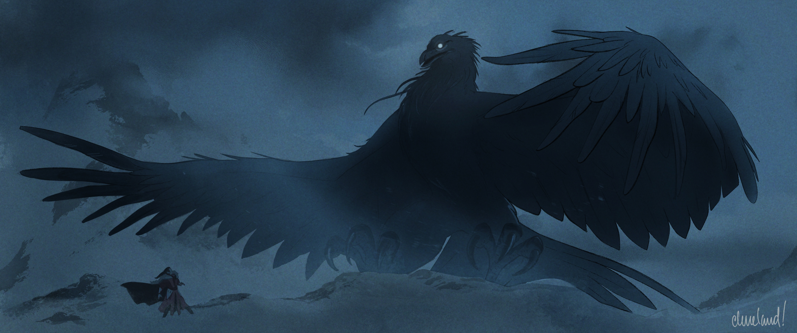
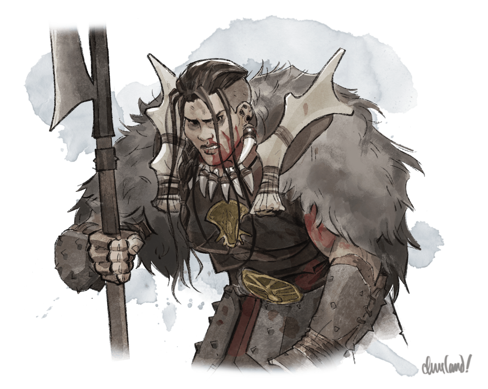
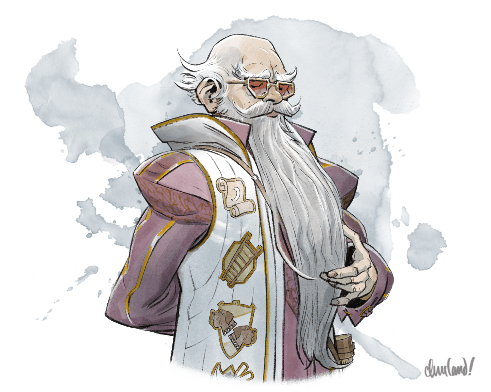
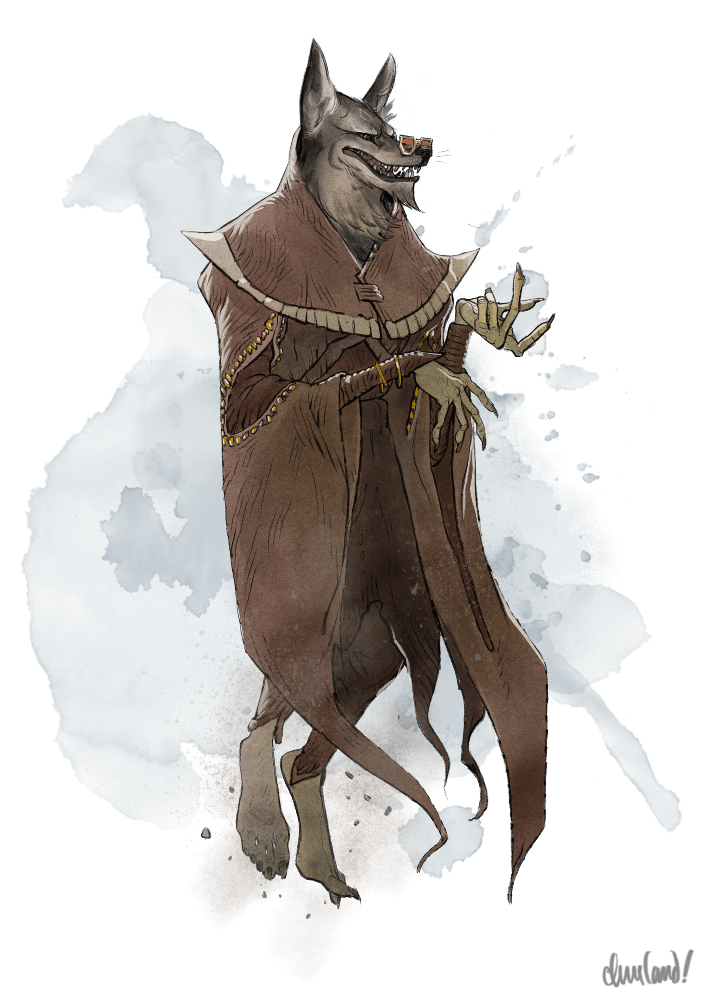
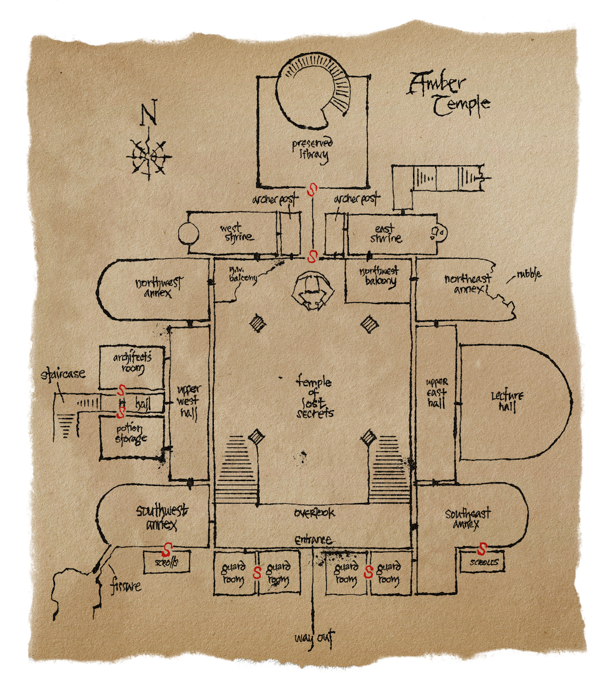
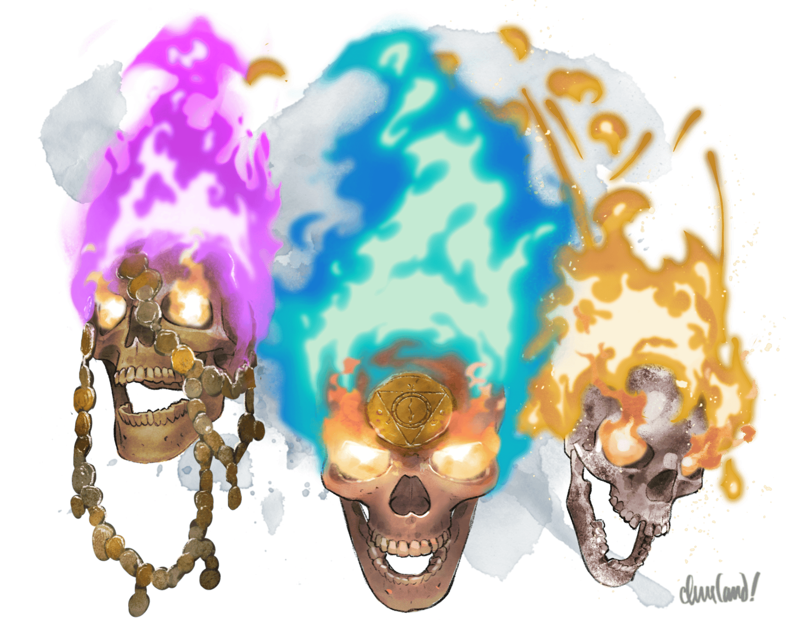
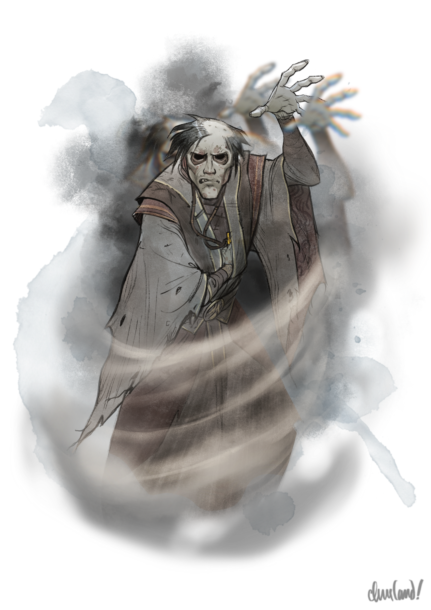
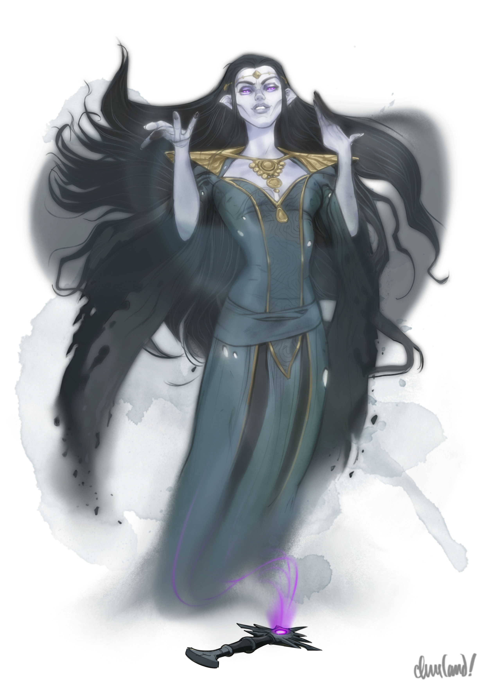
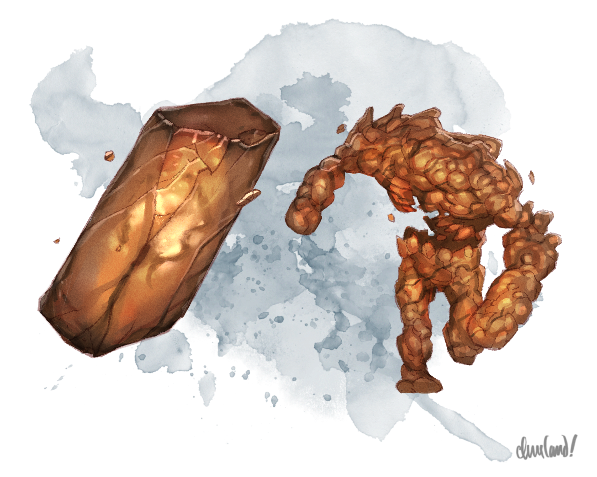

_Uma aventura para cinco personagens de 8º nível._
Neste arco, os jogadores mergulham nas profundezas do congelado Templo Âmbar em busca do há muito perdido punho da Sunsword: a única arma capaz de ajudá-los a derrotar Strahd. Mas o Templo Âmbar é protegido — por um arcanaloth dissimulado e disfarçado, um trio de caveiras flamejantes enlouquecidas e um par de letais golens de âmbar — e ocupado por uma legião de outras ameaças, desde um slaad da morte recém-chegado até o primeiro prisioneiro dos Poderes Sombrios: o mago traiçoeiro Vilnius.
Conforme os jogadores desenterram os antigos segredos do templo, uma pergunta domina suas mentes: onde Patrina Velikovna, a arquimaga elfo do crepúsculo e lich fracassada, escondeu o punho da Sunsword? A busca os levará a um grupo de Mountain Folk em meditação, a um nothic enlouquecido, a uma mesa de espíritos desconfiados e — por fim — ao sarcófago de âmbar do vestígio do Vampyr, onde Strahd aceitou pela primeira vez o dom sombrio do vampirismo. Mas o punho da Sunsword, oculto num semiplano secreto dentro da prisão do Vampyr, guarda um segredo mortal: o espírito descarnado de Patrina Velikovna, que pretendia usá-lo como sua filactéria. Poderão os jogadores derrotar Patrina e reacender a Sunsword — antes que as provações de Strahd os derrotem primeiro?
Não se esqueça: enquanto o farol de Argynvost estiver aceso, quaisquer NPCs que se opõem a Strahd também recebem um bônus de +1 na CA e nos testes de resistência.
Há mais de dois mil anos, uma sociedade secreta de magos de tendência boa construiu o Templo Âmbar conforme descrito em Capítulo 13: O Templo de Âmbar (p. 181). A sociedade, fundada inicialmente por um arquimago e três magos, acabou por incluir vinte e quatro magos aprendizes (Monsters of the Multiverse, p. 259), que os fundadores treinaram para expandir e dar continuidade ao seu trabalho.
Nos primeiros dias do templo, os membros mais graduados da sociedade partiam com frequência de suas muralhas para capturar e transportar novos vestígios, descritos em detalhe em Lore of Barovia. Uma vez trazidos ao templo, os vestígios eram levados até a S7e. Câmara Ritual, onde eram selados dentro de sarcófagos de âmbar. Depois de selados, os vestígios eram trancafiados nas Câmaras Leste, nas Câmaras Oeste ou — no caso de vestígios de poder remanescente considerável — na Câmara de Âmbar.
Enquanto residia no templo, o arquimago da sociedade ocupava os S7. Aposentos do Arquimago, enquanto seus magos seniores mantinham câmaras separadas nos Aposentos Oeste e nos Aposentos Leste. Um mago sênior estava sempre presente para supervisionar os magos aprendizes da sociedade, que dormiam em beliches no Alojamento Oeste e no Alojamento Leste. Os magos seniores e o arquimago faziam suas refeições nos próprios quartos.
Os membros da sociedade guardavam o templo a partir do Posto de Guarda Oeste e do Posto de Guarda Leste em turnos de oito horas, com quatro magos aprendizes e um mago designados para cada turno. Os aprendizes dividiam beliches, comiam no Salão de Jantar e faziam turnos de guarda em dias alternados. Quando não estavam de guarda, os aprendizes ou se reuniam no Salão de Aulas para aprender com um mago sênior, ou praticavam conjuração no Salão de Treinamento, ou ajudavam na limpeza, na cozinha da Sala do Arquiteto (então uma cozinha), na escrita de pergaminhos no Repositório de Pergaminhos Oeste e no Repositório de Pergaminhos Leste, na preparação de poções na Sala de Preparo e, de resto, auxiliando os magos seniores em seus trabalhos.
O templo continha dois tesouros — S6a. Tesouro Oeste e S6b. Tesouro Leste — que guardavam artefatos mágicos protegidos por um golem de âmbar cada. Acima deles, sacadas ao fundo do S2b. Átrio levavam a dois santuários dedicados ao deus dos segredos do templo. Os aprendizes ascendiam nas fileiras da sociedade ao se submeterem a provações nesses santuários: aqueles que resistiam ao terror despertado pela magia antipatia (antipathy) do Santuário do Medo eram promovidos a jornaleiros e recebiam autoridade sobre os demais aprendizes, enquanto os jornaleiros que resistiam à magia simpatia (sympathy) do Santuário da Tentação tornavam-se magos plenos, autorizados a viajar com os magos seniores para longe, a fim de capturar e transportar novos vestígios para o templo.
A primeira geração de magos do Templo Âmbar dedicou-se não apenas ao aprisionamento dos vestígios, mas também ao estudo de sua essência e de seu poder, de modo que pudessem continuar a conceber e aperfeiçoar rituais para capturá-los, transportá-los e aprisioná-los. À medida que morriam, os membros da primeira geração — que sabiam informações perigosas demais para arriscar um interrogatório sob a magia comunhão com os mortos (speak with dead) — eram sepultados nas S3. Catacumbas, muitos ao lado de tesouros, relíquias ou itens mágicos que haviam obtido em vida.
A segunda geração de magos do templo incluía muitos recrutas criados desde a juventude para temer o poder dos vestígios, além de vários magos nascidos e criados dentro do próprio Templo Âmbar. Com as câmaras de âmbar do templo já em grande parte preenchidas, a segunda geração tornou-se muito mais zelosa que a primeira, abandonando o estudo dos vestígios em favor do puro aprisionamento. Qualquer membro suspeito de estudar os vestígios era punido com severidade.
Quando a terceira geração de magos do templo assumiu o poder, vários membros em ascensão rejeitaram em segredo o fanatismo da segunda geração. Em vez disso, a curiosidade os impeliu a buscar conhecimento sobre os seres que havia tanto tempo mantinham presos, mas que raramente haviam visto. O estudo dos vestígios recomeçou de forma esporádica e sigilosa, com apenas alguns poucos membros ousando aproveitar as brechas cada vez maiores na segurança.
Um dia, porém, um dos magos seniores do templo — convencido de que nenhum mal poderia advir disso, e enlouquecido por uma curiosidade de longa data — desarmou a fechadura arcana (arcane lock) que protegia a X33a. Câmara de Shalx (p. 191) nas Câmaras Sudeste e aceitou o dom sombrio de Zrin-Hala, a Tempestade Uivante. O poder de Zrin-Hala, contudo, corrompeu o mago, e ele usou o dom sombrio do vestígio para matar um mago rival pouco tempo depois.
Embora o culpado tenha sido capturado e executado, o assassinato deixou os magos do Templo Âmbar isolados e temerosos. Conforme as proteções de segurança continuavam a enfraquecer, os vestígios estenderam sua influência a partir do sono sem sonhos dentro de seus sarcófagos e sussurraram aos seus carcereiros enquanto dormiam, arrastando-os ainda mais fundo na ilusão e na paranoia.
O líder da sociedade, um arquimago chamado Exethanter, adotou o hábito de beber somente de um jarro encantado, descrito em detalhe em X22. Anexo Noroeste (p. 187). Entretanto, o aprendiz de Exethanter, um homem paranoico chamado Vilnius, convenceu-se de que Exethanter conspirava para matá-lo e trocou secretamente o jarro por um idêntico, cheio de veneno. Ao ser bebido, o veneno matou tanto Exethanter quanto vários outros magos e aprendizes, cujos espíritos inquietos permaneceram como assombrações e espectros no Salão de Jantar.
A sociedade se fraturou. Magos se barricaram em seus quartos, e batalhas irromperam pelos corredores. Alguns saquearam as catacumbas ou os tesouros e depois fugiram. No fim, restou apenas um mago: Vilnius. Enlouquecido pela própria paranoia, Vilnius passou a acreditar aterrorizado que inimigos espreitavam por toda parte fora do templo, e escondeu-se no Salão de Aulas até morrer de fome. Os Poderes Sombrios — nascidos do miasma sombrio dos vestígios, do choque de magias poderosas e da ressonância psíquica de tantas mortes violentas — aprisionaram sua alma ali, alimentando-se de seu terror e desespero.
Vários anos depois de a sociedade se desfazer, ladrões arcanos — avisados por antigos membros que haviam fugido do caos — tentaram saquear o templo em busca de relíquias mágicas e tesouros. Embora tenham escavado um poço até a X33a. Câmara de Shalx (p. 191) nas Câmaras Leste e conseguido invadir o S6a. Tesouro Oeste, todos menos um foram mortos pelo golem de âmbar que habitava este último; suas almas, aprisionadas pelos Poderes Sombrios, tornaram-se poltergeists. O único sobrevivente fugiu com uma bolsa cheia de fragmentos de âmbar, que logo se espalharam pelo vale abaixo e por terras muito além.
O templo, quebrado, sombrio e oco, dormitou esquecido nas montanhas — até que a maga elfo do crepúsculo Patrina Velikovna tropeçou no segredo de sua existência quase dois mil anos depois. Escoltada até o vale por uma caravana Vistani após Strahd esmagar a rebelião dos elfos do crepúsculo, Patrina encontrou o caminho até o templo, onde desarmou suas proteções arcanas e buscou os segredos que ali jaziam. Desprezando os vestígios mais fracos que habitavam as Câmaras Leste e as Câmaras Oeste, não demorou muito para que Patrina desvendasse seu verdadeiro prêmio: o oceano de conhecimento arcano que repousava na S7b. Biblioteca do Arquimago — bem como o fantasma do arquimago Exethanter, que ali habitava.
Comovido pelo relato de Patrina sobre a perseguição aos elfos do crepúsculo, Exethanter concordou a contragosto em aceitá-la como aprendiz. Sem que ele soubesse, porém, Patrina obteve em segredo tomos proibidos das prateleiras do templo e estudou as artes sombrias, ao mesmo tempo em que se comunicava com o vestígio de Tenebrous dentro da S6c. Câmara de Âmbar, na esperança de se tornar poderosa o bastante para virar uma lich. Quando Exethanter descobriu sua duplicidade, tentou bani-la do templo — mas Patrina o subjugou, prendendo seu espírito e selando-o dentro da S7e. Câmara Ritual, onde ele não poderia mais incomodá-la.
Com o fantasma de Exethanter fora do caminho, Patrina tratou de remodelar o templo à sua própria imagem. Ergueu os magos há muito mortos da sociedade como caveiras flamejantes, reprogramou os golens de âmbar para obedecerem às suas ordens e ajustou as proteções do templo para admitirem apenas a ela.
Quando Strahd conquistou Barovia e começou a reunir magos para erguer o Castelo Ravenloft, foi Patrina quem o levou ao Templo Âmbar para tentá-lo com o poder de Tenebrous — seguido pouco depois pelo arquimago Khazan, a quem Patrina relutantemente permitiu estudar a riqueza de conhecimento do templo, para evitar as suspeitas de Strahd. Ali, Khazan, Strahd e o grande arquiteto Artimus desenvolveram o plano de como o Castelo Ravenloft seria construído: não uma fortaleza comum, mas uma cidadela talhada na própria rocha do Pedra-Pilar de Ravenloft, repleta de encantamentos protetores e armadilhas mágicas que a defenderiam de qualquer invasor.
Os Poderes Sombrios, contudo, ficaram fascinados pela capacidade de egoísmo e crueldade de Strahd — e, quando Strahd sentiu inveja do amor de Tatyana por Sergei, ofereceram-lhe o fragmento de âmbar do Vampyr. Desse pacto, os Poderes Sombrios ganharam uma base para além das muralhas do templo — e, quando Strahd morreu e se tornou um vampiro, arrebataram-no (e, por causa de sua conexão com os Fanes, também o vale de Barovia) para suas garras eternas. Embora os Poderes Sombrios hoje habitem toda a extensão e o entorno de Barovia, o Templo Âmbar é onde sua presença pode ser sentida com mais força — e, como o cordão umbilical do qual nasceu a prisão de Strahd, o lugar onde as fronteiras entre os mundos são mais frágeis.
S1. Exterior do Templo
Esta cena ocorre no Capítulo 13, Área X1.
Um jogador que obtenha sucesso num teste de Inteligência (Arcanismo) CD 15 se lembra de que o âmbar possui uma propriedade mágica única: é um "isolante" mágico e não pode ser danificado nem atravessado por nenhum tipo de energia, seja mágica ou divina. Com um resultado 20 ou mais, o jogador lembra ainda que energias mágicas só conseguem atravessar o âmbar muito lentamente, numa escala de tempo de anos a décadas.
Os fundadores do Templo Âmbar construíram o templo, seus sarcófagos e seus golens de âmbar para tirar proveito das propriedades isolantes únicas da substância. A primeira geração de magos acreditava que, ao fazê-lo, a influência dos vestígios não conseguiria ultrapassar suas prisões de sarcófago, os golens do templo estariam protegidos de seu toque corruptor e nenhum malfeitor poderia adivinhar a localização do templo simplesmente seguindo o rastro de energias sombrias.
A geração fundadora, no entanto, não percebeu que havia plantado as sementes da ruína das gerações seguintes — pois, à medida que a corrupção dos vestígios vazava lentamente de suas prisões de âmbar, as paredes de âmbar do templo aprisionavam essas energias dentro dos espaços habitados pelos magos, formando um "efeito estufa" que, com o tempo, expôs os magos a doses cada vez maiores de corrupção. Na época da terceira geração, essa corrupção havia se condensado num miasma escuro e invisível que impregnava o próprio ar do templo — um miasma que retorcia as mentes dos magos que ali viviam. Como uma sopa primordial, foi esse miasma que — enquanto a sociedade se despedaçava — deu à luz os Poderes Sombrios. Agora, mais de dois mil anos depois, esse miasma se adensou e cresceu tanto que o próprio templo é hostil à vida natural.
Por causa do miasma sombrio, qualquer humanoide ou besta que faça um descanso longo no Templo Âmbar tem visões terríveis e ouve os sussurros dos vestígios enquanto descansa. Essa criatura não obtém nenhum benefício do descanso e, ao terminá-lo, deve ser bem-sucedida num teste de resistência de Constituição CD 15 ou ganha 1 nível de exaustão.
Cada fragmento de âmbar anseia por retornar ao sarcófago de onde veio. Enquanto estiver dentro do Templo Âmbar, ou a até 30 metros dele, um fragmento de âmbar brilha e puxa suavemente na direção de seu sarcófago de origem. Ambos os efeitos terminam quando o fragmento chega a 1,5 metro de seu sarcófago.
Se um jogador que possua o fragmento de âmbar de um vestígio se aproximar da câmara desse vestígio, o vestígio sussurra ao ouvido do jogador a senha de sua câmara, conforme descrito em X33. Câmaras de Âmbar (p. 191).
A cada noite que os jogadores passarem no Templo Âmbar ou nas proximidades, Strahd os vigia por vidência ou os rastreia conforme descrito em Arco R - Trials of the Mountain. Se sua _vidência_ (_scrying_) falhar, ele também visita pessoalmente o Templo Âmbar para determinar se os jogadores estão lá.
Quando os encontra pela primeira vez, Strahd desmonta de Beucephalus, cumprimenta-os e pergunta "onde eles se meteram" durante o tempo que passaram em Soldav. (Strahd não sabe da existência de Soldav nem de suas proteções.) Se os jogadores se recusarem a revelar o que sabem sobre Soldav, Strahd sorri friamente e então garante que descobrirá — mais cedo ou mais tarde.
Independentemente da resposta dos jogadores, Strahd exige que sua primeira vítima — aquela que ele drenou ou escolheu primeiro durante R3b. A Primeira Provação do Tirano — se ofereça para ser mordida novamente. Se o jogador permitir que o mordam, Strahd o morde conforme descrito em O Jogo de Strahd.
Convocando a Roca. Se os jogadores convocarem a roca do Mt. Ghakis usando o apito dos Keepers, a roca chega de seu ninho no pico da montanha em até três rodadas. Quando isso acontecer, leia:
---
Uma grande sombra encobre o luar — e Strahd ergue os olhos, arregalando-os levemente.
Acima, um corvo gargantuesco tão alto quanto o Estalagem Água Azul, com uma envergadura duas vezes maior, desce sobre a encosta da montanha. Grandes rajadas de vento sopram a cada movimento errático de suas asas, lançando redemoinhos de neve em pó através do gelo. Com uma graça que desmente seu tamanho descomunal, ele pousa sobre os rochedos irregulares abaixo, suas garras do tamanho de carroças esmagando e sulcando a pedra sob elas.
Com um único movimento brusco, ele lança a cabeça para a frente na direção de Strahd e grita em advertência e desafio. Uma onda trovejante de som varre a montanha, o brado sonoro e estrondoso do corvo ecoando em seus ouvidos.

"The Roc of Mount Ghakis" by Caleb Cleveland. Support him on Patreon!---
Faça uma pausa para permitir que os jogadores reajam. Se ninguém reagir, a interação da roca com Strahd prossegue da seguinte forma, presumindo que nenhum jogador interfira:
- O rosto de Strahd se ensombrece. "Não tenho nenhuma desavença com você", ele adverte a roca, os olhos percorrendo sua envergadura. "Se persistir nesse caminho, não posso garantir que terminará bem para você." Sua voz baixa a pouco mais que um sussurro, e ele murmura: "Tem certeza de que deseja jogar este jogo?"
- A roca abaixa o olhar e assente, os olhos fuzilando-o de cima.
- "Como quiser", diz Strahd. Em seguida, ele assobia chamando Beucephalus, que surge ao seu lado.
Strahd então se vira para os jogadores. "Parece que vocês fizeram aliados bastante interessantes", comenta. "Não confundam este inconveniente com poderio — mas presumo que saibam que não podem ficar no topo desta montanha para sempre." Ele sorri friamente e, por um instante, seus olhos carmesins parecem brilhar na escuridão. "Que pena seria, é claro, se seus amigos em altitudes mais baixas precisassem de auxílio e vocês não estivessem lá para socorrê-los."
A menos que os jogadores intervenham, Strahd então inclina a cabeça numa reverência zombeteira — primeiro para a roca, depois para os jogadores. "Fica para outra ocasião, então", diz ele. Em seguida monta Beucephalus, deseja aos jogadores e à roca uma "boa noite" e desaparece no Plano Etéreo. (Strahd não retorna novamente enquanto os jogadores estiverem no Mt. Ghakis. Veja Arc T - The Three Fanes para mais informações sobre as maquinações seguintes de Strahd.)
Assim que Strahd parte, a roca pode confirmar as seguintes informações com acenos e negativas de cabeça (embora não ofereça informações que os jogadores ainda não saibam ou suspeitem):
- Ela é a roca do Mt. Ghakis.
- Seu verdadeiro nome é Turul, e ela já foi a familiar da Buscadora, que hoje é Madam Eva.
- Seu ninho fica no pico do Mt. Ghakis.
- Ela não é amiga de Strahd.
- Ela era o corvo encontrado em Arc M - The Dragon's Manor (se o grupo de fato o encontrou lá).
- Ela roubou a terceira gema encantada da vinícola Vinícola Feiticeiro dos Vinhos a mando de Madam Eva. (A roca não explicará por quê, nem revelará a localização da gema.)
- Ela não pode (e não vai) seguir os jogadores até o vale abaixo para ajudá-los na luta contra Strahd. (Seu lugar é o Mt. Ghakis.)
A roca permanece ao lado dos jogadores até o amanhecer, montando guarda pela noite inteira.
Se um jogador conquistar a amizade da roca, ela aparece em seus sonhos enquanto vela seu descanso, na esperança de transmitir uma pista sobre a localização da Sunsword. Quando o jogador adormecer, leia:
---
Enquanto você mergulha no sono, sente a escuridão se enrolar ao seu redor como um cobertor quente e confortável. Sente-se caindo, afundando na inconsciência — até que, enfim, seus olhos se abrem novamente.
Em vez do seu lugar de descanso, você está em meio a um cemitério de lápides de âmbar, o ar sufocado por uma névoa espessa e lenta. O som de asas rasga o silêncio, e um corvo pousa sobre uma lápide próxima, seus olhos brancos faiscando na luz fraca. Ele inclina a cabeça em sua direção e então grasna suavemente em cumprimento.
---
O corvo é uma representação espiritual da roca do Mt. Ghakis. Se o jogador o cumprimentar, ele alça voo e grasna de novo, tentando encorajar o jogador a segui-lo.
Se o jogador seguir o corvo, leia:
---
A grama morta do cemitério estala sob seus pés enquanto você segue, as névoas se enroscando famintas em seus tornozelos. Por vezes, o corvo não passa de uma sombra na neblina — até que a neblina se abre, revelando uma árvore negra alta e retorcida, cercada por um lodaçal escuro e fétido. A lama está semeada de ossos — milhares deles.
O corvo pousa no galho mais baixo da árvore e dirige o olhar a um ponto perto das margens do lodaçal. Ali, sob os ossos, uma tênue luz dourada bruxuleia bem no fundo da lama.
---
Se o jogador entrar no lodaçal e tentar recuperar a fonte da luz, leia:
---
Os ossos se agitam — e uma figura irrompe da lama, a carne encovada e esquálida, com orelhas pontudas e olhos fundos e violáceos. As mãos se movem para envolver seu pescoço — e você acorda.
S1a. Fachada
Esta área é em grande parte como descrita em X1. Fachada do Templo (p. 183). Entretanto, acrescente a seguinte frase ao final da descrição desta área:
Um fino manto de névoa desliza preguiçosamente do arco de entrada, depois se divide, formando um perímetro baixo ao redor do templo.
Conforme os jogadores se aproximam, Kasimir lhes lembra em voz baixa da mensagem enigmática de Patrina: que ela escondeu a arma que buscam "sob as raízes do poder de Strahd, no único lugar em que ele temia pisar". (Se os jogadores parecerem incertos sobre como interpretar a mensagem de Patrina, Kasimir, Ezmerelda ou Ireena os incentivam a reler o Tome of Strahd em busca de pistas.)
Temendo que Strahd pudesse de algum modo espionar os sonhos de Kasimir, Patrina ocultou sua mensagem num enigma. As "raízes do poder de Strahd" referem-se à árvore negra retorcida em O Sarcófago do Vampyr. "O único lugar em que ele temia pisar" refere-se ao canal de sangue e almas ao redor da árvore, que representa o maior medo de Strahd: a Morte.
O miasma dos vestígios deu à luz os Poderes Sombrios — e foi dentro do Templo Âmbar que os Poderes Sombrios encontraram sua primeira presa: o mago Vilnius, cuja paranoia e inveja o haviam levado a assassinar seu mentor, o arquimago Exethanter.
Muito antes de o pacto de Strahd von Zarovich permitir que os Poderes Sombrios espalhassem sua influência para o vale além, os Poderes Sombrios mantiveram Vilnius como prisioneiro imortal dentro das paredes de âmbar do templo, trancafiando sua alma — e a de todos os outros espíritos que ali habitavam — enquanto ele mergulhava cada vez mais fundo na loucura, no ódio por si mesmo e no rancor.
As névoas que cercam o Templo Âmbar não possuem nenhum dos poderes listados em Névoas de Ravenloft (p. 23). Entretanto, enquanto as névoas permanecerem, Vilnius e os mortos-vivos incorpóreos não podem deixar o templo. (Um fantasma que possui uma vítima deixa de ser incorpóreo enquanto durar a possessão.)
S1b. Fissura
Esta área é em grande parte como descrita em X1a. Fissura Estreita (p. 183). Entretanto, um jogador com uma Percepção passiva (Sabedoria) de 13 ou mais ouve vozes ecoando do outro lado da fissura. Um teste de Sabedoria (Percepção) CD 15 bem-sucedido permite que um jogador distinga a seguinte conversa:
- Uma voz masculina diz: "Diona, você não pode estar falando sério em querer ir atrás deles." (Este é Coryllus, um dos três Mountain Folk que acompanharam Diona, filha da Chefe Diegia, até o Templo Âmbar.)
- Uma voz feminina retruca: "E o que seríamos nós se os abandonássemos? Eles iriam a qualquer extremo para nos salvar. Não lhes devemos nada menos que isso." (Esta é Diona.)
Se os jogadores anunciarem sua presença, Diona exige que se identifiquem e digam o que vieram fazer no Templo Âmbar. Se ficar convencida de que os jogadores não são nem monstros nem peregrinos em busca de poder, Diona os convida cautelosamente a entrar — embora de forma mais calorosa se afirmarem conhecer sua família. (Diona e Coryllus precisam permanecer dentro do templo para completar o rito de passagem de Diona, e não sairão de lá por vontade própria.)

"Diona" by Caleb Cleveland. Support him on Patreon!Quatro dias atrás, Diona, filha mais velha e herdeira da Chefe Diegia, partiu de Soldav rumo ao Templo Âmbar, onde passaria seis dias e seis noites em contemplação, provando assim sua resiliência, sua força e sua vontade de resistir à tentação, conforme a tradição dos Mountain Folk. Três amigos acompanharam Diona até o Templo Âmbar: os berserkers Coryllus e Meda, e o batedor Duras.
Quando os companheiros chegaram ao templo e passaram pela X2. Entrada (p. 183) rumo ao X5. Templo dos Segredos Perdidos (p. 183), surpreenderam-se ao encontrar as três caveiras flamejantes do templo — havia muito tidas como adormecidas — guardando o local contra invasões. Os Mountain Folk se separaram: Meda fugiu em pânico para o X6. Anexo Sudeste (p. 185), enquanto os demais se abrigaram no X15. Anexo Sudoeste (p. 186).
Separada dos amigos e perseguida pela sádica caveira flamejante Gaspar (veja S2e. Galeria Oeste para mais informações sobre Gaspar), Meda refugiou-se no X3. Alojamento Vazio (p.183) a leste, onde encontrou uma porta secreta que levava à X2b. Sala da Guarda (p. 183). Ali, encontrou o cadáver congelado de uma bruxa baroviana segurando um fragmento de âmbar de Khirad. (Veja Posto de Guarda Leste para mais informações sobre essa bruxa.) Enfeitiçada pelo fascínio do fragmento, Meda o tomou para si e o escondeu sob o manto.
Pouco depois do ataque das caveiras flamejantes, o arcanaloth Neferon — disfarçado como o mago humano Heinrich Stolt — surgiu e ordenou que as caveiras recuassem. Depois de ouvir a história dos Mountain Folk, "Heinrich" informou-lhes solenemente que o X5. Templo dos Segredos Perdidos (p. 183) lhes estava proibido, mas concordou em permitir que permanecessem no X15. Anexo Sudoeste (p. 186) em troca de uma "doação" de poder ou valor adequados. (Diona fez esse tributo a contragosto, abrindo mão de sua pedra da boa sorte: uma herança de família que recebera do pai em seu décimo oitavo aniversário.)
Todas as noites desde então, enquanto os Mountain Folk dormiam no X15. Anexo Sudoeste (p. 186), cada um sofreu pesadelos vívidos e terríveis, conforme descrito em Descansos no Templo Âmbar acima — mas nenhum tanto quanto Meda. Através de seu fragmento, Khirad, a Estrela dos Segredos, falou com ela, mostrando-lhe visões da Grande Conjunção: dos véus entre os mundos rasgados ao meio; de uma arma nascida de mil almas gritantes; e dos cadáveres de seus amigos e familiares, servindo à Grande Sombra — Strahd — numa não-morte eterna. Khirad prometeu a Meda que poderia mostrar-lhe um caminho para evitar esse destino terrível — bastava que ela encontrasse o caminho até seu sarcófago e aceitasse seu dom.
Na noite passada, quando o sonho de Khirad terminou, Meda acordou e esgueirou-se silenciosamente rumo ao X4. Mirante (p. 183). Embora Diona e Coryllus continuassem dormindo, Duras — que não conseguira pegar no sono — viu Meda sair de fininho e decidiu segui-la. Meda chegou até o X6. Anexo Sudeste (p. 185) antes que Duras a alcançasse, e uma discussão começou. Aterrorizada pelo destino que previra e pelas ameaças de Duras de revelar sua duplicidade aos outros, Meda o empurrou numa tentativa súbita de fuga — e, ao fazê-lo, acidentalmente o derrubou pelo largo poço de pedra até a X33a. Câmara de Shalx (p. 191). A queda de nove metros quebrou o pescoço de Duras, matando-o instantaneamente.
Meda fugiu, passando pelo X8. Corredor Leste Superior (p. 185) e pelo X12. Santuário Leste (p. 186), e então descendo a X14. Escadaria Norte (p. 186) até a X33c. Câmara Medonha (p. 192). Ali, ela aceitou o dom sombrio de Khirad, que a transformou numa nothic.
Quando Diona e Coryllus acordaram, não encontraram nenhum sinal dos amigos desaparecidos. Ambos acreditam que Meda e Duras foram sequestrados — ou coisa pior. Enquanto Diona está determinada a resgatar os dois, Coryllus (sempre um pragmático sombrio) acredita que isso é um esforço temerário, e que os dois desaparecidos provavelmente já estão mortos.
S2. Defesas do Templo
Uma criatura posicionada atrás de uma seteira do Templo Âmbar (por exemplo, as caveiras flamejantes em X17. Corredor Oeste Superior (p. 187)) só consegue enxergar num cone de 60 metros que se estende a partir daquela seteira. Ela não consegue ver outras criaturas a menos que estejam iluminadas ou visíveis à sua visão (por exemplo, visão no escuro ou visão verdadeira).
Uma criatura que olhe para dentro de uma seteira do Templo Âmbar a partir do lado de fora só consegue enxergar numa linha de 1,5 metro que se estende a partir daquela seteira.
S2a. Salão de Entrada
Esta cena ocorre no Capítulo 13, Área X2.
Esta área é em grande parte como descrita em X2. Entrada (p. 183). Se um jogador olhar por qualquer uma das seteiras, leia:
Pela fresta estreita, vocês captam um vislumbre pequeno e limitado de uma câmara fria e imóvel.
S2b. Átrio
Esta cena ocorre no Capítulo 13, Áreas X4, X5, X5a, X11 e X23.
O X4. Mirante (p. 183) fica a 15 metros dos X5d. Reflexos de Âmbar (p. 184), a 30 metros do X5a. Deus dos Segredos (p. 184) e a 33 metros do X39. Tesouro Saqueado (p. 194) e do X40 Tesouro Selado (p. 194). Jogadores sem visão no escuro suficiente ou uma fonte de luz adequada não conseguem enxergá-los a partir do X4. Mirante (p. 183).
Mirante
Esta área é em grande parte como descrita em X4. Mirante (p. 183). Entretanto, acrescente o seguinte texto ao final da descrição desta área:
Uma luz tênue e flamejante bruxuleia a partir de um trio de seteiras ao longo da parede oeste.
Além disso, na primeira vez que o arcanaloth Neferon (descrito em X5. Templo dos Segredos Perdidos (p. 183)) notar os jogadores, ele conjura mente branca (mind blank) em si mesmo e então assume a forma de Heinrich Stolt, conforme descrito em X5a. Deus dos Segredos (p. 184).
Não se esqueça de que Neferon possui visão verdadeira num alcance de 36 metros. (Veja Visão Verdadeira (Player’s Handbook, p. 183 ou Player’s Handbook (2024), p. 377) para mais informações sobre visão verdadeira.)
A Saudação de Heinrich
Na primeira vez que os jogadores fizerem qualquer movimento para deixar o X4. Mirante (p. 183) e avançar templo adentro — por exemplo, aproximando-se das escadas que descem para o X5. Templo dos Segredos Perdidos (p. 183), da porta para o X3. Alojamento Vazio (p. 183) a oeste, ou das portas duplas para o X6. Anexo Sudeste (p. 185) ou o X15. Anexo Sudoeste (p. 186) —, Neferon conjura portal dimensional (dimension door) para se teleportar até o X3. Alojamento Vazio (p. 183) a oeste ou o X6. Anexo Sudoeste (p. 183), o que estiver mais perto dos jogadores. Imediatamente após ele fazê-lo, leia:
Vocês ouvem o som de passos ecoando pelo piso congelado.
Dê aos jogadores um momento para reagir. Se ninguém reagir, ou se algum deles chamar pela fonte dos passos, "Heinrich" sai ao mirante para cumprimentá-los. Quando ele surge à vista, leia:
Um homem idoso e engelhado pisa no mirante. Ele veste um manto pálido e branco decorado com inúmeros remendos coloridos, cada um retratando um objeto diferente. Um par de óculos dourados com lentes de cristal rosado repousa sobre a ponte de seu nariz, logo acima de uma longa barba branca que desce até abaixo do peito.
"Bom dia", diz ele animadamente. "Posso perguntar por que estão invadindo minha propriedade?"

"Heinrich Stolt" by Caleb Cleveland. Support him on Patreon!Enquanto se concentra em alterar-se (alter self), Neferon não pode conjurar outra magia de concentração (por exemplo, detectar pensamentos), e emite uma aura de magia de transmutação sob o escrutínio de uma magia detectar magia.
"Heinrich", que parece mais curioso e divertido com a presença dos jogadores do que hostil, pode compartilhar as seguintes informações:
- Ele é Heinrich Stolt, um mago responsável por zelar pelo Templo Âmbar e protegê-lo. (Um teste de Sabedoria (Intuição) CD 21 revela que isso é mentira.)
- Ele reside no templo há dez anos, desde que se viu "arrebatado" para Barovia pelas Névoas. (Um teste de Sabedoria (Intuição) CD 21 revela que isso é mentira.)
- Ele conta em sua missão com três caveiras flamejantes servas, que o ajudam a repelir incursões de invasores indesejados. "Elas podem ser bastante temperamentais", diz Heinrich animadamente. "Um tanto explosivas, se é que me entendem. Mas são ossos bons, todas elas."
- Ele considera o Templo uma "relíquia histórica", mas não se importa em permitir que visitantes explorem seus salões abobadados — desde que façam uma doação apropriada em consideração aos seus esforços para preservá-lo e protegê-lo.
Se surgir um momento oportuno, "Heinrich" pergunta aos jogadores por que vieram ao templo — e o que buscam em suas câmaras ancestrais. Se os jogadores derem uma resposta insatisfatória, "Heinrich" tenta cavar mais fundo, na esperança de vislumbrar algo de suas intenções. Se "Heinrich" acreditar que um jogador está mentindo, ele o repreende gentilmente por "ocultar a verdade" e o convida a revelar o verdadeiro motivo de sua presença.
"Heinrich" espera esconder sua relação com Strahd. Se lhe perguntarem se já conheceu Strahd, "Heinrich" responde: "No tempo que passei aqui, nunca tive o prazer ou o desprazer de ver seu rosto à minha porta." Se lhe perguntarem sua opinião sobre Strahd, "Heinrich" responde: "Sinto que seria errado formar uma opinião sobre o homem sem conhecê-lo." (Ambas as respostas são tecnicamente corretas, mas destinadas a ofuscar a verdade. Um teste de Sabedoria (Intuição) CD 21 sugere que "Heinrich" não está sendo inteiramente franco.)
Se os jogadores perguntarem a "Heinrich" por que o miasma sombrio do templo não o prejudica, ele responde (com sinceridade) que "nunca sofreu qualquer efeito nocivo ao dormir dentro do templo", e questiona se eles "simplesmente não têm constituições fracas".
Se os jogadores ameaçarem "Heinrich" ou se recusarem a responder suas perguntas a contento, "Heinrich" endireita a postura, ajeita os óculos e os adverte sombriamente que, embora seja "um homem pacífico por natureza", ele "não hesitará" em recorrer à ajuda de suas aliadas caveiras flamejantes caso os jogadores tentem enganá-lo ou forçar a entrada no Templo. "Garanto a vocês", diz ele com um sorriso seco, "posso ser velho, mas estou longe de ser incapaz."
Se os jogadores atacarem "Heinrich" ou ignorarem suas advertências, "Heinrich" usa seu deslocamento de voo para se erguer no ar, adverte-os de que "cometeram um erro terrível" e recua para o X5. Templo dos Segredos Perdidos (p. 183), usando sua ação teleporte para se teleportar até o X5a. Deus dos Segredos (p. 184) assim que este entrar em seu alcance. Neferon e as caveiras flamejantes em X17. Corredor Oeste Superior (p. 187) então atacam conforme descrito em X5. Templo dos Segredos Perdidos (p. 183). ^heinrichsdiscipline

"Neferon" by Caleb Cleveland. Support him on Patreon!Em combate, Neferon começa conjurando relâmpago em cadeia (chain lightning), seguido de bola de fogo (fireball). Se for encurralado ou ferido, ele conjura portal dimensional para se teleportar a qualquer um dos seguintes locais: X13. Posto de Arqueiro Leste (p. 186), X25. Posto de Arqueiro Oeste (p. 188) ou X8. Corredor Leste Superior (p. 185). Ele então usa as seteiras desses locais para continuar o combate.
Neferon não persegue os jogadores para as profundezas do templo, preferindo permanecer atrás de cobertura com linha de visão para o X5. Templo dos Segredos Perdidos (p. 183). Ele sabe que eles terão de voltar ao X5. Templo dos Segredos Perdidos (p. 183) para escapar do templo.
Se possível, Neferon usa seu deslocamento de voo para permanecer pairando no ar o tempo todo, preferindo ficar perto do teto do cômodo em que estiver sempre que puder.
Se for reduzido a 62 pontos de vida ou menos, Neferon conjura portal dimensional para se teleportar aos céus acima do Templo Âmbar, onde permanece até o anoitecer. Naquela noite, se os jogadores começarem um descanso longo no templo ou nas proximidades, Neferon conjura invisibilidade e se aproxima do acampamento deles para enfraquecê-los ou destruí-los, preferindo fazê-lo sem entrar em combate aberto (por exemplo, conjurando antes força fantasmagórica, detectar pensamentos ou sugestão).
Neferon nunca confronta os jogadores sem reservar ao menos um espaço de magia de 4º círculo (para conjurar portal dimensional e escapar) e um espaço de magia de 3º círculo (para conjurar contramágica caso o portal dimensional seja anulado). ^neferonstactics
O Pedido de Heinrich
"Heinrich" tem prazer em permitir que os jogadores explorem o Templo em troca de "uma pequena taxa — um serviço menor, na verdade". Se os jogadores demonstrarem interesse, "Heinrich" compartilha as seguintes informações:
- Normalmente, o Templo Âmbar é isolado e silencioso. Na noite passada, porém, uma criatura chegou de outro mundo por meio de "algum portal estranho": um slaad, do plano de Limbo. ("Um slaad da morte, para ser preciso", observa "Heinrich" sombriamente, empurrando os óculos nariz acima — "um dos membros mais perigosos da raça slaad.")
- Heinrich conseguiu, com alguma sorte (e o uso de um antigo mecanismo de fechadura arcana construído pelos habitantes originais do templo), aprisionar a criatura nas catacumbas do templo. Ele teme, contudo, que o slaad logo escape e provoque estragos por todo o templo — ou pelo vale abaixo. (Um teste de Sabedoria (Intuição) CD 21 revela que "Heinrich" está de fato preocupado com o slaad — mas não parece autenticamente preocupado com a segurança do povo barovês.)
- "Heinrich" tem prazer em permitir que os jogadores explorem o templo se eles descerem às catacumbas e "removerem" (isto é, matarem) o slaad da morte para ele. (As catacumbas, conta ele, ficam sob o mirante, na extremidade sul do X5. Templo dos Segredos Perdidos (p. 183).)
- Heinrich está disposto a ensinar aos jogadores a senha secreta, "Etherna", para abrir as portas magicamente seladas das catacumbas.
Se os jogadores se recusarem a cumprir a tarefa de "Heinrich", ele responde conforme descrito em A Disciplina de Heinrich acima.
Um jogador que obtenha sucesso num teste de Inteligência (Arcanismo) CD 15 se lembra do primeiro parágrafo de informações fornecido em Monster Manual "Slaadi," Monster Manual (p. 278). Com um resultado 20 ou mais, o personagem se lembra de todo o restante do conhecimento listado naquela entrada. Com um resultado 25 ou mais, o jogador se lembra das resistências elementais do slaad da morte, de sua capacidade de mudar de forma, de sua resistência mágica, de suas habilidades regenerativas, de sua visão às cegas e de sua capacidade de conjurar magias.
Como arcanaloth, Neferon se orgulha de cumprir a palavra ao pé da letra — mas somente ao pé da letra. Assim, embora Neferon possa permitir que os jogadores explorem o Templo Âmbar, ele não tem qualquer intenção de deixá-los partir com itens ou conhecimentos de valor apreciável.
Se os jogadores perguntarem a "Heinrich" se ele os deixará partir em paz, ele promete que "há de permitir que deixem o templo com seus pertences intocados". Se, em vez disso, pedirem permissão para ficar com quaisquer itens que encontrarem, ele promete suavemente fazer "esforços razoáveis" para negociar os termos de tal troca antes que partam — "sujeitos, é claro, a divulgações razoáveis sobre a natureza e o valor do item".
Valendo-se de sua visão verdadeira e de portal dimensional, Neferon decifrou os grimórios guardados na X30. Biblioteca Preservada (p. 189), e por isso substituiu sua magia banimento (banishment) (que ele deduziu corretamente não funcionar em Barovia — sobretudo depois de ela ter falhado em banir o slaad da morte de volta a seu plano natal, Limbo) pela magia olho arcano (arcane eye).
Se ele vir ou ouvir os jogadores entrarem no X15. Anexo Sudoeste (p. 186), na X14. Escadaria Norte (p. 186) ou em qualquer área dentro de S3. Catacumbas, S6. Câmaras do Templo ou S7. Aposentos do Arquimago, Neferon conjura olho arcano para segui-los, tomando nota cuidadosa de suas forças, fraquezas, capacidades, interesses e descobertas. (Dado seu valor de Inteligência 20, seu bônus de +7 em testes de Percepção e seu bônus de +11 em testes de Intuição, Neferon é capaz de usar seu olho arcano para ler lábios e, portanto, consegue "ouvir" as palavras faladas pelos jogadores se o olho arcano enxergar seus lábios.) Neferon renova a magia conforme necessário, mas não a renova enquanto os jogadores estiverem descansando, nem se lhe restar apenas um espaço de magia de 4º círculo.
Natural do plano de Gehenna, lar dos yugoloths, Neferon foi arrebatado para Barovia pelas Névoas dez dias antes da chegada dos jogadores ao Templo Âmbar, enquanto tentava viajar de Gehenna a Avernus para um possível negócio. Irritado com o desvio, mas determinado a buscar oportunidades neste novo reino, Neferon logo tratou de explorar os arredores, aprender sobre seus habitantes e pilhar para si todo o conhecimento, riqueza e magia que encontrasse.
Neferon navegou o Templo Âmbar com facilidade, documentando mentalmente cada vestígio, tesouro e relíquia com que se deparava. Com seu portal dimensional, nenhuma porta lhe estava trancada; com sua visão verdadeira, nenhum livro da X30. Biblioteca Preservada (p. 189) lhe era em branco. Escolheu fazer seu covil no X5a. Deus dos Segredos (p. 184), reconhecendo suas vantagens táticas, e passou uma noite inteira conjurando um ritual que envolveu sua cabeça em escuridão mágica.
Embora as caveiras flamejantes tenham desconfiado de sua presença a princípio, Neferon usou sua língua de prata (e a magia detectar pensamentos) para convencê-las de que era o herdeiro de Patrina, enviado para reclamar o templo em nome dela após séculos de abandono. Informou-lhes solenemente que ela falecera alguns anos depois de fazer amizade com ele, e apresentou uma cópia em ilusão menor (minor illusion) de seu "último testamento", que dizia:
---
Eu, Patrina Velikovna, estando em pleno gozo de minhas faculdades mentais e físicas,
em consideração aos seus muitos anos de amizade,
e em consideração à minha falta de quaisquer parentes de sangue vivos,
por meio deste documento nomeio Neferon de Gehenna meu único herdeiro e beneficiário, herdeiro de todas as terras, títulos, propriedades e vassalagens a mim devidos.
---
(O testamento original, informou Neferon tristemente às caveiras flamejantes, já havia sido destruído desde então.)
Com o Templo Âmbar agora inteiramente sob seu controle, Neferon estendeu suas andanças, voando invisível sobre os rochedos do Mt. Ghakis e sondando as propriedades e os limites das Névoas do sul. Ao constatar que as Névoas eram intransponíveis, Neferon voltou sua atenção para o norte, observando Berez, Argynvostholt e Krezk dos céus. Em Vallaki, assumiu a forma de um humano e se perdeu na multidão, ficando sabendo do vampiro Strahd von Zarovich, da hibernação e do recente despertar de Strahd, e do cerco à vila de Barovia.
Curioso para saber mais sobre o soberano daquela terra, Neferon voou para leste, rumo ao Castelo Ravenloft — mas, enquanto estudava a fortaleza dos céus, um morcego solitário perfurou sua invisibilidade com sua visão às cegas e relatou sua presença a Strahd. Quando Strahd cavalgou sobre Beucephalus e emergiu do Plano Etéreo para saudá-lo, Neferon prontamente se ajoelhou e prestou homenagem a Strahd como senhor de Barovia. Intrigado, mas desconfiado dos interesses de Neferon, Strahd interrogou-o cordialmente sobre seu tempo e suas intenções em Barovia, enquanto Neferon tentava sutilmente extrair da conversa, pela outra ponta, as próprias intenções de Strahd.
Conforme a conversa se desenrolava, porém, Neferon logo percebeu que Strahd não tinha intenção alguma de permanecer em Barovia. Sempre um dos membros mais ousados de sua espécie, Neferon ofereceu seus serviços como diplomata e conselheiro — em troca do domínio sobre o Templo Âmbar e de uma "compensação justa". Quando Strahd, rindo, perguntou a Neferon que utilidade poderia ter para um diplomata, Neferon apontou friamente o histórico de conquistas de Strahd, o modo como as Névoas o haviam capturado enquanto viajava entre mundos, e o incrível poder arcano que sentira fluir para a torre mais alta do castelo. "Os véus entre os mundos estão ficando finos", disse Neferon com cuidado, acrescentando: "Se algum dia Vossa Graça se vir em posição de tirar proveito de tal coisa, não duvido que possa precisar de um agente para executar sua vontade, seja um diplomata, um tradutor ou um conselheiro." Impressionado, mas cauteloso diante da perspicácia de Neferon, Strahd concordou em considerar a proposta, e Neferon retornou satisfeito ao Templo Âmbar.
Neferon, contudo, não foi a única vítima da Grande Conjunção iminente. Naquela noite, enquanto Neferon descansava no X5a. Deus dos Segredos (p. 184), as Névoas arrebataram um slaad da morte do plano de Limbo para o X8. Corredor Leste Superior (p. 185). Embora Neferon tenha tentado bani-lo à distância, a visão às cegas e os ouvidos aguçados do slaad logo lhe permitiram detectar sua presença — e então sua sede de sangue sádica o impeliu a atacar.
Neferon fugiu, invocando suas novas caveiras flamejantes servas para defendê-lo. Ficou consternado, no entanto, ao descobrir que a magia delas (bem como boa parte da sua própria) pouco fazia para ferir o slaad, cujas feridas se regeneravam quase tão depressa quanto surgiam. Pensando rápido, Neferon atraiu o slaad para as S3. Catacumbas e então usou sua ação teleporte para escapar antes de selar o slaad atrás da antiga fechadura arcana que encanta as portas das catacumbas. Cauteloso diante da magia necromântica que protege as portas, o slaad recuou para as catacumbas e acalmou sua agressividade — ao menos por algum tempo.
Neferon sabe que as portas das catacumbas não conterão o slaad para sempre. Embora esteja confiante de que a criatura ainda não escapou, ele sabe que a transposição planar (plane shift) do slaad pode lhe permitir fugir da prisão e voltar para matá-lo. Ainda que Neferon tenha começado a reprogramar o golem de âmbar do X8. Corredor Leste Superior (p. 185( para servi-lo, ele não conseguiu abrir as portas do X40. Tesouro Selado (p. 194) e, assim, recrutar os serviços do golem de âmbar que ali habita. A cada hora que o slaad continua vivo, Neferon teme estar ficando sem tempo.
Se os jogadores pedirem, Neferon tem prazer em fechar acordos adicionais com eles, incluindo (mas não se limitando a) os seguintes.
Planta do Templo. Neferon pode fornecer um mapa simples do templo (excluindo S6. Câmaras do Templo e S7. Aposentos do Arquimago, cuja existência ele finge desconhecer) em troca de um item mágico raro em posse dos jogadores, ou de três segredos úteis que conheçam sobre a terra ou o povo de Barovia.
Habitantes do Templo. Neferon pode advertir os jogadores sobre os demais habitantes do templo em troca de um item mágico raro em posse dos jogadores, ou de dois segredos úteis que conheçam sobre a terra ou o povo de Barovia. Especificamente, Neferon pode alertá-los sobre o golem de âmbar do X8. Corredor Leste Superior (p. 185), os poltergeists da X38. Sala Assombrada (p. 194) e do X39. Tesouro Saqueado (p. 194), os espíritos do Salão de Jantar e a "aparição lúgubre" que habita o X9. Salão de Aulas (p. 185).
(Neferon desconhece as verdadeiras identidades e intenções dos espectros, que sentem sua natureza demoníaca e se recusam a interagir com ele. Embora Neferon tenha tentado investigar a presença de Vilnius, Vilnius gritou de raiva e terror diante dele e desapareceu nas sombras. Neferon não conseguiu encontrar Vilnius novamente, embora tenha sentido sua presença todas as vezes que entrou no salão de aulas desde então.)

"Heinrich's Map by Caleb Cleveland. Support him on Patreon!Quando chegou a Barovia, Neferon pouco temia os perigos que aquela nova terra pudesse lhe oferecer. (Veja De Volta a Gehenna em Arcanaloth (Monster Manual, p. 313) para mais informações sobre a imortalidade dos arcanaloths.) Ficou consternado, no entanto, ao descobrir que sua chegada a Barovia havia feito algo extraordinário: separado seu "espírito" de sua carne demoníaca e depositado-o dentro de uma filactéria, que aparece conforme descrito em X28. Filactéria Oculta (p. 189). (Veja Filactérias Demoníacas abaixo para mais informações sobre a filactéria de Neferon.) Percebendo a importância da filactéria, Neferon a escondeu em X28. Filactéria Oculta (p. 189), onde ela permanece até hoje.
Quando um demônio entra nas Névoas, os Poderes Sombrios dividem seu ser em dois, criando assim um meio para que ele retorne da morte sem escapar das Névoas.^[Teeuwynn Woodruff, Van Richten’s Guide to Fiends, pp. 76-77 (TSR Inc., 1995)] Embora o intelecto e a fisiologia do demônio permaneçam com seu corpo, os Poderes Sombrios colocam sua essência vital dentro de uma filactéria (veja Lich (Monster Manual, p. 202)). Quando o corpo do demônio é destruído, sua mente se transfere para a filactéria, onde pode permanecer indefinidamente à espera de um novo corpo. (Diferentemente de um lich, um demônio destruído dessa forma precisa possuir uma vítima viva, e não pode criar um novo corpo para si.)
Enquanto o demônio permanecer em sua filactéria, ele e a filactéria ganham efeitos em grande parte idênticos aos de uma magia jarra mágica (magic jar), com as seguintes alterações:
- O demônio não pode tentar possuir uma criatura por vinte e quatro horas após a destruição de seu corpo.
- O ato de possessão consome a alma da criatura possuída.
- Enquanto possui uma criatura, o demônio mantém o mesmo número de Dados de Vida. (Veja Pontos de Vida (Monster Manual, p. 7) para mais informações sobre como determinar os Dados de Vida de uma criatura por tamanho, encontrar a média de pontos de vida por dado e calcular os pontos de vida da criatura.)
- Se o corpo possuído morrer, a mente do demônio retorna à sua filactéria, independentemente da distância ou do local.
Como arcanaloth, Neferon prefere vender suas habilidades a quem pagar mais, sempre que possível. Embora intrigado pela oportunidade de fechar acordos com os jogadores, ele acredita que pode obter recompensas muito mais frutíferas aliando-se a Strahd — a posição de grão-vizir de um antigo senhor vampiro com exércitos de mortos-vivos e magia poderosa é, Neferon sabe, um prêmio pelo qual qualquer demônio mataria.
Salvo circunstâncias verdadeiramente excepcionais, preço algum afastará Neferon de sua atual lealdade a Strahd, e garantia alguma o convencerá da capacidade dos jogadores de derrotar Strahd — nem mesmo uma Sunsword acesa. Além disso, se Neferon souber da Sunsword, ele dedica seus esforços a obtê-la — diplomaticamente se possível, mas por meio de trapaça ou força se necessário. (Embora Neferon não tenha intenção de entregar a Sunsword a Strahd, ele a vê como uma possível moeda de troca no futuro — e uma garantia contra o fracasso ou a traição de Strahd, quando os dois inevitavelmente se separarem daqui a décadas ou séculos.)
Nave
Esta cena ocorre nas áreas X5, X5a e X5c.
Esta área é em grande parte como descrita em X5. Templo dos Segredos Perdidos (p. 183), X5a. Deus dos Segredos (p. 184) e X5c. Portas Trancadas (p. 184).
Sacadas
Esta área é em grande parte como descrita em X11. Sacada Nordeste (p. 186) e X23. Sacada Noroeste (p. 188). Entretanto, altere a última frase da descrição de X23. Sacada Noroeste (p. 188) para que diga:
Quase metade da sacada desabou, e o restante pende em direção ao chão nove metros abaixo, com grandes rachaduras se espalhando como teias pela junção onde a sacada encontra a parede norte.
S2c. Guarnição Oeste
Esta cena ocorre no Capítulo 13, Áreas X2a e X3.
Alojamento Oeste
Esta área é em grande parte como descrita em X3. Alojamento Vazio (p. 183). Entretanto, acrescente o seguinte texto ao final da descrição desta área:
Entalhes antigos marcam as paredes em diversos pontos.
Um jogador que inspecionar os entalhes encontra as seguintes mensagens gravadas na pedra:
- "Azalin esteve aqui."
- "Viktra + Elise" (com um coração desenhado em volta)
- "Por que Vladeska Drakov atravessou a sala de aula? Para gritar com o outro lado!"
- "ANKHTEPOT FEDE"
- "Harkon comeu meu dever de casa"
- Um arranjo desajeitado de runas arcanas. (Um teste de Inteligência (Arcanismo) CD 13 revela que as runas parecem ser uma tentativa fracassada de conjurar um criado invisível (unseen servant), com um parâmetro alterado para permitir que o criado fizesse o dever de casa de quem as escreveu.)
Posto de Guarda Oeste
Esta área é em grande parte como descrita em X2a. Sala da Guarda (p. 183). Entretanto, quando um jogador entrar nesta sala, leia:
Vocês encontram uma sala fria e vazia. Duas seteiras estão talhadas na parede leste. No canto nordeste, algo reluz sob uma espessa camada de gelo.
O objeto reluzente é um antigo orbe de cristal manchado de sangue, que vale 10 po se limpo. Uma inspeção minuciosa revela impressões digitais ancestrais queimadas em preto na superfície do orbe. (O orbe já foi o foco arcano de um mago aprendiz do Templo Âmbar, assassinado por um rival quando o templo mergulhou no caos.)
S2d. Anexo Oeste
Esta cena ocorre no Capítulo 13, Áreas X15 e X16.
Esta área é em grande parte como descrita em X15. Anexo Sudoeste (p. 186). Entretanto, não há nenhum lobo atroz nem "montanheses sedentos de sangue" presentes. Em vez disso, acrescente o seguinte ao final da descrição desta área:
Uma mulher alta e de ombros largos, vestida com peles de lobo, empunha uma lança longa de lâmina única com a ponta curva, logo ao lado de um homem atarracado, de barba por fazer espessa e negra, com um machado grande às costas. Olheiras escuras pendem sob seus olhos injetados.
A mulher é Diona, filha mais velha da Chefe Diegia (use as estatísticas de uma campeã com CA 14 (armadura de peles) e um glaive no lugar da espada grande). O homem é Coryllus, um berserker e o amigo mais leal de Diona. Ambos estão com três níveis de exaustão.
Se os jogadores entrarem sem o convite de Diona ou Coryllus, os dois Mountain Folk se preparam para a batalha e exigem, ferozes e desconfiados, que os jogadores se identifiquem. "Se vocês são peregrinos do mal", adverte Coryllus com voz rouca, "ou se fizeram algo com Meda e Duras, não viverão o bastante para se arrepender."
Os jogadores podem tranquilizar Diona e Coryllus obtendo sucesso num teste de Carisma (Persuasão ou Enganação) CD 14, com sucesso automático se mencionarem o tempo que passaram em Soldav ou seu interesse em derrotar Strahd. Numa falha, Diona e Coryllus exigem que os jogadores partam e os deixem em paz. (Os Mountain Folk não atacam exceto em legítima defesa, mas não conversarão com os jogadores nem os ajudarão se os considerarem indignos de confiança.)
Se tranquilizados, Diona e Coryllus podem compartilhar as seguintes informações, se perguntados:
- Quatro dias atrás, Diona viajou até o Templo ao lado de três de seus amigos mais confiáveis: Coryllus (um berserker), Meda (uma berserker) e Duras (um batedor), para completar o Rito da Resiliência e provar sua dignidade de assumir o lugar da mãe como chefe. (Para completar a provação, Diona deve suportar seis dias de meditação e contemplação dentro do Templo Âmbar.)
- Normalmente, o rito ocorre no piso central do templo, dentro da Nave. Desta vez, porém, os companheiros se surpreenderam quando as três caveiras flamejantes do templo (que os Mountain Folk chamam de "espíritos de fogo") os atacaram sem aviso. (Os Mountain Folk e as caveiras flamejantes firmaram um acordo séculos atrás: em troca de compartilhar histórias com as entediadas e solitárias caveiras, os participantes do Rito teriam permissão para visitar a Nave central, mas não poderiam avançar mais fundo no templo. Sem que os Mountain Folk soubessem, Neferon desde então ordenou às caveiras que revogassem esse acordo.)
- Três deles — Diona, Coryllus e Duras — escaparam para o X15. Anexo Sudoeste (p. 186), mas Meda se separou no caos. Só a chegada de "Heinrich" — um homem idoso que alegava ser um mago e o zelador do Templo Âmbar — convenceu as caveiras flamejantes a cessar o ataque e permitir que os Mountain Folk se reunissem.
- Heinrich, depois de ouvir sua história, concordou em permitir que realizassem o Rito no anexo sudoeste do templo, mas se recusou a deixá-los ficar na Nave. Em troca da permissão para permanecerem, Heinrich exigiu que doassem um item de poder ou um segredo valioso como tributo ao templo — um pagamento que Diona fez abrindo mão de sua pedra da boa sorte (uma herança de família que recebera do pai).
- Assim que os quatro se reuniram, Meda se recusou a falar do que vira nas profundezas do templo. "Naquela noite, todos tivemos pesadelos", diz Diona com cansaço, "mas nenhum pior que os de Meda", cujos gritos acordaram os outros duas vezes naquela noite.
- Esta manhã, Diona e Coryllus acordaram e encontraram Meda e Duras desaparecidos. Diona está determinada a rastreá-los pelo templo, enquanto Coryllus está convencido de que os dois "já podem ser dados como mortos" — e que, se ele e Diona os seguirem, Heinrich e seus comparsas flamejantes farão questão de que eles se juntem a Meda e Duras na morte.
Se os jogadores parecerem inclinados a isso, ou se já tiverem mencionado sua amizade com a família da Chefe Diegia: Diona pede aos jogadores que a ajudem a encontrar Meda e Duras, enquanto Coryllus lhes pede que convençam Diona de que seu plano é "loucura". (Nenhum dos dois, observa Coryllus sombriamente, está em condições de se esgueirar por lugar algum, quanto mais de lutar. Diona retruca que é seu dever, como herdeira do assento da mãe, salvá-los se puder — "e enterrá-los se não puder.")
Se os jogadores demonstrarem interesse em descansar dentro do Templo Âmbar, Diona e Coryllus os aconselham a não fazê-lo, contando que "visões e pesadelos terríveis" atormentam e exaurem quem quer que ouse tentar. "Talvez precisemos ficar aqui por causa do rito", diz Diona, "mas isso não significa que vocês também precisem."
Repositório de Pergaminhos Oeste
Esta área é em grande parte como descrita em X16. Repositório de Pergaminhos Oeste (p. 187). Entretanto, uma busca na parede sul revela dois pergaminhos de magia: um pergaminho de mensageiro (scroll of sending) e um pergaminho de magia de proteção contra energia.
S2e. Galeria Oeste
Esta cena ocorre no Capítulo 13, Área X17.
Esta área é em grande parte como descrita em X17. Corredor Oeste Superior (p. 187). Entretanto, remova o bordão do gelo.
O cadáver aqui não era o mentor de Vilnius, mas um mago desconhecido que chegou ao templo dois anos atrás em busca do poder dos vestígios.
Patrina criou as três caveiras flamejantes que habitam este lugar há cerca de quatro séculos, pouco depois de selar o espírito de Exethanter. Para isso, usou os restos mortais de magos mortos na queda do templo. As caveiras flamejantes, chamadas Petra, Dominik e Gaspar, retêm as seguintes lembranças nebulosas de suas antigas vidas:
- Em vida, eram magos e membros de uma sociedade secreta. (Nenhum dos três se lembra por que essa sociedade secreta existia, nem do que ela fazia.)
- Petra foi morta quando tentou "pegar emprestada" (isto é, roubar) a propriedade alheia. (Petra não se lembra do que roubou.)
- Dominik morreu esfaqueado pelas costas. (Ele acredita, corretamente, que o culpado foi um rival que invejava sua destreza mágica.)
- Gaspar morreu ao matar a si mesmo e a um agressor num assassinato-suicídio em chamas.
Os séculos de solidão deixaram as caveiras flamejantes entediadas, solitárias e insanas. Embora as ordens de Patrina as obriguem a guardar o templo contra intrusos, as três anseiam por diversão e companhia acima de tudo. As três caveiras também apresentam as seguintes características únicas:
- As chamas de Petra ardem num violeta delicado. Ela envolveu o próprio crânio em "correntes" de cobre, prata e ouro feitas de moedas derretidas, que reorganiza constantemente com sua mão mágica. Gosta de admirar o próprio reflexo (distorcido) nas paredes de âmbar do templo, e se sente atraída por beleza, formosura e outros traços físicos excepcionais. Se um jogador lhe chamar a atenção, ela exige que ele permaneça indefinidamente como seu "bichinho", atacando se for desafiada abertamente. (Os jogadores podem acalmá-la, contudo, com um teste de Carisma (Persuasão ou Enganação) CD 11 e promessas ou lisonjas adequadas.)
- As chamas de Dominik ardem num azul profundo. Ele fundiu à própria testa um medalhão de ouro com o símbolo do Templo Âmbar, e tem uma voz monótona e rascante. Detesta companhia e exige que os jogadores saiam de sua presença, ameaçando queimá-los vivos se demorarem ou se aproximarem. Na terceira vez que os jogadores recusarem suas exigências, ele ataca, embora os jogadores possam acalmá-lo demonstrando empatia por seu desconforto e obtendo sucesso num teste de Carisma (Persuasão) CD 11.
- Gaspar está envolto num emaranhado de chamas alaranjadas e esbranquiçadas que faíscam e estalam. Seu crânio está enegrecido por diversas marcas de queimadura, tanto antigas quanto recentes, e vários de seus dentes faltam. Ele ri e gargalha sem parar (especialmente diante de coisas medonhas ou dolorosas), e adora fogo e sofrimento — tanto o alheio quanto o próprio. Gosta de usar sua magia para "cutucar" e "investigar" os outros — com sua mão mágica se tiverem sorte, e com seu raio de fogo se não tiverem. (Quando Gaspar usa seu raio de fogo dessa forma, ele pode controlar seus movimentos, como se fosse uma esfera flamejante.)
Se uma caveira flamejante atacar os jogadores, as outras não interferem. (Se perguntadas por quê, as caveiras contam livremente que não podem ser mortas permanentemente, e que ressuscitarão pouco depois de suas "mortes".) Entretanto, as caveiras atacam qualquer jogador que tente matar permanentemente uma delas pelos meios descritos em sua característica restauração de morto-vivo.

"Flameskulls" by Caleb Cleveland. Support him on Patreon!As caveiras flamejantes não atacam os jogadores se "Heinrich" já lhes tiver concedido permissão para explorar o templo. Caso contrário, as caveiras advertem os jogadores a não seguirem adiante sob pena de morte, com Petra chilreando que "odiaria ver o rosto de um possível bichinho carbonizado e arruinado". (Petra fica, porém, feliz em convidar quaisquer invasores a permanecerem indefinidamente como seu "bichinho" — desde que prometam não deixar seu corredor.)
Se os jogadores entrarem nesta área sem antes terem encontrado "Heinrich" no S2a. Salão de Entrada, ele usa seu teleporte para surgir atrás das caveiras flamejantes e então os cumprimenta conforme descrito no Mirante.
Se os jogadores conquistarem sua amizade, as caveiras flamejantes se dispõem a compartilhar as seguintes informações, se perguntadas:
- Em vida, eram magos e membros de uma sociedade secreta. (As caveiras não conseguem concordar se eram membros da mesma sociedade secreta ou de três sociedades diferentes, e cada uma delas adota uma posição diferente toda vez que a discussão surge.)
- Foram animadas e vinculadas por Patrina Velikovna, uma arquimaga elfo do crepúsculo, há mais de quatro séculos. Patrina lhes ordenou que guardassem o templo contra todos os intrusos.
- Embora Patrina ocasionalmente trouxesse convidados ao templo, as caveiras flamejantes não recebem nenhum convidado há séculos. Um jogador que obtenha sucesso num teste de Carisma (Persuasão) CD 15 pode convencer as caveiras a revelar as identidades dos convidados de Patrina: um homem chamado Strahd, um arquiteto chamado Artimus e um mago cujo nome começava com "K". ("Kazoo?", sugere Gaspar prestativamente.)
- Petra guarda mágoa por Patrina não a ter deixado ficar com Strahd como bichinho — "alto e bonito, ele era, ainda que um tanto maduro" —, enquanto Dominik se ressente de Artimus ter reivindicado a X20. Sala do Arquiteto (p. 187) como sua "oficina". Gasper, por sua vez, se lembra da visita de "Kazoo" com carinho, e conta alegremente a vez em que convenceu o mago a conjurar imolação (immolation) nele. ("Vocês deviam experimentar", diz Gasper. "Bem aconchegante.")
- Vários anos depois de tê-las erguido, Patrina desapareceu de repente. As caveiras não tiveram mais notícias dela desde então. "Desde aquele dia", diz Dominik friamente, "não tivemos outros visitantes além de ladrões." (Se confrontado, Dominik admite a contragosto que os Mountain Folk já visitaram o templo em paz antes, mas observa, com certa melancolia, que Heinrich — o atual mestre das caveiras — revogou os termos daquele acordo.)
Se os jogadores tiverem encantado Gaspar cedendo ao seu amor pelo fogo, ele acrescenta empolgado que, dez dias atrás, uma criatura estranha apareceu na Nave: um chacal humanoide que alegava ser o herdeiro de Patrina. Embora Petra repreenda Gaspar por revelar "os segredos do Mestre", ela pode confirmar que a criatura, que se dizia chamar Neferon, apresentou uma cópia de um último testamento declarando-o herdeiro de Patrina.
Um jogador que obtenha sucesso num teste de Carisma (Persuasão) CD 15 pode convencer Dominik a compartilhar o texto do suposto testamento de Patrina, que dizia: "Eu, Patrina Velikovna, estando em pleno gozo de minhas faculdades mentais e físicas, em consideração aos seus muitos anos de amizade, e em consideração à minha falta de quaisquer parentes de sangue vivos, por meio deste documento nomeio Neferon de Gehenna meu único herdeiro e beneficiário, herdeiro de todas as terras, títulos, propriedades e vassalagens a mim devidos."
Se perguntada, Petra confirma a contragosto que "Heinrich" é Neferon disfarçado, mas geme baixinho que eles "não devem contar a ele" que ela contou isso. (Com as chamas ardendo num vermelho arroxeado, ela sussurra perigosamente que "fará questão de que se arrependam, se contarem".)
Se os jogadores informarem às caveiras flamejantes que Kasimir é irmão de Patrina, Dominik reage com surpresa, observando que tal coisa seria "impossível". Se perguntado por quê, Dominik informa gravemente aos jogadores que eles ou Kasimir devem estar mentindo. ("O testamento da Senhora Velikovna afirmava claramente que ela não tinha parentes de sangue vivos", ele rascanteia.)
Os jogadores podem convencer as caveiras de que Kasimir é irmão de Patrina obtendo sucesso num teste de Carisma (Persuasão) CD 23. Os jogadores fazem o teste com vantagem se apresentarem alguma forma de prova de suas alegações, e têm sucesso automático se a prova for indiscutível. Numa falha, Dominik informa aos jogadores que as caveiras flamejantes não levam na brincadeira insultos à honra de sua mestra, e que os jogadores fariam melhor em oferecer provas antes de fazer tais acusações. (Dominik confirma, contudo, que, se os jogadores comprovarem sua história, a lealdade das caveiras passaria de Heinrich para Kasimir, como único parente de sangue vivo de Patrina.)
Se os jogadores convencerem as caveiras de que Kasimir é o herdeiro de Patrina, elas obedecem alegremente a Kasimir como seu novo mestre. (Por causa do encantamento que as anima, as caveiras não podem deixar o templo.) Entretanto, se as caveiras depois encontrarem o espírito de Patrina na S6c. Câmara de Âmbar, elas se voltam contra os jogadores e servem fielmente às ordens de Patrina.
Se os jogadores conquistarem a amizade das caveiras flamejantes, um jogador que pergunte sobre a Sunsword e obtenha sucesso num teste de Carisma (Persuasão) CD 11 pode convencê-las a compartilhar as seguintes informações adicionais:
- Vários meses antes de seu desaparecimento, Patrina trouxe ao templo um punho de espada de platina, com a lâmina estilhaçada e perdida. O punho era claramente mágico, e um poder irradiava da safira encravada em seu guarda-mão.
- Patrina passou muitas semanas sozinha com o punho em sua oficina. As caveiras não sabem o que aconteceu com ele depois, mas se lembram de Patrina mencionar tê-lo colocado "sob as raízes do mal", num "lar de âmbar" onde imortais temiam pisar.
S2f. Anexo Leste
Esta cena ocorre no Capítulo 13, Área X6.
Esta área é em grande parte como descrita em X6. Anexo Sudeste (p. 185). Entretanto, não há caveiras flamejantes na X33a. Câmara de Shalx (p. 191) abaixo.
S2g. Galeria Leste
Esta cena ocorre no Capítulo 13, Área X8.
Esta área é em grande parte como descrita em X8. Corredor Leste Superior (p. 185). Entretanto, altere a terceira frase para que diga:
Um trio de seteiras corta a parede oeste, exatamente em frente a uma porta larga que permanece fechada a leste. Um fino tapete de névoa rola pelo chão vindo de debaixo dela.
Uma criatura que atravesse a névoa sente como se estivesse sendo observada.
A névoa que flui continuamente do X9. Salão de Aulas (p. 185) marca o covil de Vilnius, a primeira vítima dos Poderes Sombrios. Conforme a névoa escorre para fora do templo pela X2. Entrada (p. 183), ela se torna o círculo de névoa que aprisiona as almas dentro das muralhas do Templo Âmbar.
S2h. Guarnição Leste
Esta cena ocorre no Capítulo 13, Áreas X2b e X3.
Alojamento Leste
Esta área é em grande parte como descrita em X3. Alojamento Vazio (p. 183). Entretanto, um jogador com uma Percepção passiva (Sabedoria) de 12 ou mais nota os contornos desbotados de um antigo círculo mágico talhado no chão, no centro da sala. Um jogador que obtenha sucesso num teste de Inteligência (Arcanismo) CD 14 o identifica como um círculo de invocação básico, muito usado para conjurar familiares.
Posto de Guarda Leste
Esta área é em grande parte como descrita em X2b. Sala da Guarda (p. 183). Entretanto, altere a segunda frase da descrição desta área para que diga:
Encolhido no canto nordeste está um cadáver congelado e ressequido, vestindo um manto negro e um chapéu pontudo. Sua mão direita parece estar fechada em torno de algo junto ao pescoço.
O cadáver, que tem a pele pálida e esverdeada em manchas, pertence a Dorina, uma bruxa baroviana de temperamento execrável que chegou ao Templo Âmbar há nove anos trazendo um fragmento de âmbar de Khirad. Um jogador que inspecionar o cadáver descobre que sua mão direita está vazia, com dois dedos quebrados e arrancados. (Um jogador que procurar pelos dedos que faltam os encontra no chão ali perto.) Um teste de Sabedoria (Natureza ou Medicina) CD 15 bem-sucedido revela que os dedos foram arrancados nos últimos dias. Além disso, um jogador que revistar o cadáver da bruxa encontra uma única poção de cura congelada dentro de seu manto.
O fantasma de Dorina ainda assombra esta sala a partir do Plano Etéreo, e tem o seguinte assunto pendente: "Preciso levar meu fragmento de âmbar até o sarcófago de âmbar de Khirad e perguntar a Khirad como escapar de Barovia." Se os jogadores investigarem o cadáver, Dorina emerge do Plano Etéreo usando sua característica etereidade. Quando ela o fizer, se algum jogador tiver Percepção passiva (Sabedoria) de 15 ou mais, leia:
Uma silhueta etérea desliza para fora da parede atrás de você, parecendo uma mulher de pele verde vestindo um manto negro e um chapéu pontudo.
Assim que emerge, Dorina imediatamente tenta usar sua possessão para possuir um membro do grupo, preferindo mirar num jogador que já a tenha notado. Se sua tentativa falhar, ela desliza mal-humorada de volta para dentro do chão, os dentes à mostra num rosnado desafiador.
Se Dorina conseguir assumir o controle do corpo de um jogador, forneça a esse jogador as seguintes informações:
---
Você foi possuído pelo fantasma de Dorina. Enquanto seu corpo estiver possuído, você deve interpretar da seguinte forma:
- Você quer enganar seus companheiros, fazendo-os acreditar que não foi possuído.
- Você quer se esgueirar sem ser visto, rumo ao interior do Templo pelo corredor leste superior.
- Você é mal-humorado, com aversão aos Mountain Folk de Soldav.
- Você tem uma aversão visceral ao frio. Se seu embuste falhar, você tenta fugir.
Se Dorina possuir um personagem com sucesso, ela finge ser esse personagem, mas se afasta sorrateiramente na primeira oportunidade. Se conseguir, ou se for confrontada, ela tenta alcançar o sarcófago de Khirad na X33c. Câmara Medonha (p. 192). > > A menos que seja impedida, Dorina (no corpo do jogador) então aceita o dom sombrio de Khirad e faz ao vestígio uma única pergunta: "Como se pode escapar de Barovia?" O jogador possuído ouve a resposta sussurrada de Khirad: Quando as estrelas se alinharem e o véu ficar tênue, a porta que buscas será aberta. > > Um jogador que obtenha sucesso num teste de Inteligência (Arcanismo) CD 15 se lembra das fraquezas gerais de um fantasma, que são as descritas em Fantasma (Monster Manual, p. 147). Devido ao modo como morreu, Dorina foge imediatamente de um alvo possuído se esse alvo sofrer dano de frio ou falhar num teste de resistência contra os efeitos de Frio Extremo (Dungeon Master’s Guide, p. 110).
Um jogador que perceba o fantasma de Dorina, ou que tente falar com ela depois de imobilizar seu alvo possuído, pode convencê-la a conversar com ele obtendo sucesso num teste de Carisma (Persuasão) CD 20, ou alegando ser um servo de Strahd ou de Baba Lysaga e obtendo sucesso num teste de Carisma (Enganação) CD 12. O fantasma de Dorina pode então compartilhar as seguintes informações, se perguntado:
- Seu nome é Dorina. Ela chegou ao Templo Âmbar há nove anos trazendo um fragmento de âmbar de Khirad, a Estrela dos Segredos, em busca de uma resposta para como poderia escapar de Barovia.
- Enquanto subia o Mt. Ghakis, foi atacada por um "monstro" (um barlgura tocado pelo âmbar) e perdeu a maior parte de seus suprimentos, ficando encalhada no Templo Âmbar sem comida nem abrigo. Morreu congelada pouco depois. Seu espírito está preso aqui desde então, embora Dorina não saiba por quê. ("A Névoa nos prende", ela sibila. "Ela amarra e enreda, oh, sim.")
- Vários dias atrás, uma jovem — "uma daquelas selvagens de Ghakis", zomba Dorina, o lábio se curvando — "invadiu" seu lugar de descanso, "querendo roubar". A garota levou o fragmento de âmbar de Dorina e fugiu.
Se sua tentativa de possessão falhar, Dorina continua a assombrar os jogadores até ser expulsa ou destruída, mas foge imediatamente se sofrer dano de frio. Enquanto assombra os jogadores, ela usa seu movimento incorpóreo para terminar cada um de seus turnos fora da linha de visão deles, retornando assim que sua possessão recarregar.
Se os jogadores se oferecerem para ajudá-la a resolver seu assunto pendente e obtiverem sucesso num teste de Carisma (Persuasão) CD 15, Dorina se dispõe a compartilhar as seguintes informações adicionais, se perguntada:
- Ela não sabe nada sobre a Sunsword. Entretanto, o conclave de espectros do Salão de Jantar habita este lugar há muito mais tempo que ela, e talvez conheça o segredo para encontrá-la.
- O mago que chegou recentemente ao templo ("Heinrich") não é humano, mas um demônio dos Planos Inferiores. Ele possui uma pequena caixa feita de osso, que parece ter um valor incrível para ele. Escondeu essa caixa nas profundezas do templo.
S3. Catacumbas
Esta cena ocorre no Capítulo 13, Áreas X31, X31a e X31b.
S3a. Catacumbas Centrais
Esta área é em grande parte como descrita em X31. Catacumbas Centrais (p. 189). Entretanto, se o slaad da morte Nardag (atualmente localizado nas S3b. Catacumbas Oeste) ouvir os jogadores entrarem, ele usa sua característica metamorfo para assumir a forma de uma jovem humana e esconde seu espadão numa das cascas de âmbar das alcovas ocidentais das catacumbas. Em seguida, ele chama pelos jogadores, esperando atraí-los para uma falsa sensação de segurança. Leia:
A voz trêmula de uma mulher chama do corredor a oeste. "O-olá? Tem alguém aí?"
Na noite anterior à chegada dos jogadores ao Templo Âmbar, um slaad da morte chamado Nardag deparou-se com uma nuvem de névoa que vagava pelo plano de Limbo. Intrigado, e sentindo através da névoa a maldade dos Poderes Sombrios, o slaad da morte saltou ansioso para dentro dela, sendo então arrebatado até o Templo Âmbar, em Barovia, onde a fronteira entre os mundos era mais frágil. > > Após surgir inicialmente no X8. Corredor Leste Superior (p. 185), Nardag sentiu a presença de Neferon e atacou de imediato. No fim, depois de fugir do ataque de Nardag, Neferon atraiu o slaad para as catacumbas e o selou lá dentro. > > Nardag sabe que pode escapar das catacumbas conjurando transposição planar para entrar no Plano Etéreo. Decidiu permanecer, contudo, por duas razões. Primeiro, ele adora se banhar no miasma que deu à luz os Poderes Sombrios, que adotou como "deuses" profanos da escuridão e da morte. Segundo, quando chegou a Barovia, Nardag trazia consigo um girino de slaad azul, que alimentou com muitos dos cadáveres que repousam nas X31b. Catacumbas Leste (p. 191). O slaad azul, que Nardag batizou de "Bluetspur", cresceu rapidamente até a idade adulta numa única noite, mas obedece a Nardag por reverência à sua força superior.
S3b. Catacumbas Oeste
Esta área é em grande parte como descrita em X31a. Catacumbas Oeste (p. 191). Entretanto, é habitada por Nardag, um slaad da morte capaz de falar Comum. Se Nardag estiver esperando os jogadores, acrescente o seguinte ao final da descrição desta área:
Uma jovem de cabelos longos e trançados está sentada no chão, as costas apoiadas na parede atrás dela. Uma de suas pernas está torcida num ângulo estranho, e seus dentes estão cerrados de dor.
Se os jogadores se revelarem ou a cumprimentarem, a mulher — que se apresenta como "Lorelei" — pergunta se eles são "amigos da criatura que a trancou aqui". "Lorelei" pode compartilhar as seguintes informações falsas, se perguntada:
- Seu nome é Lorelei. Um dia atrás, viu-se subitamente arrebatada de sua casa e acabou aqui — um lugar que nunca vira antes, e sem comida nem suprimentos.
- Assim que chegou, foi atacada pelo "demônio" que habita estes corredores de âmbar. "Parece um homem", ela crocita, "mas não é." Ela fugiu, torcendo o tornozelo no processo, e o "demônio" a trancou aqui. Desde então, tem tentado descobrir como escapar.
Um jogador com Intuição passiva (Sabedoria) de 15 ou mais nota que, apesar das temperaturas congelantes, "Lorelei" não está tremendo e não parece sentir frio, apesar de suas roupas inadequadas para a estação. Um jogador com Percepção passiva (Sabedoria) de 17 ou mais nota um brilho metálico na alcova atrás de "Lorelei". (O brilho pertence ao espadão de Nardag.)
"Lorelei" finge ser uma vítima aterrorizada e indefesa das Névoas, e agradece profusamente aos jogadores por qualquer ajuda ou informação que se disponham a lhe oferecer. Ela abandona o disfarce, recupera seu espadão e ataca os jogadores se eles a atacarem, revelarem ou questionarem sua verdadeira natureza, tentarem tomar seu espadão ou descobrirem o slaad azul nas S3c. Catacumbas Leste. Quando Lorelei atacar, leia:
A forma da mulher incha e se avoluma, sua pele criando escamas pálidas e cinza-cinzentas. Seus olhos clareiam até um cinza-claro pálido, seus ombros se alargam enquanto espinhos afiados e negros como carvão irrompem da carne por baixo. Seu ventre se avoluma, as roupas se desfazendo, até que uma criatura bulbosa, flácida, com garras e semelhante a um sapo se ergue diante de vocês.
Ela escancara as fauces, revelando fileiras de dentes afiados como navalhas, feito os de um tubarão, sob narinas chatas e fendidas. "Finalmente!", ela uiva com deleite, e se lança contra vocês.
Quando Nardag ataca, o slaad azul das S3c. Catacumbas Leste emerge e se junta a ele na batalha. Ambos os slaads lutam até a morte.
Em combate, Nardag começa conjurando nuvem mortal (cloudkill), depois ataca com seu espadão e sua mordida. Ele prefere atacar a criatura mais ferida ou mais amedrontada; se nenhum alvo adequado estiver disponível, ele se move para atacar uma criatura aleatória que possa ver a até 9 metros.
Lembre-se de que, como Nardag tem visão às cegas, ele ataca com vantagem os jogadores cegados por sua nuvem mortal, ao mesmo tempo em que impõe desvantagem aos ataques deles. Além disso, não se esqueça de que um conjurador cego não pode lançar magias que exijam visão (por exemplo, metamorfose (polymorph)).
Nardag consegue sentir a presença dos Poderes Sombrios dentro do templo, e busca matar os jogadores como oferendas a eles. Enquanto luta, pergunta com deleite aos jogadores se eles conseguem "senti-los — os poderes da escuridão que governam as névoas retorcidas". Se os jogadores confundirem os Poderes Sombrios com os vestígios de âmbar, Nardag os corrige com raiva, rosnando: "Eles não são como aqueles restos fracos e choramingões. São maiores e estão acima deles. Impregnam cada gole de ar que vocês engolem; cada pensamento que escorre por seus crânios. Estão em seu sangue, em suas veias e em seus corações. São a Morte encarnada — miséria e dor e desespero e beleza — e eu farei de vocês uma oferenda a eles!"
S3c. Catacumbas Leste
Esta área é em grande parte como descrita em X31b. Catacumbas Leste (p. 191). Entretanto, está juncada de cascas de âmbar quebradas e cadáveres antigos parcialmente devorados. Um slaad azul chamado Bluetspur está no lado leste desta câmara, disfarçado pela magia imagem maior (major image) de Nardag. Enquanto ativa, a imagem maior disfarça os arredores do slaad azul para que pareçam um corredor vazio.
Um jogador com Investigação passiva (Inteligência) de 15 ou mais que se aproxime da ilusão nota que o conteúdo do corredor não parece obedecer às leis normais do movimento de paralaxe (quase como se o corredor não fosse tridimensional, mas plano).
Bluetspur ataca qualquer criatura que atravesse a ilusão, a perceba ou a ataque. Se ele atacar, o slaad da morte Nardag nas S3b. Catacumbas Oeste retira seu disfarce e se junta a ele na batalha. Ambos os slaads lutam até a morte.
Nível de Combate: Contundente Nível Esperado dos Personagens: 8 Aliados: Ireena Kolyana (ND 2), Ezmerelda d'Avenir (ND 4), Kasimir Velikov (ND 6) Consumo Esperado de PV: 27%
Inimigos:
| 3 Jogadores | 4 Jogadores | 5 Jogadores | 6 Jogadores | |
|---|---|---|---|---|
| Bluetspur | 1 | 1 | 1 | 1 |
| Nardag | 1 | 1 | 1 | 1 |
Balanceamento:
Se você tiver menos ou mais de 5 jogadores, modifique o encontro das seguintes formas:
| Número de Jogadores | Modificação |
|---|---|
| 3 | Troque Nardag por um slaad verde. |
| 4 | Troque Bluetspur por um slaad vermelho, exceto que seu ataque de garra inflige a Fagia do Caos de um slaad azul em vez do ovo de um slaad vermelho. |
| 6 | Troque Bluetspur por um slaad cinza. |
Os jogadores podem curar a doença fagia do caos infligida pelo ataque de garra do Slaad Azul usando a característica toque curativo de Ithuriel, uma magia restauração menor (lesser restoration) ou qualquer outro meio de curar doenças.
S4. Templo Ocidental
S4a. Templo Ocidental, Piso Principal
Sala de Preparo
Esta cena ocorre no Capítulo 13, Área X19.
Esta área é como descrita em X19. Depósito de Poções (p. 187).
Sala do Arquiteto
Esta cena ocorre no Capítulo 13, Área X20.
Esta área é em grande parte como descrita em X20. Sala do Arquiteto (p. 187). Entretanto, um jogador com Percepção passiva (Sabedoria) de 10 ou mais observa marcas leves de arranhão ao longo da base do baú. (As marcas foram deixadas pela abertura do fundo falso do baú.)
Além disso, substitua o tomo do entendimento por um par de olhos da visão minuciosa, dois velhos pergaminhos, um tinteiro mofado e três penas de escrever antigas.
O primeiro pergaminho contém um esboço preciso de três sarcófagos de âmbar, cujas frentes estão gravadas com os seguintes desenhos, da esquerda para a direita: (1) uma árvore retorcida cercada por um canal; (2) um tomo sobre um pedestal; e (3) um olho sobre uma colina. Uma seta aponta para um círculo em torno do sarcófago mais à esquerda (o que retrata a árvore), partindo de várias linhas de runas complexas e fórmulas arcanas. (Um jogador que obtenha sucesso num teste de Inteligência (Arcanismo) CD 18 identifica as runas e fórmulas como anotações a respeito de algum tipo de magia de conjuração — especificamente, magia semelhante à magia semiplano (demiplane).) Uma nota rabiscada sob as fórmulas diz: "Parâmetro de integridade + runas de duplicação + função de inversão = semiplano físico oculto dentro da manifestação psíquica. Mas quem a alterou, e por quê?"
 "Khazan's Notes" by Caleb Cleveland. Support him on Patreon!
"Khazan's Notes" by Caleb Cleveland. Support him on Patreon!
O segundo pergaminho contém um esboço semelhante do K60. Pico da Torre Norte (p. 74) do Castelo Ravenloft, incluindo o K20. Coração da Tristeza (p. 59) abaixo. Uma nota rabiscada ao pé diz: "Composição: sangue cristalizado. Meio de sustentação: desconhecido (não mágico). Observações: altamente condutivo a energias arcanas, com capacidade de armazenamento potencialmente excepcional. A assinatura arcana ressoa com as névoas ao redor do vale. Por quê?" (A última palavra está sublinhada três vezes.)
 "Khazan's Notes" by Caleb Cleveland. Support him on Patreon!
"Khazan's Notes" by Caleb Cleveland. Support him on Patreon!
Nos anos entre a queda de Strahd e sua própria morte, Khazan retornou ao Templo Âmbar várias vezes para investigar os segredos da lichnitude e mergulhar mais fundo no conhecimento que ali repousava. Foi numa dessas visitas que Khazan detectou as sutis energias mágicas que emanavam do sarcófago de âmbar do Vampyr em X42. Câmara de Âmbar (p. 195). Uma investigação mais aprofundada revelou que o sarcófago portava um encantamento complexo e poderoso — capaz de duplicar o "espaço mental" psíquico de um vestígio selado, estabilizá-lo como um semiplano físico e ocultá-lo dentro do vínculo psíquico do vestígio. Khazan, porém, jamais descobriu quem criara o encantamento (Patrina) nem para que servia (esconder o punho da Brightblade despedaçada).
Como conselheiro arcano de Strahd, Khazan também retornou ao Castelo Ravenloft em diversas ocasiões para analisar o Coração da Tristeza, que se manifestara misteriosamente na Torre Norte quando as Névoas desceram pela primeira vez. Séculos depois, quando Strahd soube da Grande Conjunção, ele usou as anotações de Khazan como base para seu plano supremo de canalizar o poder dos Fanes para dentro do Coração da Tristeza — e assim escapar de Barovia.
Escadaria do Templo Oeste
Esta cena ocorre no Capítulo 13, Áreas X18 e X21.
Esta área é como descrita em X18. Corredor (p. 187) e X21. Escadaria Oeste (p. 187).
Salão de Jantar
Esta cena ocorre no Capítulo 13, Área X22.
Esta área é em grande parte como descrita em X22. Anexo Noroeste (p. 187). Entretanto, há dois jarros sobre a mesa: o jarro de cobre esverdeado descrito em X22. Anexo Noroeste (p. 187) e uma jarra de madeira comum. Quando a magia ilusão programada (programmed illusion) se ativa, o jarro de cobre esverdeado é disfarçado para parecer a jarra de madeira, e vice-versa.
Além disso, substitua dois dos espectros por assombrações. Os espíritos não atacam se os jogadores pegarem o jarro. Em vez disso, ao entrar nesta sala, um jogador com Percepção passiva (Sabedoria) de 15 ou mais sente um arrepio na nuca e a sensação de estar sendo observado. Um jogador com Percepção passiva (Sabedoria) de 20 ou mais percebe uma presença etérea na sala com eles. Um jogador que tente sentir a disposição dessa presença e obtenha sucesso num teste de Sabedoria (Intuição) CD 20 recebe uma sensação de cautela e curiosidade.
Os espíritos emergem se um jogador pegar o jarro ou cumprimentar a presença invisível e obtiver sucesso num teste de Carisma (Persuasão) CD 10. O jogador faz o teste com vantagem se mencionar a Sunsword ou renunciar a qualquer interesse em aceitar os dons dos vestígios. Quando os espíritos aparecerem, leia:
Sete figuras fantasmagóricas emergem das paredes. Cada uma veste um manto simples, e várias carregam bordões, varinhas ou livros sob os braços. Veias inchadas saltam de sua carne pálida e translúcida, e seus rostos pendem flácidos ou estão congelados em expressões de horror macabro.
Duas das figuras parecem mais escuras que as demais, seus olhos faiscando com uma luz amarela e pálida. Uma delas flutua à frente, sua voz rascando pelo ar: "Por que vocês invadem a prisão dos condenados?"
As duas figuras mais escuras são as assombrações. As outras são espectros. Modifique suas estatísticas da seguinte forma:
- Cada espectro pode conjurar mãos flamejantes (burning hands) uma vez por dia. Quando conjurada dessa forma, a magia causa dano necrótico em vez de dano de fogo.
- Cada assombração pode conjurar contramágica uma vez por dia e dissipar magia (dispel magic) duas vezes por dia. Quando a magia de outra criatura é anulada dessa forma, a criatura deve ser bem-sucedida num teste de resistência de Sabedoria CD 14 ou fica amedrontada até o fim de seu próximo turno.
Quando Vilnius envenenou seu mestre, o arquimago Exethanter, sete outros magos — cinco aprendizes e dois magos seniores — morreram junto com ele. Seus espíritos seguem vivos como os espectros e as assombrações que assombram esta sala, presos ao Templo Âmbar por toda a eternidade pela vontade dos Poderes Sombrios.
Esses espíritos se lembram de que foram um dia membros da sociedade secreta que construiu o Templo Âmbar, de que essa sociedade existia para aprisionar vestígios malignos, e de que a terceira geração da sociedade — a deles — se autodestruiu numa tempestade de paranoia, raiva e cobiça. Os espíritos também acreditam (corretamente) que Vilnius, que jantou mas não morreu com eles, é quem os matou. Os espíritos percebem que o espírito de Vilnius é a âncora que os prende aqui, e desejam vê-lo destruído para que suas almas sejam libertadas. Os espíritos sabem ainda que Vilnius deseja o bordão de seu mestre (veja Santuário da Tentação) e, por causa do ódio que sentem por ele, farão qualquer coisa para impedi-lo de obtê-lo.
Os espíritos se dispõem a compartilhar as seguintes informações, se perguntados:
- São os espíritos de magos e aprendizes que pereceram no Templo Âmbar há muito tempo.
- O Templo Âmbar foi fundado por magos que viveram um século antes deles, e que buscavam aprisionar os vestígios de seres poderosos e malignos para que não fossem ressuscitados. (Os espíritos podem confirmar que os restos mortais desses fundadores estão selados nas S3. Catacumbas.)
- Os espíritos foram assassinados por Vilnius, o aprendiz do líder da ordem secreta do Templo: um arquimago chamado Exethanter. Vilnius o fez envenenando o vinho no jarro de Exethanter. (Embora Exethanter também tenha sido vítima da traição de Vilnius, seu fantasma desapareceu do templo aproximadamente um ano após a chegada da maga elfo do crepúsculo Patrina Velikovna. Os espíritos não têm certeza do que aconteceu com ele, mas suspeitam que Patrina foi a responsável.)
- Se perguntados por que Vilnius os matou, os espectros compartilham sua crença de que ele foi corrompido pelo "chamado do âmbar", como tantos de seus colegas foram "naqueles últimos dias".
- Desde a traição de Vilnius, o templo caiu nas garras de poderes sombrios, que os espíritos acreditam terem nascido do miasma maligno que os vestígios exalam. Os espíritos sentiram esses Poderes Sombrios em seus pesadelos enquanto viviam, e sentem agora a presença deles a aprisioná-los dentro do templo. "Eles pertencem às névoas", rasga a voz de uma assombração, "e as névoas pertencem a eles."
Se algum jogador possuir um fragmento de âmbar, seja abertamente ou em segredo, as assombrações sentem sua presença (embora não sua localização precisa) e desafiam os jogadores a justificar por que carregam "um estilhaço do toque do mal".
Os jogadores podem acalmar os espíritos obtendo sucesso num teste de Carisma (Persuasão ou Enganação) CD 15, feito com vantagem se revelarem um fragmento de âmbar e o oferecerem aos espíritos, e com desvantagem se algum jogador tiver alcançado o Estágio Três da Corrupção de Âmbar de um fragmento. Numa falha, os espíritos advertem os jogadores de que não podem permitir que quem busca o poder dos vestígios saia vivo de sua câmara, e atacam.
Na contagem de iniciativa 20 da primeira rodada de combate, as portas que saem do X22. Anexo Noroeste (p. 187) se fecham com estrondo e se trancam magicamente, exigindo um teste de Força CD 20 bem-sucedido para serem forçadas.
Os espíritos não compartilham mais nenhuma informação (por exemplo, a localização da Sunsword ou a senha para abrir o X40. Tesouro Selado (p. 194)) a menos que os jogadores primeiro destruam o espírito de Vilnius no X9. Salão de Aulas (p. 185) e retornem com o amuleto que ele usa, que tem o formato de um "V" de cabeça para baixo. Se os jogadores concordarem em fazê-lo, as assombrações podem compartilhar as seguintes informações adicionais:
- Vilnius não é um espírito comum. Ele é semicorpóreo e, até onde as assombrações sabem, talvez nunca tenha morrido de verdade.
- A alma de Vilnius ancora as névoas que cercam o templo. Se os jogadores o destruírem, as névoas deverão desaparecer, libertando as almas presas.
- A alma de Vilnius, contudo, está ancorada a seu familiar quasit, Jakarion, e vice-versa. Enquanto um dos dois viver, o outro não pode morrer de verdade, retornando à vida vinte e quatro horas após sua "morte". (As assombrações, se perguntadas, podem compartilhar todas as informações sobre as estatísticas de um quasit, incluindo suas características metamorfo e invisibilidade.)
- O amuleto de Vilnius pertenceu certa vez a seu mestre, Exethanter, mas Vilnius o roubou do cadáver dele.
Se os jogadores retornarem com o amuleto de Vilnius, os espíritos se dispõem a compartilhar as seguintes informações adicionais, se perguntados:
- A parede entre o X39. Tesouro Saqueado (p. 194) e o X40. Tesouro Selado (p. 194) esconde uma porta secreta, conforme descrito em X5b. Porta Secreta (p. 184).
- As portas do X40. Tesouro Selado (p. 194) podem ser destrancadas com uma senha, conforme descrito em X40. Tesouro Selado (p. 194).
- Há quase quatro séculos, a elfo do crepúsculo Patrina Velikovna veio ao templo em busca da tutela do espírito de Exethanter. Ela, porém, conspirou contra ele em segredo, e selou seu espírito por todo o tempo em que viveu.
- Alguns anos depois de reivindicar o templo como seu, Patrina trouxe outros homens até ele, incluindo um nobre chamado Strahd von Zarovich, um mago poderoso chamado Khazan e um arquiteto chamado Artimus.
- Patrina desapareceu pouco mais de um ano após a primeira visita de Strahd. Poucos dias antes de sumir, porém, uma das assombrações a viu colocar o punho de platina de uma espada despedaçada dentro do sarcófago ocidental da X42. Câmara de Âmbar (p. 195). ("O âmbar ondulou como se fosse água", recorda a assombração, "e o punho desapareceu lá dentro.")
Se os jogadores retornarem a esta sala trazendo o bordão do gelo do Santuário da Tentação, os espíritos se manifestam e lhes ordenam que devolvam o bordão à sua "câmara", onde o "traidor" (Vilnius) não possa alcançá-lo. Se os jogadores se recusarem, os espíritos atacam, conforme descrito acima.
Santuário da Tentação
Esta cena ocorre no Capítulo 13, Área X24.
Esta área é em grande parte como descrita em X24. Santuário Oeste (p. 188). Entretanto, acrescente o seguinte ao final da descrição desta área:
Um bordão alto e cintilante, com o formato de um pingente de gelo irregular, repousa sobre os braços da estátua.
O bordão é um bordão do gelo, com as seguintes alterações:
- Ele tem no máximo cinco cargas.
- Seu portador pode gastar duas cargas para conjurar fabricar (fabricate) com um tempo de conjuração de 1 minuto, sem precisar de matéria-prima alguma. Quando conjurada dessa forma, a magia cria um objeto formado inteiramente de gelo, que dura 10 minutos, ao fim dos quais derrete.
- Se o bordão tocar ou se sobrepor aos efeitos de um truque ou de uma magia de 1º círculo (por exemplo, mão mágica, enredar ou ilusão menor), essa magia é dissipada. (Isso não afeta magias com duração instantânea, como relâmpago, nem magias que afetam apenas uma criatura ou objeto específico, como imobilizar pessoa.)
- O bordão é amaldiçoado. Enquanto estiver sintonizado a ele, um personagem ganha o defeito descrito em X42. Câmara de Âmbar, Sarcófago Oeste (p. 195). Além disso, se uma criatura que não seja Vilnius retirar o bordão do Templo Âmbar, o bordão desaparece e retorna à sua posição original no Santuário da Tentação. (A maldição termina se Vilnius for destruído.)
Na primeira vez que um jogador pegar o bordão do gelo, se o fizer a pedido de Vilnius, uma voz suave de mulher sussurra em sua mente: "Vilnius não merece este bordão. Use o poder dele para enganá-lo e fique com ele para você."
A voz sussurrante pertence aos Poderes Sombrios, que esperam impedir Vilnius de obter o bordão do gelo. Um jogador com Percepção passiva (Sabedoria) de 15 ou mais percebe que a voz da mulher encobre uma cacofonia de sussurros que precedem suas palavras. Se o jogador já tiver ouvido os sussurros dos Poderes Sombrios em Arco O - Dinner with the Devil ou em Arco Q - A Shining Beacon, ele reconhece os sussurros como os mesmos.
S4b. Templo Ocidental, Piso Inferior
Corredor Oeste
Esta cena ocorre no Capítulo 13, Áreas X5d e X36.
Esta área é em grande parte como descrita em X5d. Reflexos de Âmbar (p. 184) e X36. Corredor Oeste Inferior (p.194). Entretanto, remova o slaad da morte e, se algum jogador inspecionar seu reflexo, leia:
Por um breve instante, uma silhueta tremeluz no reflexo, a poucos centímetros atrás do seu.
O jogador deve então fazer um teste de Sabedoria (Percepção). Com um resultado 15 ou mais, acrescente:
A silhueta lembra uma mulher alta, de pele morena, os olhos escuros fixos nos seus.
Com um resultado 20 ou mais, acrescente:
As pontas das orelhas da mulher se erguem acima de seus cabelos negros como um corvo, revelando extremidades pontiagudas.
A silhueta desaparece tão rápido quanto apareceu.
A silhueta pertence ao espírito de Patrina, que tem uma capacidade limitada de observar os acontecimentos dentro do Templo Âmbar. Se perguntado, Kasimir pode confirmar, com alguma surpresa, que os traços da silhueta lembram os de Patrina. "Mas o corpo dela jaz nas criptas do Castelo Ravenloft", observa ele, franzindo o cenho. "Talvez tenha sido um eco — um reflexo da própria memória do templo?"
Aposentos Oeste
Esta cena ocorre no Capítulo 13, Áreas X37 e X38.
Esta área é como descrita em X37. Quarto do Mago (p. 194) e X38. Sala Assombrada (p. 194).
Câmaras Oeste
Os sarcófagos de âmbar espalhados pelo Templo Âmbar são em grande parte como descritos em Sarcófagos de Âmbar (p. 191). Entretanto, aceitar um dom sombrio não pode mudar a tendência de uma criatura. Além disso, apenas uma criatura por vez pode formar um vínculo telepático com um determinado vestígio.
Um jogador não pode aceitar mais de um dom sombrio. Assim que um jogador aceita o dom sombrio de um vestígio, todos os outros vestígios do templo se recusam a lhe oferecer qualquer dom adicional, observando com desgosto que sua alma está "maculada" pelo poder de outro.
Na primeira vez que um jogador falhar num teste de resistência de Carisma após usar o dom sombrio de um vestígio, esse jogador avança imediatamente para o Estágio Quatro da corrupção de âmbar daquele vestígio, conforme descrito abaixo. O jogador não recebe os efeitos do Estágio Três da corrupção de âmbar daquele vestígio, e perde os efeitos do Estágio Três da corrupção de âmbar do vestígio caso já os possuísse.
Câmara Violada
Esta cena ocorre no Capítulo 13, Área X33d
Esta área é em grande parte como descrita em X33d. Câmara Violada (p. 192) e Sarcófagos de Âmbar (p. 191). Entretanto, nenhum nothic habita esta câmara. Além disso, modifique os sarcófagos desta sala (e seus dons sombrios) conforme descrito abaixo.
Se um jogador tocar este sarcófago, leia:
---
Assim que você toca o sarcófago, a sala se dissolve ao seu redor, dando lugar a um vasto ermo congelado. Atrás de você, um arco forjado em âmbar cristalino se ergue nítido contra a paisagem, o vão preenchido por um reflexo âmbar e cintilante da sala de onde você veio.
Diante de você, monumentos estranhos e retorcidos de gelo se arqueiam de modo antinatural em espirais saltitantes e arquiteturas imensas e impossíveis, enquanto lascas de gelo rodopiam ao vento, finas e afiadas como navalhas. A várias centenas de metros dali, a terra se abre para revelar um poço profundo de um quilômetro e meio de largura, as bordas orladas de neve e gelo. Uma coluna constante de magma incandescente sobe em grandes bolhas mutantes do fundo do poço, a quilômetros de profundidade, girando rumo aos céus enquanto o fundo lentamente escurece e esfria. *A coluna de lava sobe para muito além da atmosfera, tornando-se negra de frio até que, por fim, é devorada por uma estrela gélida, branco-azulada, suspensa sobre o horizonte.
A terra estremece e, enquanto a estrela orbita pelos céus, você sente um olhar terrível recair sobre você. Uma voz retumbante ecoa pelo ar: "EU SOU DELBAN, A ESTRELA DO GELO E DO ÓDIO. VOCÊ VEM BUSCAR O MEU DOM?"
---
Se o jogador demonstrar interesse no dom de Delban, Delban lhe oferece o poder de desencadear "o frio do vazio para além das estrelas". Para aceitar, o jogador deve entrar na coluna de lava e permitir que Delban o devore.
O Dom de Delban. O dom sombrio de Delban permite que um jogador conjure _cone de frio_ (_cone of cold_) sem componentes três vezes por dia. Um jogador que aceite o dom sombrio de Delban recebe instantaneamente sua condição desfiguradora, conforme descrito no Estágio Três da Corrupção de Âmbar de Delban.
Cada vez que o jogador usar o dom sombrio de Delban, ele deve ser bem-sucedido num teste de resistência de Carisma CD 5 ou ganha um estágio adicional da corrupção de âmbar de Delban, conforme descrito abaixo. A CD aumenta em 5 a cada vez adicional que o jogador usar o dom sombrio de Delban, e volta a 5 sempre que o jogador ganhar um estágio adicional da corrupção de âmbar de Delban.
- Estágio Quatro. O jogador ganha um bônus de +3 em seu valor de Constituição e o defeito: "Ardo em fúria gélida diante da falta de sentido da vida." Seus olhos emitem uma luz espectral e brilhante, e a temperatura ao seu redor é sempre glacial.
- Estágio Cinco. O jogador ganha as características luz cegante, perdição gélida, natureza incomum e raio de frio de um caminhante de luz fria (coldlight walker) (Icewind Dale: Rime of the Frostmaiden, p. 284), e o defeito: "Deleito-me em lembrar aos mortais a fragilidade de suas vidas patéticas."
- Estágio Seis. O jogador se transforma num caminhante de luz fria sob o controle do Mestre.
Se o jogador atravessar o arco de âmbar ou aceitar o dom de Delban, a conexão telepática termina e o jogador retorna aos seus sentidos anteriores.
Se um jogador se aproximar deste sarcófago portando a estatueta de borboleta de J4a. O Cairn de Kavan, ou o brasão do crepúsculo de J6b. O Muro Sussurrante, o item brilha em roxo e emite um zumbido suave e lamentoso. (A luz e o zumbido se dissipam após 1 minuto, ou se o item for retirado da sala.)
Quando os magos do Templo Âmbar partiram pela primeira vez para conter os vestígios de entidades malignas, o vestígio do Devorador — a irmã mais nova das Damas dos Fanes, outrora conhecida como a Sonhadora — foi o primeiro que encontraram. Extraíram sua alma divina do Muro Sussurrante, o cadáver dela, e a selaram dentro de um sarcófago de âmbar. Ainda inexperientes na arte de selar vestígios, os magos deixaram escapar um único parâmetro no ritual de aprisionamento do Devorador — e, desde então, uma fina camada da névoa da Sonhadora cobre o piso do templo. Quando os Poderes Sombrios teceram pela primeira vez a prisão de Vilnius, foi essa névoa, tingida de poder divino, que usaram para fazê-lo. Dois milênios depois, os Poderes Sombrios, fortalecidos pela maldade de Strahd e pelo alimento que haviam retirado das almas aprisionadas no Templo Âmbar, teceram Névoas próprias, com as quais aprisionaram a terra de Barovia.
Desde seu selamento, o vestígio do Devorador dormiu em silêncio em seu sarcófago... até que, três meses atrás, Strahd von Zarovich veio em busca de seu conhecimento sobre a magia das almas. Quando o vestígio do Devorador se recusou a compartilhar seus segredos com ele, Strahd o arrancou do sarcófago e o selou dentro do Coração da Tristeza, no alto do Castelo Ravenloft, onde poderia usar o poder dos Fanes para obrigá-lo a responder. Agora, apenas farrapos do poder do Devorador cobrem os restos despedaçados de sua prisão milenar, ecoando fracamente com os matizes do manto que ela um dia vestiu.
Se uma criatura tocar este sarcófago, leia:
---
Assim que você toca o sarcófago, a sala se dissolve ao seu redor, dando lugar a um salão de pedra altíssimo e decrépito. Atrás de você, um arco forjado em âmbar cristalino se ergue nítido contra a paisagem, o vão preenchido por um reflexo âmbar e cintilante da sala de onde você veio.
Teias espessas cobrem os salões e tetos abobadados, cada teia carregando dezenas de pequenos sacos tecidos em seda, do tamanho da cabeça de um homem. Cada saco incha e se contorce com milhares de formas minúsculas e invisíveis, que faíscam com uma luz azulada, pálida e sinistra.
Diante de você, ossos antigos e roídos cobrem o chão, cercados de armas e armaduras enferrujadas. No centro de tudo, apoiada sobre uma teia que se ergue do chão ao teto, está um aracnídeo enorme, o corpo inchado coberto de espinhos afiados e branco-azulados. Um torso humanoide se ergue de suas costas, terminando na cabeça de uma anciã enrugada e antiga. Oito olhos se espalham por seu rosto; enquanto ela fala, um nono olho, cinzento, se abre no alto de sua testa.
"Eu sou Drizlash", ela rasga, "a Aranha de Nove Olhos. Vieram aceitar o meu dom?"
---
Se o jogador demonstrar interesse no dom de Drizlash, ela lhe oferece o poder de "desafiar a atração do mundo — de caminhar desatado dos grilhões terrenos". Para aceitar, o jogador deve engolir um saco de ovos do tamanho de um punho, oferecido por uma das oito pernas de Drizlash.
Se o jogador atravessar o arco de âmbar ou aceitar o dom de Drizlash, a conexão telepática termina e o jogador retorna aos seus sentidos anteriores.
O Dom de Drizlash. O dom sombrio de Drizlash permite que um jogador conjure, sem componentes, _escalar aranha_ (_spider climb_) (à vontade) e _piscar_ (_blink_) (três vezes por dia). Um jogador que aceite o dom sombrio de Drizlash recebe instantaneamente sua condição desfiguradora, conforme descrito no Estágio Três da Corrupção de Âmbar de Drizlash.
Cada vez que o jogador usar o dom sombrio de Drizlash, ele deve ser bem-sucedido num teste de resistência de Carisma CD 5 ou ganha um estágio adicional da corrupção de âmbar de Drizlash, conforme descrito abaixo. A CD aumenta em 3 a cada vez adicional que o jogador usar o dom sombrio de Drizlash, e volta a 5 sempre que o jogador ganhar um estágio adicional da corrupção de âmbar de Drizlash.
- Estágio Quatro. O jogador ganha um bônus de +3 em seu valor de Destreza e o defeito: "Só carne crua sacia minha fome, e estou sempre com fome." Sua pele se torna de um branco-azulado pálido, e presas crescem em sua boca.
- Estágio Cinco. O jogador ganha as características caminhante de teias, ataque múltiplo, mordida e visão etérea de uma aranha de fase (2024), e o defeito: "Sofro de paranoia extrema e me irrito com facilidade."
- Estágio Seis. O jogador se transforma numa aranha de fase sob o controle do Mestre.
Cofre de Harkotha
Esta cena ocorre no Capítulo 13, Área X33e
Esta área é, em grande parte, como descrita em X33e. Cofre de Harkotha (p. 193) e Sarcófagos de Âmbar (p. 191). Contudo, modifique os sarcófagos desta sala (e seus dons sombrios) conforme descrito abaixo.
Se um jogador tocar este sarcófago, leia:
---
Assim que você toca este sarcófago, a sala se dissolve ao seu redor, dando lugar a uma plataforma circular de vidro. Atrás de você, um arco forjado em âmbar cristalino se ergue nítido contra a paisagem, o vão preenchido por um reflexo âmbar e cintilante da sala de onde você veio.
Essa plataforma flutua num vazio infinito e sombrio, com incontáveis estrelas cintilando ao longe. No centro da plataforma, sobre um pilar elevado de vidro, repousa um objeto esférico coberto por um fino tecido vermelho.
As estrelas distantes tremeluzem, então se fundem, formando a silhueta de uma mulher. Seus olhos são um par de galáxias espirais em rodopio, e quando ela fala, o próprio cosmos parece tremer.
"Eu sou Yrrga, o Olho das Sombras," ela entoa. "Busca o meu dom?"
---
Se o jogador demonstrar interesse no dom de Yrrga, ela lhe oferece o poder de "ver a verdadeira natureza das coisas, sem ilusões ou mentiras." Para aceitar, o jogador deve erguer o tecido e fitar o orbe de vidro que se esconde por baixo.
Se o jogador atravessar o arco de âmbar ou aceitar o dom de Yrrga, a conexão telepática termina e o jogador retorna aos seus sentidos anteriores.
O Dom de Yrrga. O dom sombrio de Yrrga permite que um jogador conjure, sem componentes, _visão verdadeira_ (_true seeing_) à vontade. Um jogador que aceite o dom sombrio de Yrrga recebe instantaneamente sua condição desfiguradora, conforme descrito no Estágio Três da Corrupção de Âmbar de Yrrga.
Cada vez que o jogador usar o dom sombrio de Yrrga, ele deve ser bem-sucedido num teste de resistência de Carisma CD 5 ou ganha um estágio adicional da corrupção de âmbar de Yrrga, conforme descrito abaixo. A CD aumenta em 5 a cada vez adicional que o jogador usar o dom sombrio de Yrrga, e volta a 5 sempre que o jogador ganhar um estágio adicional da corrupção de âmbar de Yrrga.
- Estágio Quatro. O jogador ganha um bônus de +3 em seu valor de Sabedoria e o defeito: "Detesto manifestações de ordem e confiança." Sua carne se torna pálida e maleável, e seus órgãos parecem se retorcer sob a pele.
- Estágio Cinco. O jogador ganha as características natureza incomum, boca chicoteante e orbe psíquico de um emissário menor de prole estelar, e o defeito: "Busco fomentar ódio e discórdia por onde quer que eu passe."
- Estágio Seis. O jogador se transforma num emissário menor de prole estelar sob o controle do Mestre, sem resistências lendárias ou ações lendárias, e sem sua característica rejuvenescimento aberrante.
Se um jogador tocar este sarcófago, leia:
---
Assim que você toca o sarcófago, a sala se dissolve ao seu redor, dando lugar a uma terra devastada e desolada. Atrás de você, um arco forjado em âmbar cristalino se ergue nítido contra a paisagem, o vão preenchido por um reflexo âmbar e cintilante da sala de onde você veio.
Desfiladeiros montanhosos, cristas e abismos cortam a terra como feridas abertas, borbulhando com rios e gêiseres de lava em ebulição. Cada rio de magma flui para uma grande bacia central, emoldurada por um semicírculo de cinco grandes montanhas que se erguem acima das demais.
Erguendo-se da superfície do lago de lava, muito acima da rocha negra rachada e dos jorros de calor impossível, está uma hidra imensa, revestida de escamas escuras e platinadas. Em vez de uma cabeça, ela tem cinco, cada boca larga o bastante para devorar uma vila inteira.
"Eu sou o Grande Taar Haak," ela ribomba, "o Destruidor de Cinco Cabeças. Tens a força para reivindicar o meu dom?"
---
Se o jogador demonstrar interesse no dom de Taar Haak, ele lhe oferece a "força dos titãs." Para aceitar, o jogador deve entrar no lago de fogo e ser batizado sob a garra monstruosa de Taar Haak.
Se o jogador atravessar o arco de âmbar ou aceitar o dom de Taar Haak, a conexão telepática termina e o jogador retorna aos seus sentidos anteriores.
O Dom de Taar Haak. O dom sombrio de Taar Haak permite que um jogador conjure, sem componentes, a magia aumentar/reduzir (enlarge/reduce) (apenas em si mesmo, à vontade) e melhorar habilidade (enhance ability) (Força e apenas em si mesmo, à vontade). Um jogador que aceite o dom sombrio de Taar Haak recebe instantaneamente sua condição desfiguradora, conforme descrito no Estágio Três da Corrupção de Âmbar de Taar Haak.
Cada vez que o jogador usar o dom sombrio de Taar Haak, ele deve ser bem-sucedido num teste de resistência de Carisma CD 5 ou ganha um estágio adicional da corrupção de âmbar de Taar Haak, conforme descrito abaixo. A CD aumenta em 5 a cada vez adicional que o jogador usar o dom sombrio de Taar Haak, e volta a 5 sempre que o jogador ganhar um estágio adicional da corrupção de âmbar de Taar Haak.
- Estágio Quatro. O jogador ganha um bônus de +3 em seu valor de Força e o defeito: "Estou sempre faminto por uma briga, e adoro tomar troféus grotescos de minhas vítimas." Seus músculos incham para um tamanho maior, e uma pelagem curta e alaranjada cobre seu corpo.
- Estágio Cinco. O jogador ganha os ataques imprudente, salto corrido, ataque múltiplo, mordida e punho de um barlgura, bem como seu deslocamento de escalada, e o defeito: "Eu despedaçaria alguém membro por membro por quase nenhuma provocação."
- Estágio Seis. O jogador se transforma num barlgura sob o controle do Mestre.
Se um jogador tocar este sarcófago, leia:
---
Assim que você toca o sarcófago, a sala se dissolve ao seu redor, dando lugar a uma caverna escura e gigantesca. Atrás de você, um arco forjado em âmbar cristalino se ergue nítido contra a paisagem, o vão preenchido por um reflexo âmbar e cintilante da sala de onde você veio.
Do teto arqueado da caverna, centenas de metros acima, seis cristas de pedra se estendem como espirais ao longo das paredes da caverna, descendo numa hélice retorcida em direção ao chão, bem lá embaixo. As seis cristas se encontram na base da caverna, convergindo para cercar um buraco fundo e escuro, cheio de alcatrão espesso e borbulhante.
Uma sombra tremula na crista de pedra mais alta; ao pisar na luz cinzenta e fraca, suas feições se solidificam, formando uma hiena enorme, de pelagem negra, cuja pelagem lembra espinhos escuros e metálicos. Alcatrão espesso escorre continuamente de seus poros, e seus olhos amarelos brilham na escuridão da caverna.
"Eu sou Yog, o Invencível," ela rosna, olhando para baixo, em sua direção. "Busca o meu dom?"
---
Se o jogador demonstrar interesse no dom de Yog, ela lhe oferece o poder de "resistência inabalável — nunca cair, nunca vacilar." Para aceitar, o jogador deve entrar no poço de alcatrão borbulhante e permitir que seja submerso.
Se o jogador atravessar o arco de âmbar ou aceitar o dom de Yog, a conexão telepática termina e o jogador retorna aos seus sentidos anteriores.
O Dom de Yog. O dom sombrio de Yog permite que um jogador conjure, sem componentes, _pele de pedra_ (_stoneskin_) (três vezes por dia). Um jogador que aceite o dom sombrio de Yog recebe instantaneamente sua condição desfiguradora, conforme descrito no Estágio Três da Corrupção de Âmbar de Yog.
Cada vez que o jogador usar o dom sombrio de Yog, ele deve ser bem-sucedido num teste de resistência de Carisma CD 5 ou ganha um estágio adicional da corrupção de âmbar de Yog, conforme descrito abaixo. A CD aumenta em 5 a cada vez adicional que o jogador usar o dom sombrio de Yog, e volta a 5 sempre que o jogador ganhar um estágio adicional da corrupção de âmbar de Yog.
- Estágio Quatro. O jogador ganha um bônus de +3 em seu valor de Constituição e o defeito: "A dor não significa nada para mim, e eu me deleito no sofrimento — meu ou alheio." Uma fileira de espinhos negros e serrilhados cresce ao longo de sua espinha, e seus olhos brilham num amarelo doentio e intenso.
- Estágio Cinco. O jogador ganha as características fúria, ataque múltiplo, ferrão da cauda e mordida de um shoosuva, e o defeito: "Uma vez que entro em combate, não distingo amigo de inimigo."
- Estágio Seis. O jogador se transforma num shoosuva sob o controle do Mestre.
Cofre de Thangob
Esta cena ocorre no Capítulo 13, Área X33f
Esta área é, em grande parte, como descrita em X33f. Cofre de Thangob (p. 193). Contudo, modifique os sarcófagos desta sala (e seus dons sombrios) conforme descrito abaixo.
Se um jogador tocar este sarcófago, leia:
---
Assim que você toca o sarcófago, a sala se dissolve ao seu redor, dando lugar a uma vasta capela decrépita. Atrás de você, um arco forjado em âmbar cristalino se ergue nítido contra a paisagem, o vão preenchido por um reflexo âmbar e cintilante da sala de onde você veio.
Diante de você, caixões de pedra esculpidos com pentagramas preenchem o santuário em fileiras longas e perfeitas, suas tampas removidas para revelar os mortos antigos que ali repousam. No extremo mais distante da capela, sobre um alto estrado de granito, ergue-se um caixão adicional, esculpido em obsidiana pura.
Uma sombra viva flutua sobre o caixão de obsidiana, revestida de escuridão retorcida e um elaborado elmo de ossos. Olhos cinzentos e frios cintilam sob sua viseira; quando a sombra fala, sua voz range como o som de ossos raspando uns contra os outros.
"Eu sou Norganas, o Dedo do Esquecimento," ela rasga. "Aceitarás o meu dom?"
---
Se o jogador demonstrar interesse no dom de Norganas, ela lhe oferece o poder de "transformar vida em não-morte." Para aceitar, o jogador deve deitar-se dentro do caixão e puxar a tampa sobre si mesmo.
Se o jogador atravessar o arco de âmbar ou aceitar o dom de Norganas, a conexão telepática termina e o jogador retorna aos seus sentidos anteriores.
O Dom de Norganas. O dom sombrio de Norganas permite que um jogador conjure, sem componentes, _dedo da morte_ (_finger of death_) três vezes por dia. Um jogador que aceite o dom sombrio de Norganas recebe instantaneamente sua condição desfiguradora, conforme descrito no Estágio Três da Corrupção de Âmbar de Norganas.
Cada vez que o jogador usar o dom sombrio de Norganas, ele deve ser bem-sucedido num teste de resistência de Carisma CD 10 ou ganha um estágio adicional da corrupção de âmbar de Norganas, conforme descrito abaixo. A CD aumenta em 10 a cada vez adicional que o jogador usar o dom sombrio de Norganas, e volta a 10 sempre que o jogador ganhar um estágio adicional da corrupção de âmbar de Norganas.
- Estágio Quatro. O jogador ganha um bônus de +3 em seu valor de Constituição e o defeito: "Não sinto alegria, tristeza ou amor — apenas ódio, fúria e apatia." Sua carne se torna translúcida e nublada de sombra, e seus olhos brilham em amarelo.
- Estágio Cinco. O jogador ganha as características movimento incorpóreo e drenar vida de um espectro, e o defeito: "Detesto lembranças do que eu já fui, e do que me tornei."
- Estágio Seis. O jogador se transforma num espectro sob o controle do Mestre.
Se um jogador tocar este sarcófago, leia:
---
Assim que você toca o sarcófago, a sala se dissolve ao seu redor, dando lugar a um vasto vazio impenetrável. Atrás de você, um arco forjado em âmbar cristalino se ergue nítido contra a paisagem, o vão preenchido por um reflexo âmbar e cintilante da sala de onde você veio.
O chão sob seus pés cintila com uma fina camada de água líquida. Diante de você, um alto espelho prateado se ergue sozinho em meio à escuridão. Em vez do seu reflexo, porém, uma máscara dourada flutua nas profundezas do espelho, sua superfície esculpida para lembrar um rosto humano sorridente.
"Eu sou Vaund, o Evasivo," a máscara sussurra. "Vieste em busca do meu dom?"
---
Se o jogador demonstrar interesse no dom de Vaund, ele lhe oferece o poder de "fugir da visão." Para aceitar, o jogador deve atravessar a superfície do espelho.
Se o jogador atravessar o arco de âmbar ou aceitar o dom de Vaund, a conexão telepática termina e o jogador retorna aos seus sentidos anteriores.
O Dom de Vaund. O dom sombrio de Vaund permite que um jogador conjure a magia _invisibilidade maior_ (_greater invisibility_) sem componentes três vezes por dia. Um jogador que aceite o dom sombrio de Vaund recebe instantaneamente sua condição desfiguradora, conforme descrito no Estágio Três da Corrupção de Âmbar de Vaund.
Cada vez que o jogador usar o dom sombrio de Vaund, ele deve ser bem-sucedido num teste de resistência de Carisma CD 5 ou ganha um estágio adicional da corrupção de âmbar de Vaund, conforme descrito abaixo. A CD aumenta em 5 a cada vez adicional que o jogador usar o dom sombrio de Vaund, e volta a 5 sempre que o jogador ganhar um estágio adicional da corrupção de âmbar de Vaund.
- Estágio Quatro. O jogador ganha um bônus de +3 em seu valor de Destreza e o defeito: "Não sinto alegria, tristeza ou amor — apenas ódio, fúria e apatia." Sua pele se torna de um azul pálido e etéreo, e seus lábios se congelam num sorriso permanente e macabro.
- Estágio Cinco. O jogador ganha as características forma aérea, ataque múltiplo e golpe de vento de um perseguidor invisível (2024), e o defeito: "Detesto lembranças do que eu já fui, e do que me tornei."
- Estágio Seis. O jogador se transforma num perseguidor invisível sob o controle do Mestre.
Se um jogador tocar este sarcófago, leia:
---
Assim que você toca o sarcófago, a sala se dissolve ao seu redor, dando lugar a uma terra árida e infernal, forjada em rocha vulcânica negra. Atrás de você, um arco forjado em âmbar cristalino se ergue nítido contra a paisagem, o vão preenchido por um reflexo âmbar e cintilante da sala de onde você veio.
Do alto, um céu carmesim arde com calor impossível; embaixo, jatos de lava explodem e fluem de fissuras profundas que marcam a terra rochosa. Diante de você, dois cães flamejantes se erguem sobre uma alta cornija de pedra, fumaça e brasas saindo de suas narinas, enquanto magma escorre de suas bocas como saliva.
Entre eles, ergue-se uma figura vestida em armadura de aço negro, incrustada de marcas carmesim. Seus ombros são rebordados de espinhos, e olhos escarlates ardem nas sombras de seu elmo com chifres de diabo. Ela empunha um chicote de corrente metálica em cada mão, seus comprimentos espinhosos crepitando com chamas em espiral.
"Eu sou Seriach, a Sussurradora dos Cães do Inferno," a figura zomba. "Vieste pedir pelo meu dom?"
---
Se o jogador demonstrar interesse no dom de Seriach, ela lhe oferece o poder de "chamar e comandar os cães dos Nove Infernos." Para aceitar, o jogador deve permitir que os dois cães infernais o matem e o devorem.
Se o jogador atravessar o arco de âmbar ou aceitar o dom de Seriach, a conexão telepática termina e o jogador retorna aos seus sentidos anteriores.
O Dom de Seriach. O dom sombrio de Seriach permite que um jogador ganhe os efeitos de uma magia invocar corruptor (summon fiend) duas vezes por dia. (Quando conjurada dessa forma, a magia invoca um cão infernal, em vez de seu espírito corruptor comum.) Um jogador que aceite o dom sombrio de Seriach recebe instantaneamente sua condição desfiguradora, conforme descrito no Estágio Três da Corrupção de Âmbar de Seriach.
Cada vez que o jogador usar o dom sombrio de Seriach, ele deve ser bem-sucedido num teste de resistência de Carisma CD 5 ou ganha um estágio adicional da corrupção de âmbar de Seriach, conforme descrito abaixo. A CD aumenta em 3 a cada vez adicional que o jogador usar o dom sombrio de Seriach, e volta a 5 sempre que o jogador ganhar um estágio adicional da corrupção de âmbar de Seriach.
- Estágio Quatro. O jogador ganha um bônus de +3 em seu valor de Força e o defeito: "Devo indulgir regularmente minha fome por matar." Uma nuvem de fumaça e brasas emana constantemente de sua boca, que cresce presas caninas pronunciadas, e seus dedos crescem garras afiadas e bestiais.
- Estágio Cinco. O jogador ganha as características audição e olfato aguçados e mordida de um cão infernal, bem como seu deslocamento de movimento, e o defeito: "Um aliado enfraquecido é pouco melhor que uma presa."
- Estágio Seis. O jogador se transforma num cão infernal sob o controle do Mestre.
S5. Templo Oriental
S5a. Templo Oriental, Piso Principal
Sala de Aulas
Esta cena ocorre no Capítulo 13, Área X9.
Esta área é, em grande parte, como descrita em X9. Sala de Aulas (p. 185). Contudo, modifique a primeira frase da descrição desta área, substituindo "iluminada intensamente" por "iluminada fracamente." Além disso, acrescente a seguinte frase ao final da descrição desta área:
Uma espessa camada de névoa rola preguiçosamente pelo piso desta câmara.
Um jogador com uma Sabedoria (Percepção) passiva de 15 ou mais percebe que a névoa flui escada acima, em vez de descer — e que sua fonte parece ser a estante de leitura à frente da sala.
O mago Exethanter descobriu Vilnius pela primeira vez quando este era uma criança nas ruas de uma cidade distante, enquanto estava longe do Templo de Âmbar numa missão de recrutamento. Naquela época, Exethanter ainda não era o arquimago do templo, mas um mago sênior da sociedade, e Vilnius era um pivete órfão que aprendera a conjurar mão mágica e prestidigitação com pergaminhos furtados, para roubar mercadores no mercado da cidade. Quando pegou Vilnius tentando roubar sua bolsa, Exethanter não se irritou, mas se impressionou com a aptidão do garoto para a magia, e o convidou para se tornar seu aprendiz. Embora Vilnius desconfiasse da generosidade de Exethanter, ele aceitou mesmo assim, ansioso demais para escapar das ruas da cidade.
No Templo de Âmbar, Vilnius cresceu rapidamente sob a tutela de Exethanter, devorando suas lições com uma fome que por vezes perturbava seus outros professores. Ainda assim, Exethanter se afeiçoou a Vilnius e seu intelecto, continuando seus estudos juntos mesmo depois que Exethanter ascendeu para ocupar o lugar de arquimago do Templo quando o cargo ficou vago.
Vilnius, porém, jamais escapou inteiramente da desconfiança e da autossuficiência que aprendera nas ruas. Quando os vestígios do templo começaram a se agitar em seu sono, e os primeiros rumores de agitação começaram a se espalhar pela sociedade, Vilnius foi um dos primeiros a se enclausurar, longe dos outros, temeroso de que qualquer um (ou todos) deles pudesse invejar sua posição como aprendiz de Exethanter e tramar para usurpá-lo ou matá-lo. Foi Vilnius quem primeiro convenceu secretamente sua colega, uma jovem maga chamada Helwa, a invadir um cofre de âmbar e reivindicar o dom sombrio de um vestígio que ali repousava, na esperança de que esse crime eliminasse a mulher como rival pelo favor de Exethanter.
Quando Helwa assassinou um colega mago, Vilnius tomou isso como confirmação de que os outros magos não eram confiáveis. Os sussurros dos vestígios apenas o empurraram mais fundo na loucura e na paranoia, acentuando suas suspeitas. Quando, após uma discussão acalorada, Exethanter comentou friamente que "talvez tivesse cometido um erro ao tirar Vilnius das ruas," Vilnius concluiu que Exethanter pretendia se livrar dele e substituí-lo.
Naquela noite, enquanto Vilnius e vários outros magos jantavam com Exethanter, como era costume, Vilnius — um prodígio da magia de ilusão — disfarçou sutilmente o jarro encantado de Exethanter como um jarro comum, e, em vez disso, encheu as taças dos outros com um jarro disfarçado, cheio de vinho envenenado. Os outros magos morreram de forma horrenda à mesa; apenas Exethanter, pressentindo o perigo, cambaleou através do Santuário da Tentação em direção aos seus aposentos, em busca de um antídoto — apenas para cair e deixar seu cajado sobre a estátua ali, ao morrer.
Ao ver seu mestre morrer, Vilnius foi tomado pelo terror da possibilidade de que o espírito vingativo de Exethanter retornasse. Para se proteger, ele roubou o amuleto do guardião protetor, então se escondeu em X9. Sala de Aulas (p. 185).
Os Poderes Sombrios nasceram da traição de Vilnius naquela noite, erguendo-se do miasma escuro que preenchia os corredores do templo. Ávidos pelo alimento da paranoia e do medo enlouquecidos de Vilnius, os Poderes Sombrios usaram seu novo poder para aprisioná-lo dentro de X9. Sala de Aulas (p. 185); ali, seu corpo definhou lentamente ao longo dos séculos, até que pouco mais que uma sombra restasse. Vilnius se tornou o primeiro prisioneiro dos Poderes Sombrios, e o Templo de Âmbar, sua primeira prisão.
Desde então, Vilnius se tornou algo menos que humano — e algo mais. Ele acredita estar vivo, e teme os mortos que habitam em outras partes do templo. Ele não ousa se aventurar para fora da sala de aulas, mas acredita — corretamente — que, se pudesse apenas retornar ao Santuário da Tentação para reivindicar o cajado de seu mestre, poderia caminhar livremente para fora do templo sem medo.
Quando os jogadores se aproximam ou confrontam Vilnius pela primeira vez, se portarem luzes intensas, Vilnius sibila e se encolhe, afastando-se delas, sibilando que a luz é "brilhante demais" e alertando-os de que "algo pode ver."

"Vilnius" por Caleb Cleveland. Apoie-o no Patreon!Um jogador com uma Sabedoria (Percepção) passiva de 18 ou mais, ou 15 se Vilnius estiver em luz intensa, percebe que Vilnius não projeta sombra. Se os jogadores confrontarem Vilnius quanto à ausência de sua sombra, leia:
---
Os olhos de Vilnius se estreitam, e sua carne pálida parece se apertar ainda mais contra suas maçãs do rosto cadavéricas e angulosas. Ele pausa por um momento, inclinando a cabeça como se escutasse uma voz invisível, então acena. "Está decidido, então," ele diz.
Seus olhos escurecem, então se tornam vazios negros, enquanto as névoas se agitam e giram ao seu redor. Sua mão se ergue até um objeto sob sua capa, que brilha com uma luz âmbar doentia — enquanto, do chão ao seu lado, uma cabeça metálica enorme começa a se erguer das névoas, seguida por ombros forjados em aço, um torso de metal e membros esculpidos em madeira grossa e cravejada.
"Removam-nos," Vilnius rasga.
---
Vilnius e o guardião protetor então atacam.
Se os jogadores atacarem Vilnius ou demonstrarem intenção hostil, leia:
---
Vilnius joga a cabeça para trás e uiva. "Vocês estão todos mortos!" ele grita. "Todos mortos!" ^[Inspirado por Robert Jordan, A Roda do Tempo.]
Seus olhos escurecem, então se tornam vazios negros, enquanto as névoas se agitam e giram ao seu redor. Sua mão se ergue até um objeto sob sua capa, que brilha com uma luz âmbar espessa — enquanto, do chão ao seu lado, uma cabeça metálica enorme começa a se erguer das névoas, seguida por ombros forjados em aço, um torso de metal e membros esculpidos em madeira grossa e cravejada.
"Defendam-me," Vilnius rasga.
---
Vilnius e o guardião protetor então atacam.
O familiar quasit de Vilnius, Jakarion, habita invisivelmente em seu ombro na forma de um sapo. Se o combate parecer provável, Jakarion usa sua característica metamorfo para assumir a forma de um morcego, então voa para longe de Vilnius, na esperança de evitar sofrer dano. Um jogador com uma Sabedoria (Percepção) passiva de 20 ou mais percebe a depressão do sapo no ombro de Vilnius, enquanto um jogador com uma Sabedoria (Percepção) passiva de 15 ou mais ouve o som de asas batendo enquanto Jakarion foge do lado de Vilnius.
Vilnius desconfia dos jogadores e de suas intenções, e pergunta com cautela se eles estão "mortos, como os outros." Um teste de Carisma (Persuasão) CD 10 bem-sucedido pode convencê-lo a compartilhar as seguintes informações:
- Ele é Vilnius, um morador do Templo de Âmbar, e o único sobrevivente de uma terrível calamidade que o atingiu. (Vilnius não compartilha a natureza da calamidade, e apenas estremece, balançando a cabeça, se pedirem para relatá-la.)
- Ele está aqui sozinho "há muito tempo," sobrevivendo principalmente ao comer alimárias. "Não tem havido muitos ratos por um tempo," Vilnius murmura, suas mãos tremendo. "Tenho estado faminto — tão faminto." (Vilnius recusa qualquer comida que os jogadores tentem compartilhar com ele, secretamente temeroso de que possa conter veneno.)
- Ele acredita que as criaturas em outras partes do templo pretendem matá-lo. "São coisas mortas," ele sussurra — "demônios que usam rostos de homens. Se você escutar, pode ouvir suas verdadeiras formas se deslocando sob a pele deles."
- Ele não ousa sair desta sala sem o cajado de seu mestre, que se encontra no santuário noroeste do templo. "Sem ele," Vilnius rasga, "certamente morrerei assim que deixar esta sala." (Vilnius não pode ser convencido do contrário.)
- O mestre de Vilnius se chamava Exethanter. "Ele sabia que eu não poderia segui-lo até o cajado," Vilnius rosna, sua mão se fechando num punho. "Mesmo na morte, ele escolheu me machucar — me manter aqui." (Vilnius insiste teimosamente em não saber como Exethanter morreu, embora um teste de Sabedoria (Intuição) CD 11 revele que isso é mentira.)
Se os jogadores pedirem a Vilnius informações sobre Patrina ou a Espada do Sol, ele concorda em compartilhar o que sabe em troca do cajado de seu mestre, que os jogadores podem recuperar no Santuário da Tentação.
Se os jogadores retornarem a Vilnius com o cajado de gelo de Exethanter, ele exige ansiosamente que lhe entreguem o item imediatamente. Se os jogadores se recusarem a fazê-lo, leia:
---
Vilnius joga a cabeça para trás e uiva de fúria. "Que assim seja," ele rosna.
Seus olhos escurecem, então se tornam vazios negros, enquanto as névoas se agitam e giram ao seu redor. Sua mão se ergue até um objeto sob sua capa, que brilha com uma luz âmbar espessa — enquanto, do chão ao seu lado, uma cabeça metálica enorme começa a se erguer das névoas, seguida por ombros forjados em aço, um torso de metal e membros esculpidos em madeira grossa e cravejada.
"Removam-nos," Vilnius rasga.
---
Vilnius e o guardião protetor então atacam.
Se os jogadores derem a Vilnius o cajado de gelo de Exethanter, leia:
---
Uma luz profana se acende nos olhos de Vilnius enquanto suas mãos se enrolam ao redor do cajado. "Finalmente," ele sussurra, acariciando-o suavemente.
Seu olhar se volta para o seu, e seus lábios finos se contorcem num sorriso. "Vocês se saíram bem," ele diz suavemente. "Agora, penso que suas almas servirão a mim uma última vez — pois, antes de deixar estes corredores, saciarei esta fome amaldiçoada."
Seus olhos escurecem, então se tornam vazios negros, enquanto as névoas se agitam e giram ao seu redor. Sua mão se ergue até um objeto sob sua capa, que brilha com uma luz âmbar espessa — enquanto, do chão ao seu lado, uma cabeça metálica enorme começa a se erguer das névoas, seguida por ombros forjados em aço, um torso de metal e membros esculpidos em madeira grossa e cravejada.
"Despedacem-nos," Vilnius rasga.
Nível do Combate: Contuso Nível de Personagem Esperado: 8 Aliados: Ireena Kolyana (ND 2), Ezmerelda d'Avenir (ND 4), Kasimir Velikov (ND 6) Consumo Esperado de PV: 23%
Inimigos:
| 3 Jogadores | 4 Jogadores | 5 Jogadores | 6 Jogadores | |
|---|---|---|---|---|
| Guardião Protetor | 1 | 1 | 1 | 1 |
| Vilnius | 1 | 1 | 1 | 1 |
Balanceamento:
Se você tiver menos ou mais que 5 jogadores, modifique o encontro das seguintes formas:
| Número de Jogadores | Modificação |
|---|---|
| 3 | Reduza a CA do guardião protetor para 15. Reduza seus pontos de vida para 93, sua Força para 16, sua Destreza para 4, e sua Constituição para 16. Reduza seu bônus de proficiência para +2. Reduza seu ataque de punho para +5 para acertar e 1d6 + 3 de dano de concussão. |
| 4 | Reduza os pontos de vida do guardião protetor para 123. |
| 6 | Aumente a CA do guardião protetor para 18. Aumente seus pontos de vida para 161 e sua Destreza para 10. Aumente seu bônus de proficiência para +4. Aumente seu ataque de punho para +8 para acertar. |
Vilnius, Primeiro Prisioneiro
Morto-vivo médio, leal e mauClasse de Armadura 12
Pontos de Vida 105 (14d8 + 42)
Deslocamento 9 m.
| FOR | DES | CON | INT | SAB | CAR |
|---|---|---|---|---|---|
| 6 (-2) | 18 (+4) | 16 (+3) | 18 (+4) | 14 (+2) | 14 (+2) |
Perícias Arcanismo +8, Furtividade +8
Vulnerabilidades a Dano radiante
Resistências a Dano ácido, frio, fogo, elétrico, trovejante
Imunidades a Dano necrótico, veneno
Imunidades a Condições exaustão, amedrontado, agarrado, paralisado, petrificado, envenenado, caído, impedido, inconsciente
Sentidos visão no escuro 18 m., Percepção passiva 12
Idiomas Comum, Abissal
Nível de Desafio 9 (5.000 PE)
Bônus de Proficiência +4
Amorfo. Vilnius pode se mover através de um espaço tão estreito quanto 2,5 cm sem gastar movimento extra para isso.
Prodígio Ilusionista. Vilnius pode se concentrar em até cinco magias ao mesmo tempo, desde que todas as magias sejam da escola de ilusão. Se ele perder a concentração em uma delas, perde a concentração em todas.
Restauração Sombria. Se morto, Vilnius se reconstitui em 24 horas se Jakarion ainda estiver vivo, revivendo com todos os seus pontos de vida. Seu novo corpo surge num espaço desocupado dentro da Sala de Aulas.
Encontrar Familiar. Vilnius pode conjurar encontrar familiar como um ritual, sem componentes.
Ações
Ataque Múltiplo. Vilnius faz dois ataques com sua adaga e conjura imagem maior ou força fantasmagórica duas vezes.
Adaga. Ataque com Arma Corpo a Corpo ou à Distância: +8 para acertar, alcance 1,5 m. ou alcance 6/18 m., um alvo. Acerto: 6 (1d4 + 4) de dano perfurante mais 21 (6d6) de dano necrótico, e o alvo deve ser bem-sucedido num teste de resistência de Constituição CD 16 ou fica envenenado até o final de seu próximo turno.
Força Fantasmagórica. Vilnius conjura força fantasmagórica. Uma criatura que falhe em seu teste de resistência contra a magia pode repetir o teste de resistência ao final de cada um de seus turnos.
Imagem Maior. Vilnius conjura imagem maior.
Ações Bônus
Borrão. Vilnius conjura borrão.
Imagem Espelhada. Vilnius conjura imagem espelhada. A magia dura 1 minuto ou até que Vilnius perca sua concentração.
Reações
Truque do Ilusionista. Gatilho: Uma criatura ataca ou conjura uma magia visando Vilnius, um de seus aliados, ou uma ilusão que os assemelhe. Resposta: Se o alvo for uma ilusão idêntica a um dos aliados de Vilnius, ou um aliado idêntico a uma de suas ilusões, os dois trocam de lugar, como se teleportados pela magia passo nas sombras.
Face Horripilante (1/Dia). Gatilho: Vilnius sofre dano de uma criatura que ele pode ver. Efeito: Cada criatura não morta-viva à escolha de Vilnius dentro de 9 metros deve fazer um teste de resistência de Sabedoria CD 16 ou fica amedrontada por 1 minuto. Uma criatura amedrontada pode repetir o teste de resistência ao final de cada um de seus turnos, encerrando o efeito em si mesma em caso de sucesso.
Ao longo dos milênios, o guardião protetor se tornou ligado à força vital de Vilnius. Assim, seu amuleto de controle não funciona para nenhuma criatura além de Vilnius.
Salão de Treinamento
Esta cena ocorre no Capítulo 13, Área X10.
Esta área é, em grande parte, como descrita em X10. Anexo Nordeste (p. 186). Contudo, modifique as estatísticas do golem de âmbar da seguinte forma:
- Ele tem a CA e os pontos de vida de um golem de ferro, e não perdeu nenhum de seus pontos de vida.
- Ele tem a Força e o ataque de golpe de um golem de ferro.
- Quando usa seu ataque múltiplo, ele pode substituir um uso de seu golpe por um uso de sua habilidade lentidão.
- Sua habilidade lentidão afeta todas as criaturas que ele pode ver dentro de 6 metros dele.
Nível do Combate: Leve Nível de Personagem Esperado: 8 Aliados: Ireena Kolyana (ND 2), Ezmerelda d'Avenir (ND 4), Kasimir Velikov (ND 6) Consumo Esperado de PV: 20%
Inimigos:
| 3 Jogadores | 4 Jogadores | 5 Jogadores | 6 Jogadores | |
|---|---|---|---|---|
| Golem de Âmbar | 1 | 1 | 1 | 1 |
Balanceamento:
Se você tiver menos ou mais que 5 jogadores, modifique o encontro das seguintes formas:
| Número de Jogadores | Modificação |
|---|---|
| 3 | Reduza os pontos de vida do golem de âmbar para 153. Reduza o dano de seu ataque de golpe para 14 (3d4 + 7) de dano de concussão. |
| 4 | Reduza os pontos de vida do golem de âmbar para 184. Reduza o dano de seu ataque de golpe para 18 (2d10 + 7) de dano de concussão. |
| 6 | Aumente os pontos de vida do golem de âmbar para 236. Aumente o dano de seu ataque de golpe para 21 (3d8 + 7) de dano de concussão. |
Santuário do Medo
Esta cena ocorre no Capítulo 13, Áreas X12 e X13.
Esta área é, em grande parte, como descrita em X12. Santuário Leste (p. 186) e X13. Posto de Arqueiros Leste (p. 186). Contudo, uma criatura que se aproxime da estátua estilhaçada sente uma sensação de inquietação.
Além disso, um jogador com uma Sabedoria (Percepção ou Sobrevivência) passiva de 15 ou mais percebe pegadas na geada que levam à porta secreta. Um jogador que seja bem-sucedido num teste de Sabedoria (Sobrevivência) CD 15 discerne que as pegadas têm menos de um dia. (As pegadas foram deixadas pela Gente da Montanha Meda.)
Escada do Templo Leste
Esta cena ocorre no Capítulo 13, Área X14.
Esta área é, em grande parte, como descrita em X14. Escadaria Norte (p. 186). Contudo, acrescente o seguinte ao final da descrição desta área:
Um rastro de pegadas rompe a geada e a poeira, descendo em direção à escuridão.
Um jogador que seja bem-sucedido num teste de Sabedoria (Sobrevivência) CD 15 discerne que as pegadas têm menos de um dia. (As pegadas foram deixadas pela Gente da Montanha Meda.)
S5b. Templo Oriental, Piso Inferior
Salão Leste
Esta cena ocorre no Capítulo 13, Áreas X5d e X32.
Esta área é, em grande parte, como descrita em X5d. Reflexos de Âmbar (p. 184) e X32. Salão Leste Inferior (p. 191). Contudo, remova as bruxas barovianas desta área.
Aposentos Leste
Esta cena ocorre no Capítulo 13, Áreas X34 e X35.
Esta área é como descrita em X34. Câmara do Mago (p. 194) e X35. Guardião Adormecido (p. 194).
Cofres Sudeste
Cofre de Shalx
Esta cena ocorre no Capítulo 13, Área X33a
Esta área é, em grande parte, como descrita em X33a. Cofre de Shalx (p. 193) e Sarcófagos de Âmbar (p. 191). Contudo, remova as caveiras flamejantes desta área. Além disso, o cadáver de Duras pode ser encontrado aqui (tendo sido empurrado por Meda), e modifique os sarcófagos desta sala (e seus dons sombrios) conforme descrito abaixo.
Se um jogador tocar este sarcófago, leia:
---
Assim que você toca o sarcófago, a sala se dissolve ao seu redor, dando lugar a um vasto cemitério escuro. Atrás de você, um arco forjado em âmbar cristalino se ergue nítido contra a paisagem, o vão preenchido por um reflexo âmbar e cintilante da sala de onde você veio.
Ao seu redor, vegetação retorcida e apodrecida cobre lápides afundadas e desmoronadas, que jazem esquecidas sob um céu cinzento e chato. Altas cercas de ferro fundido se espalham pelo cemitério, suas barras outrora orgulhosas enferrujadas e curvadas pela idade.
No centro do cemitério, o solo se afasta para revelar uma cova funda e larga, suas profundezas preenchidas por uma massa incontável de cadáveres humanoides. No topo da pilha repousa uma verme enorme, cinza-rosada, de carne reluzente, sua "cabeça" se abrindo para revelar uma abertura redonda e sem mandíbula, forrada de anéis concêntricos de dentes afiados e ganchudos. Enquanto você observa, percebe que sua carne não é pele alguma, mas uma massa retorcida de milhões de minhocas minúsculas e sinuosas, tecidas juntas como fio.
"Nós somos Sykane, a Devoradora de Almas," o verme ribomba, um milhão de vozinhas se entrelaçando para formar um todo retumbante. "Buscam o nosso dom?"
---
Se o jogador demonstrar interesse no dom de Sykane, Sykane lhe oferece o poder de "ressuscitar aqueles que passaram além do véu." Para aceitar, o jogador deve devorar uma das minhocas que formam a carne de Sykane.
Se o jogador atravessar o arco de âmbar ou aceitar o dom de Sykane, a conexão telepática termina e o jogador retorna aos seus sentidos anteriores.
O Dom de Sykane. O dom sombrio de Sykane permite que um jogador conjure a magia _reviver mortos_ (_raise dead_) uma vez por dia como uma ação, sem componentes. Um jogador que aceite o dom sombrio de Sykane recebe instantaneamente sua condição desfiguradora, conforme descrito no Estágio Três da Corrupção de Âmbar de Sykane.
Cada vez que o jogador usar o dom sombrio de Sykane, ele deve ser bem-sucedido num teste de resistência de Carisma CD 20 ou ganha um estágio adicional da corrupção de âmbar de Sykane, conforme descrito abaixo. A CD aumenta em 5 a cada vez adicional que o jogador usar o dom sombrio de Sykane, e volta a 20 sempre que o jogador ganhar um estágio adicional da corrupção de âmbar de Sykane.
- Estágio Quatro. O jogador ganha um bônus de +3 em seu valor de Constituição e o defeito: "Expressões de vida e alegria me repugnam." Seus olhos se tornam vazios negros, e sua mandíbula se desconecta, pendendo inutilmente para além do pescoço.
- Estágio Cinco. O jogador ganha as características aura de aniquilação, natureza incomum e punho de um bodak, além do defeito: "Busco os mortos-vivos, e evito os vivos."
- Estágio Seis. O jogador se transforma num bodak sob o controle do Mestre.
Se um jogador tocar este sarcófago, leia:
---
Assim que você toca o sarcófago, a sala se dissolve ao seu redor, dando lugar a uma planície plana e infinita. Atrás de você, um arco forjado em âmbar cristalino se ergue nítido contra a paisagem, o vão preenchido por um reflexo âmbar e cintilante da sala de onde você veio.
Ao seu redor, arbustos mortos e capim amarronzado balançam sobre léguas de solo seco e rachado. No alto, lanças de relâmpago cortam o céu de nuvens de tempestade negras e agitadas, seguidas por retumbantes explosões de trovão — mas nem uma gota de chuva cai sobre a terra ressecada abaixo.
Em meio às nuvens, no olho da tempestade, as nuvens formam uma silhueta humanoide que crepita e zune com relâmpagos. Sua parte inferior é um tornado negro que desce até o solo abaixo, mastigando sulcos profundos pela paisagem, e sua boca é uma goela escura e escancarada.
"Eu sou Zrin-Hala, a Tempestade Uivante," a tempestade ruge. "Aceitarás o meu dom?"
---
Se o jogador demonstrar interesse no dom de Zrin-Hala, ela lhe oferece o poder de "comandar a fúria da tempestade." Para aceitar, o jogador deve permitir que Zrin-Hala o trespasse no peito com um raio.
Se o jogador atravessar o arco de âmbar ou aceitar o dom de Zrin-Hala, a conexão telepática termina e o jogador retorna aos seus sentidos anteriores.
O Dom de Zrin-Hala. O dom sombrio de Zrin-Hala permite que um jogador conjure _chamar relâmpago_ (_call lightning_) e _raio_ (_lightning bolt_) sem componentes, duas vezes por dia cada uma. Um jogador que aceite o dom sombrio de Zrin-Hala recebe instantaneamente sua condição desfiguradora, conforme descrito no Estágio Três da Corrupção de Âmbar de Zrin-Hala.
Cada vez que o jogador usar o dom sombrio de Zrin-Hala, ele deve ser bem-sucedido num teste de resistência de Carisma CD 5 ou ganha um estágio adicional da corrupção de âmbar de Zrin-Hala, conforme descrito abaixo. A CD aumenta em 3 a cada vez adicional que o jogador usar o dom sombrio de Zrin-Hala, e volta a 5 sempre que o jogador ganhar um estágio adicional da corrupção de âmbar de Zrin-Hala.
- Estágio Quatro. O jogador ganha um bônus de +3 em seu valor de Força e o defeito: "Anseio por chamuscar a carne de meus inimigos." Seus pés se fundem em cascos fendidos, dois chifres ósseos irrompem de sua cabeça, e suas unhas se afiam em garras longas e serrilhadas.
- Estágio Cinco. O jogador ganha as características garra e resistência a magia de um armanita, sua resistência a dano elétrico, e o defeito: "Toda criatura — amiga ou inimiga — é uma oportunidade de provar minha força."
- Estágio Seis. O jogador se transforma num armanita sob o controle do Mestre.
Se um jogador tocar este sarcófago, leia:
---
Assim que você toca o sarcófago, a sala se dissolve ao seu redor, dando lugar a uma alta câmara de pedra escura. Atrás de você, um arco forjado em âmbar cristalino se ergue nítido contra a paisagem, o vão preenchido por um reflexo âmbar e cintilante da sala de onde você veio.
Pilares retorcidos margeiam o salão da câmara, intercalados com esculturas de serpentes rosnando. No extremo mais distante da câmara, um altar de pedra escura repousa sobre um estrado, portando uma tigela de porcelana pintada. Uma névoa purpúrea e virulenta borbulha da bacia, enchendo o ar com um odor fétido e podre.
Atrás do altar, com uma mão fina e elegante sobre a borda da tigela, ergue-se uma mulher: alta, de pele pálida, cinza-arroxeada, e um vestido em violeta profundo. Em vez de cabelo, um aglomerado de fungos verde-acinzentados brota dos lados e do topo de sua cabeça, enquanto líquens púrpuras cobrem seus olhos numa forma que lembra a máscara de um baile de máscaras.
"Eu sou Fekre, Rainha das Pragas," ela diz. "Quem busca o meu dom?"
---
Se o jogador demonstrar interesse no dom de Fekre, ela lhe oferece o poder "de comandar e espalhar virulência e peste." Para aceitar, o jogador deve beber a poção púrpura da tigela de cerâmica sobre o altar.
Se o jogador atravessar o arco de âmbar ou aceitar o dom de Fekre, a conexão telepática termina e o jogador retorna aos seus sentidos anteriores.
O Dom de Fekre. O dom sombrio de Fekre permite que um jogador conjure _contágio_ (_contagion_) duas vezes por dia, sem componentes e com um alcance de 9 metros. Um jogador que aceite o dom sombrio de Fekre recebe instantaneamente sua condição desfiguradora, conforme descrito no Estágio Três da Corrupção de Âmbar de Fekre.
Cada vez que o jogador usar o dom sombrio de Fekre, ele deve ser bem-sucedido num teste de resistência de Carisma CD 5 ou ganha um estágio adicional da corrupção de âmbar de Fekre, conforme descrito abaixo. A CD aumenta em 5 a cada vez adicional que o jogador usar o dom sombrio de Fekre, e volta a 5 sempre que o jogador ganhar um estágio adicional da corrupção de âmbar de Fekre.
- Estágio Quatro. O jogador ganha um bônus de +3 em seu valor de Constituição e o defeito: "Tenho fome de violência." Chifres gêmeos brotam de seu crânio, feridas infestadas de larvas cobrem sua carne, e um fedor de carne podre o segue por onde quer que vá.
- Estágio Cinco. O jogador ganha as características presença apodrecedora, salto parado e cauda farpada de um bulezau, além dos defeitos: "Vivo para matar," e "A morte não me causa medo algum."
- Estágio Seis. O jogador se transforma num bulezau sob o controle do Mestre.
Cofre de Maverus
Esta cena ocorre no Capítulo 13, Área X33b
Esta área é, em grande parte, como descrita em X33b. Cofre de Maverus. Contudo, modifique os sarcófagos desta sala (e seus dons sombrios) conforme descrito abaixo.
Se um jogador tocar este sarcófago, leia:
---
Assim que você toca o sarcófago, a sala se dissolve ao seu redor, dando lugar a um grandioso laboratório. Atrás de você, um arco forjado em âmbar cristalino se ergue nítido contra a paisagem, o vão preenchido por um reflexo âmbar e cintilante da sala de onde você veio.
As paredes circulares desta câmara são forradas de prateleiras, que gemem sob o peso de incontáveis componentes, poções e dispositivos zunidores. O chão, forjado em lápis-lazúli reluzente, traz a marca de um pentagrama enorme, gravado com miríades de runas e sigilos. No centro, um pedestal de mármore branco sustenta um orbe esculpido em ametista cristalina.
Ao lado do pedestal, ergue-se uma figura solitária, suas feições e membros ocultos por um longo manto branco com capuz. Seu rosto encapuzado se volta para você, sombras ocultando o espaço por baixo.
"Eu sou Savnok, o Inescrutável," ela murmura. "Buscas o meu dom?"
---
Se o jogador demonstrar interesse no dom de Savnok, ela lhe oferece o poder de "blindar a integridade de sua mente, e ocultar seu funcionamento interno de todos os que possam buscar invadi-la." Para aceitar, o jogador deve colocar as mãos sobre o orbe de ametista.
Se o jogador atravessar o arco de âmbar ou aceitar o dom de Savnok, a conexão telepática termina e o jogador retorna aos seus sentidos anteriores.
O Dom de Savnok. O dom sombrio de Savnok permite que um jogador conjure _mente em branco_ (_mind blank_) (apenas em si mesmo) uma vez por dia, sem componentes. Um jogador que aceite o dom sombrio de Savnok recebe instantaneamente sua condição desfiguradora, conforme descrito no Estágio Três da Corrupção de Âmbar de Savnok.
Cada vez que o jogador usar o dom sombrio de Savnok, ele deve ser bem-sucedido num teste de resistência de Carisma CD 5 ou ganha um estágio adicional da corrupção de âmbar de Savnok, conforme descrito abaixo. A CD aumenta em 5 a cada vez adicional que o jogador usar o dom sombrio de Savnok, e volta a 5 sempre que o jogador ganhar um estágio adicional da corrupção de âmbar de Savnok.
- Estágio Quatro. O jogador ganha um bônus de +3 em seu valor de Força e o defeito: "Sou propenso a acessos de loucura." Ele ganha quinze centímetros de altura, e sua pele se torna transparente, tornando visíveis suas veias, músculos e órgãos sob a superfície.
- Estágio Cinco. O jogador ganha as características espelho psíquico, ataque múltiplo e golpe de um corpanho de prole estelar, e o defeito: "Sou apático a todas as coisas, mas obedeço a todas as ordens que meu mestre me dá." (O jogador escolhe seu "mestre.")
- Estágio Seis. O jogador se transforma num corpanho de prole estelar sob o controle do Mestre.
Se um jogador tocar este sarcófago, leia:
---
Assim que você toca o sarcófago, a sala se dissolve ao seu redor, dando lugar a um vasto ossuário. Atrás de você, um arco forjado em âmbar cristalino se ergue nítido contra a paisagem, o vão preenchido por um reflexo âmbar e cintilante da sala de onde você veio.
Este ossuário foi construído para lembrar uma sala do trono forjada inteiramente de ossos. Chamas cinzentas e sem luz ardem em incontáveis castiçais esculpidos em caveiras ao longo das paredes, que são elas mesmas construídas de fêmures entrelaçados e decoradas com costelas humanas.
Um alto trono se ergue no extremo distante da câmara, construído de caveiras, costelas, clavículas e fêmures, cada osso embranquecido num tom pálido. Acima do trono, ergue-se uma serpente alada de escamas cinzentas, as feições de sua cabeça sem olhos engolidas por sua própria goela imensa, cheia de dentes. Um par de asas esqueléticas se estende de suas costas, os ossos de cada asa roçando no teto e nas paredes da câmara ao redor dela.
"Eu sou Tarakamedes, a Serpente da Sepultura," a serpente rasga. "Vieste em busca do meu dom?"
---
Se o jogador demonstrar interesse no dom de Tarakamedes, ela lhe oferece o poder de "voar acima do mundo abaixo." Para aceitar, o jogador deve sentar-se no trono, empalando-se nos ossos afiados que se estendem até seus ombros.
Se o jogador atravessar o arco de âmbar ou aceitar o dom de Tarakamedes, a conexão telepática termina e o jogador retorna aos seus sentidos anteriores.
O Dom de Tarakamedes. O dom sombrio de Tarakamedes permite que um jogador conjure _voo_ (_fly_) três vezes por dia sem componentes. (Quando conjurada dessa forma, o jogador manifesta asas esqueléticas ósseas pela duração da magia.) Um jogador que aceite o dom sombrio de Tarakamedes recebe instantaneamente sua condição desfiguradora, conforme descrito no Estágio Três da Corrupção de Âmbar de Tarakamedes.
Cada vez que o jogador usar o dom sombrio de Tarakamedes, ele deve ser bem-sucedido num teste de resistência de Carisma CD 5 ou ganha um estágio adicional da corrupção de âmbar de Tarakamedes, conforme descrito abaixo. A CD aumenta em 3 a cada vez adicional que o jogador usar o dom sombrio de Tarakamedes, e volta a 5 sempre que o jogador ganhar um estágio adicional da corrupção de âmbar de Tarakamedes.
- Estágio Quatro. O jogador ganha um bônus de +3 em seu valor de Força e o defeito: "Tenho inveja de meus superiores e sou cruel com meus inferiores." Seus dedos se tornam longos, ósseos e brancos com pontas carmesim, enquanto pequenas asas ósseas vestigiais emergem de suas costas.
- Estágio Cinco. O jogador ganha as características visão do diabo, ataque múltiplo, garra e ferrão de um diabo ósseo, e o defeito: "Odeio o que não posso ter, e cobiço tudo o que é valioso ou poderoso."
- Estágio Seis. O jogador se transforma num diabo ósseo sob o controle do Mestre.
Se um jogador tocar este sarcófago, leia:
---
Assim que você toca o sarcófago, a sala se dissolve ao seu redor, dando lugar a um luxuoso salão sem janelas. Atrás de você, um arco forjado em âmbar cristalino se ergue nítido contra a paisagem, o vão preenchido por um reflexo âmbar e cintilante da sala de onde você veio.
Velas tremeluzentes iluminam esta câmara, repleta de divãs acolchoados, namoradeiras e futons decorados em tons de rosa, verde pastel e vermelho carmesim. Uma mulher se reclina sobre um futon no centro do espaço, cercada por dezenas de almofadas macias. Seu rosto é pintado num branco níveo e limpo, mas seus lábios cheios reluzem num carmesim profundo e pecaminoso. Seu cabelo está preso num coque simples e arrumado no alto da cabeça, com apenas duas mechas finas e escuras presas no lugar por um par de agulhas de marfim. Dois pequenos chifres carmesim se erguem de sua cabeça, de ambos os lados do coque, suas pontas limadas em extremidades suaves e arredondadas.
"Eu sou Shami-Amourae," a mulher murmura com um sorriso, "a Dama dos Deleites." Seus olhos verde-jade cintilam à luz das velas. "Vieste, enfim, buscar o meu dom?"
---
Se o jogador demonstrar interesse no dom de Shami-Amourae, ela lhe oferece o poder "de dobrar qualquer alma apenas com suas palavras." Para aceitar, o jogador deve beijar os lábios de Shami-Amourae.
Se o jogador atravessar o arco de âmbar ou aceitar o dom de Shami-Amourae, a conexão telepática termina e o jogador retorna aos seus sentidos anteriores.
O Dom de Shami-Amourae. O dom sombrio de Shami-Amourae permite que um jogador conjure _sugestão_ (_suggestion_) três vezes por dia, sem componentes. Um jogador que aceite o dom sombrio de Shami-Amourae recebe instantaneamente sua condição desfiguradora, conforme descrito no Estágio Três da Corrupção de Âmbar de Shami-Amourae.
Cada vez que o jogador usar o dom sombrio de Shami-Amourae, ele deve ser bem-sucedido num teste de resistência de Carisma CD 5 ou ganha um estágio adicional da corrupção de âmbar de Shami-Amourae, conforme descrito abaixo. A CD aumenta em 5 a cada vez adicional que o jogador usar o dom sombrio de Shami-Amourae, e volta a 5 sempre que o jogador ganhar um estágio adicional da corrupção de âmbar de Shami-Amourae.
- Estágio Quatro. O jogador ganha um bônus de +3 em seu valor de Carisma e o defeito: "Não me sacio de prazer. Desejo que outros criem beleza para mim o tempo todo." Seu cabelo se torna vermelho-escuro e cresce além da cintura, seus pés se fundem em cascos fendidos, e dois pequenos chifres crescem de seu crânio.
- Estágio Cinco. O jogador ganha as características beijo drenante e metamorfo de um íncubo, sua telepatia, e o defeito: "Exijo adoração e lealdade de todos que encontro."
- Estágio Seis. O jogador se transforma num íncubo ou súcubo sob o controle do Mestre.
Cofre Nordeste
Esta cena ocorre no Capítulo 13, Área X33c.
Esta área é, em grande parte, como descrita em X33c. Cofre Medonho (p. 192) e Sarcófagos de Âmbar (p. 191). Contudo, remova os carcarás desta sala, e modifique os sarcófagos desta sala (e seus dons sombrios) conforme descrito abaixo. Além disso, acrescente o seguinte ao final da descrição desta área:
Uma criatura solitária e curvada senta-se no meio da sala, uma capa de pele rasgada sobre os ombros.
A criatura, que já foi a Gente da Montanha Meda, é um nótico. Quando os jogadores interagem com ela pela primeira vez ou de outra forma revelam sua presença, o nótico se volta para encará-los. Leia:
Espinhos púrpuras se arqueiam das costas desta criatura, seu corpo forrado de músculos deformados e fibrosos. Manchas marrons cobrem sua carne coriácea, embora suas mãos e braços clareiem para um púrpura pálido e doentio, seus dedos tortos terminando em garras afiadas e ganchudas. Um único e grande olho maligno espreita do centro de seu crânio, logo acima de uma mandíbula óssea e pontuda, forrada de dentes como os de um tubarão. Em sua mão direita, algo âmbar reluz de um cordão enrolado em sua palma.
O olho da criatura se arregala, uma risadinha histérica escapando de sua garganta enquanto um único fio de saliva escorre de sua boca sem lábios. "Olá," ela diz.
Quando a Gente da Montanha Meda aceitou o dom sombrio de Khirad, a Estrela dos Segredos, sua mente foi dominada pelo poder do conhecimento que ele compartilhou, retorcendo seu corpo e sua mente nos de um nótico. Em sua forma atual, Meda se perdeu na loucura, e não se importa mais com nada além de sua própria curiosidade — bem como seu regozijo com suas "revelações."
Meda, que age em grande parte como descrita em X33d. Cofre Arrombado (p. 192), tem prazer em falar com os jogadores, embora suas palavras sejam quase sempre enigmáticas, loucas e intercaladas com risadinhas frequentes. Se perguntada, ela pode compartilhar as seguintes informações:
- Ela não tem certeza se é Meda, mas, após um momento de reflexão, acha que "soa familiar." ("Tenho tantas coisas mais interessantes em que pensar do que nomes," ela acrescenta, espreitando.)
- Ela buscou o dom da Estrela dos Segredos para encontrar "respostas." (Se perguntada por quê, ela varre suas garras pela sala ao redor e grasna: "Isto! Tudo isso — respostas para tudo." Ela estremece, acrescentando: "E elas foram deliciosas."
- Khirad "lhe mostrou a verdade" — "o véu, a Névoa que espreita, e observa, e devora, e _espera_." Se pedida para explicar mais, ou se os jogadores parecerem duvidar de sua precisão ou sanidade, Meda acrescenta: "Vocês não os viram? Não os _sentiram_? A Névoa imorredoura — aqueles que observam de longe e de todos os lados, que espiam através das grades da gaiola que forjaram. Aqueles que são, ao mesmo tempo, impotentes e onipotentes." (Meda está se referindo aos Poderes Sombrios, mas não elaborará mais.)
- A "gaiola" contém "o prisioneiro — o rato engaiolado que cabriola e dança por seu sustento e diversão." Com uma risadinha, Meda acrescenta: "Mas o dia está chegando em que o pano sobre a gaiola escorregará, em que a vela tombará, e o rato queimará através de sua gaiola. As estrelas estão se agitando e despertando; em breve, tudo irá comungar. Tudo irá se _tocar_ e ser um só." Seu único olho cintilando, ela sussurra: "E será _belo_." (Meda está se referindo à Grande Conjunção.)
Enquanto a conversa se desenrola, Meda inclina a cabeça, como se escutasse uma voz invisível, então sorri e bate palmas. "Vamos jogar um jogo," ela diz numa voz cantada. "Se você conseguir responder minha charada, eu lhe contarei um segredo." (Se os jogadores parecerem desinteressados no segredo de Meda, ela dá uma risadinha e diz: "Então talvez vocês procurem por estes corredores para sempre.") Meda tem prazer em (tentadoramente) insinuar — mas não confirmar — que seu "segredo" está relacionado à localização da Espada do Sol.
A charada de Meda é simples: "Um rato arranha as paredes de sua gaiola. Quem é o rato, e quem é seu carcereiro?" (O "rato" é Strahd, e o "carcereiro" são os Poderes Sombrios. Meda aceitará qualquer resposta que explique aproximadamente a história dos Poderes Sombrios ou identifique sua verdadeira natureza. Meda não aceitará "os vestígios do Templo de Âmbar" como resposta.)
Se os jogadores responderem sua charada, Meda sorri, mostrando os dentes, os parabeniza, e compartilha o seguinte segredo num sibilo baixo e deleitado: "A coisa que buscam está afogada em sangue." (Meda está se referindo ao canal de sangue em Sarcófago do Vampyr. Ela não elaborará mais.)
Se um jogador tocar este sarcófago, leia:
---
Assim que você toca o sarcófago, a sala se dissolve ao seu redor, dando lugar a uma câmara branca e austera. Atrás de você, um arco forjado em âmbar cristalino se ergue nítido contra a paisagem, o vão preenchido por um reflexo âmbar e cintilante da sala de onde você veio.
As paredes, o chão e o teto desta câmara são forjados inteiramente de anéis concêntricos de dentes humanos. Nove reentrâncias formam nichos ao longo das paredes, cada um sustentando a forma flutuante de um humanoide inconsciente. Nenhum é igual ao outro — um traz as orelhas pontudas de um elfo, outro a compleição robusta de um anão, enquanto um terceiro traz as escamas repteis de um draconato.
Uma bacia de pedra ergue-se no centro da câmara, montada sobre um estrado elevado de nove lados. Filamentos esfumaçados de líquido cinza-esbranquiçado giram dentro da bacia, dezenas de rostos cambiantes e sempre em mutação borbulhando de sua superfície. Atrás da bacia, ergue-se um humanoide sem rosto, de três metros, seu corpo pontilhado por nove bocas escancaradas que babam uma saliva espessa e viscosa. Quando fala, todas as nove bocas falam em uníssono, suas vozes ecoando pelo pequeno espaço.
"Eu sou Dahlver-Nar," a criatura rasga, "Aquele dos Muitos Dentes. Buscas o meu dom?"
---
Se o jogador demonstrar interesse no dom de Dahlver-Nar, ele lhe oferece o poder de "fugir da morte, e em vez disso, renascer." Para aceitar, o jogador deve banhar sua cabeça no líquido dentro da bacia.
Se o jogador atravessar o arco de âmbar ou aceitar o dom de Dahlver-Nar, a conexão telepática termina e o jogador retorna aos seus sentidos anteriores.
O Dom de Dahlver-Nar. O dom sombrio de Dahlver-Nar permite que um jogador ganhe os benefícios de uma magia _reencarnar_ (_reincarnate_) nove vezes. Um jogador que aceite o dom sombrio de Dahlver-Nar recebe instantaneamente sua condição desfiguradora, conforme descrito no Estágio Três da Corrupção de Âmbar de Dahlver-Nar.
Cada vez que o jogador usar o dom sombrio de Dahlver-Nar, ele deve ser bem-sucedido num teste de resistência de Carisma CD 20 ou ganha um estágio adicional da corrupção de âmbar de Dahlver-Nar, conforme descrito abaixo. A CD aumenta em 10 a cada vez adicional que o jogador usar o dom sombrio de Dahlver-Nar, e volta a 20 sempre que o jogador ganhar um estágio adicional da corrupção de âmbar de Dahlver-Nar.
- Estágio Quatro. O jogador ganha um bônus de +3 em seu valor de Destreza e o defeito: "Tenho pouco senso de identidade — é difícil lembrar quem eu sou ou com o que me importo." Seus dentes se tornam longos, afiados e pontiagudos, e seus olhos brilham num amarelo pálido.
- Estágio Cinco. O jogador ganha as características assumir forma, ataque múltiplo, mordida e garra de um maurezhi, e o defeito: "Tenho fome de carne humanoide, mas nunca consigo saciar meus impulsos."
- Estágio Seis. O jogador se transforma num maurezhi sob o controle do Mestre.
Se um jogador tocar este sarcófago, leia:
---
Assim que você toca o sarcófago, a sala se dissolve ao seu redor, dando lugar a uma grandiosa e opulenta sala do trono. Atrás de você, um arco forjado em âmbar cristalino se ergue nítido contra a paisagem, o vão preenchido por um reflexo âmbar e cintilante da sala de onde você veio.
Tapeçarias ornamentadas decoram as grandiosas paredes de mármore branco desta câmara, intercaladas com tapetes de fio dourado e púrpura. Um trono dourado se ergue sobre um estrado elevado no extremo da sala, revestido de platina e incrustado de rubis. Sobre o assento do trono, disposta sobre uma almofada macia e violeta, repousa uma coroa dourada incrustada de gemas reluzentes.
Um homem senta-se nos degraus do estrado, esguio e bonito. Ele veste finos mantos em azul-escuro e preto, e dois pequenos chifres se erguem de sua testa. Ao ver você, seus lábios se curvam num sorriso; ele se levanta, curvando-se profundamente.
"Zantras, o Fazedor de Reis, ao seu dispor" ele diz, ajoelhando-se. "Vieste reivindicar teu dom, meu Senhor?"
---
Se o jogador demonstrar interesse no dom de Zantras, ele lhe oferece o poder de "comandar presença, lealdade e obediência." Para aceitar, o jogador deve sentar-se no trono e permitir que Zantras coloque a coroa sobre sua cabeça.
Se o jogador atravessar o arco de âmbar ou aceitar o dom de Zantras, a conexão telepática termina e o jogador retorna aos seus sentidos anteriores.
O Dom de Zantras. O dom sombrio de Zantras permite que um jogador conjure _comando_ (_geas_) (como uma ação) e _dominar monstro_ (_dominate monster_) uma vez por dia cada uma, sem componentes. Um jogador que aceite o dom sombrio de Zantras recebe instantaneamente sua condição desfiguradora, conforme descrito no Estágio Três da Corrupção de Âmbar de Zantras.
Cada vez que o jogador usar o dom sombrio de Zantras, ele deve ser bem-sucedido num teste de resistência de Carisma CD 10 ou ganha um estágio adicional da corrupção de âmbar de Zantras, conforme descrito abaixo. A CD aumenta em 5 a cada vez adicional que o jogador usar o dom sombrio de Zantras, e volta a 10 sempre que o jogador ganhar um estágio adicional da corrupção de âmbar de Zantras.
- Estágio Quatro. O jogador ganha um bônus de +3 em seu valor de Carisma e o defeito: "Espero que minhas ordens sejam obedecidas, e me enfureço facilmente com a desobediência." Sua pele se torna vermelha, suas mãos ganham um sexto dedo cada, e crescem um par de pequenos chifres em sua testa.
- Estágio Cinco. O jogador ganha a característica raio de fogo de um cambion, e o defeito: "Exulto em cada oportunidade de maldade e perversão."
- Estágio Seis. O jogador se transforma num cambion sob o controle do Mestre.
Se um jogador tocar este sarcófago, leia:
---
Assim que você toca o sarcófago, a sala se dissolve ao seu redor, dando lugar a uma plataforma de pedra erguida sobre um oceano negro e infinito. Atrás de você, um arco forjado em âmbar cristalino se ergue nítido contra a paisagem, o vão preenchido por um reflexo âmbar e cintilante da sala de onde você veio.
As marés do oceano são turbulentas, mas bolsões de quietude borbulham vindos de baixo, formando redemoinhos estagnados antes que as correntes os engulam novamente. Uma lua escura eclipsa o sol nos céus acima, sua luz terrível cercada por nuvens escuras e sombreadas.
Flutuando no ar diante da plataforma, envolta por um halo da luz do eclipse acima, está uma figura alta e encapuzada, suas feições ocultas por uma longa capa amarela. Seus sussurros ecoam no ar ao seu redor, cada sílaba refletida através das ondas abaixo.
"Eu sou Khirad, a Estrela dos Segredos," a figura sussurra. "*Outro veio reivindicar o meu dom?"
---
Se o jogador demonstrar interesse no dom de Khirad, ele lhe oferece o poder de "conhecer o inconcebível." Para aceitar, o jogador deve mergulhar no oceano abaixo da plataforma.
Se o jogador atravessar o arco de âmbar ou aceitar o dom de Khirad, a conexão telepática termina e o jogador retorna aos seus sentidos anteriores.
O Dom de Khirad. O dom sombrio de Khirad permite que um jogador conjure lenda e história (legend lore) e contatar outro plano (contact other plane) uma vez por dia cada uma. Um jogador que aceite o dom sombrio de Khirad recebe instantaneamente sua condição desfiguradora, conforme descrito no Estágio Três da Corrupção de Âmbar de Khirad.
Cada vez que o jogador usar o dom sombrio de Khirad, ele deve ser bem-sucedido num teste de resistência de Carisma CD 10 ou ganha um estágio adicional da corrupção de âmbar de Khirad, conforme descrito abaixo. A CD aumenta em 5 a cada vez adicional que o jogador usar o dom sombrio de Khirad, e volta a 10 sempre que o jogador ganhar um estágio adicional da corrupção de âmbar de Khirad.
- Estágio Quatro. O jogador ganha um bônus de +3 em seu valor de Inteligência e o defeito: "Acho tudo hilário, e nunca levo nada a sério." Seus olhos se tornam verdes, espinhos púrpuras crescem de seus ombros e espinha, e seus dentes se afiam em pontas limadas.
- Estágio Cinco. O jogador ganha as características visão aguçada, ataque múltiplo, garra e intuição estranha de um nótico, além do defeito: "Deleito-me em violar os segredos presos nas mentes alheias."
- Estágio Seis. O jogador se transforma num nótico sob o controle do Mestre.
S6. Cofres do Templo
S6a. Tesouraria Oeste
Esta cena ocorre no Capítulo 13, Área X39.
Esta área é como descrita em X39. Tesouraria Saqueada (p. 194.)
S6b. Tesouraria Leste
Esta cena ocorre no Capítulo 13, Área X40.
Esta área é, em grande parte, como descrita em X40. Tesouraria Selada (p. 194). Contudo, revise a descrição desta área para o seguinte:
Pilhas de âmbar se amontoam contra as paredes oeste e leste desta sala de pedra. O canto sudeste guarda uma pilha adicional: um monte de tesouro.
Cada pilha de âmbar é composta por milhares de pedaços de âmbar do tamanho de um punho, e tem aproximadamente noventa centímetros de altura e um metro e vinte de diâmetro. Um jogador que seja bem-sucedido num teste de Inteligência (Investigação) CD 15 estima que cada pilha contém aproximadamente cinquenta mil pedaços de âmbar.
Os magos do Templo de Âmbar coletaram muitas toneladas de âmbar em sua busca por selar os vestígios de entidades malignas. Eles então derreteram o âmbar e o reforjaram em sarcófagos de âmbar, bem como nos dois golens de âmbar construídos para guardar o templo. O tesouro aqui também serviu como a tesouraria da sociedade secreta, financiando expedições e suprimentos, bem como estipêndios para os membros e remessas para suas famílias.
A pilha sudeste, marcada como Pilha 4 em X40. Tesouraria Selada (p. 194), contém apenas o seguinte:
- Todas as pc e pedras preciosas da Pilha 1
- Todas as pp e o florete prateado da Pilha 2
- O baú, a arca, as joias, as pe e as estátuas de cerâmica da Pilha 3
- Os lingotes de ferro, os símbolos sagrados, os cálices de cobre e a caveira dourada da Pilha 4
- As pp, as bolas de cristal, a coroa de bronze e os vasos de mármore da Pilha 5
- As pc e o cetro de obsidiana da Pilha 6
Além disso, o golem de âmbar ataca qualquer criatura que perturbe qualquer uma das pilhas ou se aproxime da rachadura na parede. Modifique as estatísticas do golem da seguinte forma:
- Ele tem a CA e os pontos de vida de um golem de ferro.
- Ele tem a Força e o ataque de golpe de um golem de ferro.
- Quando usa seu ataque múltiplo, ele pode substituir um uso de seu golpe por um uso de sua habilidade lentidão.
- Sua habilidade lentidão afeta todas as criaturas que ele pode ver dentro de 6 metros dele.
Nível do Combate: Leve Nível de Personagem Esperado: 8 Aliados: Ireena Kolyana (ND 2), Ezmerelda d'Avenir (ND 4), Kasimir Velikov (ND 6) Consumo Esperado de PV: 20%
Inimigos:
| 3 Jogadores | 4 Jogadores | 5 Jogadores | 6 Jogadores | |
|---|---|---|---|---|
| Golem de Âmbar | 1 | 1 | 1 | 1 |
Balanceamento:
Se você tiver menos ou mais que 5 jogadores, modifique o encontro das seguintes formas:
| Número de Jogadores | Modificação |
|---|---|
| 3 | Reduza os pontos de vida do golem de âmbar para 153. Reduza o dano de seu ataque de golpe para 14 (3d4 + 7) de dano de concussão. |
| 4 | Reduza os pontos de vida do golem de âmbar para 184. Reduza o dano de seu ataque de golpe para 18 (2d10 + 7) de dano de concussão. |
| 6 | Aumente os pontos de vida do golem de âmbar para 236. Aumente o dano de seu ataque de golpe para 21 (3d8 + 7) de dano de concussão. |
S6c. Cofre de Âmbar
Esta cena ocorre no Capítulo 13, Áreas X41 e X42.
Esta área é, em grande parte, como descrita em X41. Fissura (p. 195) e X42. Cofre de Âmbar (p. 195). Contudo, não há caixotes ou vampiros servos nesta câmara. Além disso, modifique os sarcófagos leste e sul conforme descrito abaixo.
Se um jogador tocar este sarcófago, leia:
---
Assim que você toca este sarcófago, a sala se dissolve ao seu redor, dando lugar ao cume de uma colina alta e austera. Atrás de você, um arco forjado em âmbar cristalino se ergue nítido contra a paisagem, o vão preenchido por um reflexo âmbar e cintilante da sala de onde você veio.
A colina domina uma paisagem acidentada e desolada. O solo é de um lavanda pálido, cortado por veias frias e elevadas de um azul frio e brilhante, que serpenteiam entre as montanhas suaves e arredondadas que fluem como ondas pela terra. O céu acima é negro como tinta, preenchido apenas por treze estrelas distantes cuja luz cerúlea tremeluz friamente através do vazio.
Sob você, a colina estremece — então se parte, formando uma fenda que se alarga continuamente, revelando um imenso olho branco abaixo. Pelo horizonte, dezenas, depois centenas de montes, colinas e montanhas fazem o mesmo, se partindo para revelar olhos de íris púrpura, cada um maior que uma vila — e alguns, a quilômetros de distância, maiores até que as maiores cidades.
Os olhos deslizam em seus encaixes tectônicos, então, preguiçosamente, se voltam para você. O planeta inteiro ribomba com uma voz alienígena e vazia, que é ao mesmo tempo um sussurro e um grito, e que ressoa tanto em seus ouvidos quanto em sua mente.
EU SOU ZHUDUN, A ESTRELA CADÁVER, a voz diz. QUEM VEM BUSCAR O MEU DOM?
---
Se o jogador demonstrar interesse no dom de Zhudun, ele lhe oferece o poder de "animar os mortos ancestrais." Para aceitar, o jogador deve se permitir cair no grande buraco da pupila de Zhudun.
Se o jogador atravessar o arco de âmbar ou aceitar o dom de Zhudun, a conexão telepática termina e o jogador retorna aos seus sentidos anteriores.
O Dom de Zhudun. Uma criatura que aceite o dom de Zhudun ganha o poder de realizar o Rito da Vida Roubada uma vez por dia, que é, em grande parte, como descrito em Rito da Vida Roubada (Tomb of Annihilation (p. 73)). Contudo, uma criatura transformada por este ritual em um morto ambulante tem valores de Inteligência, Sabedoria e Carisma de 6 e nenhuma de sua antiga personalidade, e obedece a seu criador sem questionar.
Se um jogador tocar este sarcófago, leia:
---
Assim que você toca este sarcófago, a sala se dissolve ao seu redor, dando lugar a um túmulo escuro e ancestral. Atrás de você, um arco forjado em âmbar cristalino se ergue nítido contra a paisagem, o vão preenchido por um reflexo âmbar e cintilante da sala de onde você veio.
As paredes deste túmulo são forradas de gravuras de senhores esqueléticos, magos e generais comandando exércitos de mortos-vivos. Um par de pedestais se ergue diante de você, cada um esculpido em ossos enormes e brancos como pó. Sobre o pedestal esquerdo repousa um grimório ancestral encadernado em pele humana; sobre o direito repousa uma pequena caixa de metal, gravada com centenas de símbolos arcanos entrelaçados.
---
O grimório e a caixa estão magicamente trancados, e não podem ser abertos sem o consentimento de Tenebrous.
O vestígio de Tenebrous não recebe o jogador imediatamente quando este chega. Em vez disso, Tenebrous emerge apenas se o jogador o chamar, ou se o jogador tentar abrir o grimório ou a caixa. Quando isso acontece, leia:
---
Uma figura imponente emerge das sombras, mais de três vezes a altura de um homem. Sua estrutura corpulenta é carregada de carne e músculo inchados de podridão, e feridas escuras cobrem sua pele escarlate. Em vez de uma cabeça, ela traz o crânio ressecado de um carneiro; atrás dela, asas esfarrapadas, como as de um morcego, se estendem de seus ombros, enquanto suas pernas de pelo espesso terminam em cascos fendidos de bode.
"Vão-se," a figura ribomba. "Vocês não são dignos do meu dom."
---
Tenebrous está disposta a compartilhar as seguintes informações com o jogador, se perguntada:
- Ela é Tenebrous, a Sombra que Foi.
- Seu dom sombrio é o segredo da lichança — a chave para a "verdadeira imortalidade através da não-morte."
- Os jogadores são indignos de seu dom porque (a) são "fracos demais para merecê-lo" (ou seja, não conseguem conjurar magias de mago de 9º círculo), (b) seus "corações não podem suportar o preço" (ou seja, não têm alinhamento mau), ou (c) ambos. (Tenebrous se recusa a elaborar sobre essas razões.)
- Ela não abençoou um mago com seu dom há quase quatro séculos. Um jogador que seja bem-sucedido num teste de Carisma (Persuasão) CD 15 e entretenha ou divirta Tenebrous de alguma forma pode convencê-la a compartilhar que essa maga foi "a garota-elfa, cuja fúria justa havia queimado sua alma de negro." Tenebrous balança a cabeça, lamentando sua "decepção de que mesmo ela não pôde completar sua apoteose." (Tenebrous está se referindo a Patrina, e sua morte pelas mãos de Kasimir quando seu ritual permaneceu incompleto.) "E, no entanto," ela acrescenta, rindo sombriamente, "aquilo que pode jazer eternamente não está morto — e talvez, um dia, eu me surpreenda." (Tenebrous, que está se referindo ao aprisionamento de Patrina dentro do punho da Espada do Sol, recusa-se a elaborar sobre isso.)
O vestígio de Tenebrous é a divindade perdida de Orcus, o Príncipe Demônio da Não-Morte. Orcus ascendeu brevemente à divindade ao descobrir a Última Palavra, uma palavra de poder capaz de destruir divindades. Nessa condição, Orcus se autodenominou Tenebrous, mas morreu quando um grupo de aventureiros usou a Última Palavra contra ele. Embora Orcus tenha sido posteriormente ressuscitado, a divindade perdida de Tenebrous vagou pelos planos como um vestígio, e foi eventualmente capturada e aprisionada pelos magos do Templo de Âmbar.
Sarcófago do Vampyr
Se um jogador tocar o sarcófago oeste (o túmulo do Vampyr), leia:
Assim que você toca o sarcófago, a sala se dissolve ao seu redor, dando lugar a uma câmara de pedra de dezoito metros de largura. Atrás de você, um arco forjado em âmbar cristalino se ergue nítido contra a paisagem, o vão preenchido por um reflexo âmbar e cintilante da sala de onde você veio.
Uma árvore alta e negra se ergue no extremo mais distante desta sala, cercada por manchas de grama morta e amarelada e enxames de raízes retorcidas e sinuosas. Seu tronco chora gotas incessantes de sangue carmesim, que se acumulam num canal circular de pedra. Dali, o sangue flui por quatro canais em direção às bordas da sala, onde escoa para um canal fundo e insondável que circunda o perímetro da câmara. Formas e silhuetas estranhas giram nas profundezas do canal, borbulhando brevemente até a superfície antes de afundar novamente nas profundezas.
Os galhos da árvore, mortos e nus, não trazem folhas ou frutos — exceto por um: uma maçã vermelha e suculenta que cresce no galho mais baixo.
Se o jogador carrega o Medalhão do Nascer do Sol ou a Lâmina Partida, a relíquia responde da seguinte forma:
- O medalhão tremeluz com luz dourada, tornando-se mais forte e brilhante ao se aproximar do canal sangrento e, eventualmente, da Espada do Sol oculta abaixo dele.
- A lâmina partida emite um zumbido agudo e treme violentamente, girando como a agulha de uma bússola na direção do canal sangrento e, eventualmente, da Espada do Sol oculta abaixo dele.
A Árvore
Se o jogador se aproximar ou interagir com a árvore, ou de outra forma a chamar, o vestígio do Vampyr emerge para recebê-lo. Leia ou parafraseie:
Um nó no tronco da árvore se agita — então se ergue, revelando-se ser a cabeça de uma serpente negra enorme, seu comprimento tão espesso quanto o torso de um homem. Os olhos carmesim e profundos da serpente se voltam para você, e uma língua negra como a noite tremeluz de sua boca cheia de presas.
"Bem-vindo, pequeno visitante," a serpente sibila. "Tens a vontade e a ambição de reivindicar o meu dom?"
O vestígio do Vampyr pode compartilhar as seguintes informações:
- Ele é o Vampyr, o doador da vida eterna através da não-morte perfeita. "Muitos buscaram a vida eterna," ele sibila com orgulho, "mas poucos são sábios o bastante para buscar a juventude eterna. Para os poucos fortes o bastante para reivindicá-lo, o meu dom os preserva como são — sua beleza, seu intelecto, seu poder — para sempre."
- Poucos são fortes o bastante para reivindicar seu dom. O canal que circunda esta sala está cheio das almas atormentadas de mortais que morreram. "Elas provaram a Morte," o Vampyr ronrona, "e desejam se libertar dela. Mas não provaram o meu dom, e por isso permanecem acorrentadas à sepultura por toda a eternidade. Somente aqueles que recebem o meu dom podem vagar livres, libertos dos vermes da terra."
- Para aceitar seu dom, um jogador precisa apenas provar a maçã que cresce na árvore. "Uma mordida," o Vampyr ronrona, "e conhecerás os segredos da vida eterna."
Se o jogador atravessar o arco de âmbar ou aceitar o dom do Vampyr, a conexão telepática termina e o jogador retorna aos seus sentidos anteriores.
O dom sombrio do Vampyr é como descrito em X42. Cofre de Âmbar (p. 195). Contudo, um jogador que aceite o dom não ganha um defeito adicional.
O vestígio do Vampyr recorda de toda criatura à qual já deu seu dom sombrio, embora não tenha conhecimento do mundo além de seu sarcófago ou da existência do semiplano invertido dentro de sua prisão que contém a Espada do Sol.
Se o jogador rejeitar os convites do Vampyr, ele ri sombriamente e pergunta ao jogador se sabe "o que os aguarda depois da morte." Independentemente da resposta do jogador, o Vampyr provoca o jogador com o fato de que "seu corpo apodrecerá no chão, alimento para nada além de vermes." "Seu legado morrerá," o Vampyr ronrona, "e assim você morrerá uma segunda vez — como se jamais tivesse caminhado sobre a terra."
Se o jogador compartilhou sua expectativa de uma vida após a morte, o Vampyr acrescenta: "Mesmo que seu espírito seja levado aos coros dos Planos Superiores, seu ser estagnará; você não mais aprenderá, ou crescerá, ou realizará, ou importará, além da energia e da mudança e da vida que tornaram sua existência valiosa. E, caso você se encontre, em vez disso, em meio aos Planos Inferiores. . ." O Vampyr solta uma risadinha. "Então talvez desejasse jamais ter nascido."
O Canal de Sangue
Se o jogador se aproximar ou inspecionar o canal de sangue que circunda a sala, leia:
Um mar agitado de figuras etéreas gira nas profundezas sangrentas, seus membros e dedos em forma de garra se estendendo em súplicas desesperadas. De vez em quando, seus rostos borbulham até a superfície do canal, gritando silenciosamente em desespero, antes de afundar de volta ao pântano giratório.
Se o jogador tiver uma Sabedoria (Percepção) passiva de 15 ou mais, for bem-sucedido num teste de Sabedoria (Percepção) CD 15, ou submergir a cabeça no canal, acrescente:
Abaixo das almas infelizes, nas profundezas do canal, uma fraca luz dourada emana do espaço sob o chão.
Se o jogador tentar nadar até o fundo do canal sangrento, leia:
Você mergulha nas profundezas sangrentas, empurrando para o lado dezenas de espectros sinuosos. Seus gemidos desesperados ecoam em seus ouvidos, seus dedos etéreos agarrando por apoio ao redor de seus membros. Você sente um puxão, e um frio repentino — e olha para trás para ver um espectro de rosto caveirado agarrando suas pernas.
O jogador pode escapar do agarrão do espectro sendo bem-sucedido num teste de Força (Atletismo) CD 5, reduzindo-o a 11 pontos de vida ou menos, ou causando-lhe qualquer quantidade de dano radiante.
Na primeira vez em que o jogador falhar em escapar, role iniciativa. Em cada turno do espectro, ele ataca o jogador com sua drenar vida. Na contagem de iniciativa 20 de cada rodada, exceto a primeira, mais dois espectros emergem das profundezas para se aproximar do jogador, tentando agarrar o jogador na contagem de iniciativa 0. Um espectro que agarre com sucesso o jogador ataca nos turnos subsequentes com sua drenar vida. Um espectro foge se reduzido a 11 pontos de vida ou menos, ou se sofrer qualquer quantidade de dano radiante.
Se o jogador alcançar o fundo do canal, que se encontra doze metros abaixo da superfície, leia:
Abaixo de você, as profundezas sangrentas param abruptamente, terminando numa membrana ondulante e cambiante. Uma fraca luz dourada preenche o ar aberto além dela.
Se o jogador continuar além do fundo do canal sangrento, continue para A Espada Roubada.
A Espada Roubada
Quando um jogador entra nesta área pela primeira vez, leia:
Seu corpo rompe a superfície do sangue, e a gravidade se inverte abruptamente, puxando você para o ar aberto além dela — e um reflexo quase perfeito da câmara acima, incluindo o silencioso arco de âmbar. Em vez de canais cheios de sangue, porém, os canais antigos e rachados da câmara estão vazios e secos, flanqueados por gramas pálidas e tenras que se erguem como sentinelas silenciosas. Nenhuma raiz negra perfura as pedras deste pavilhão; em vez disso, onde antes se erguia a árvore negra, um velho tecido lavanda repousa sobre um pedestal de pedra esculpida. Algo reluz num prateado metálico sob o tecido enrolado.
O tecido lavanda dobrado guarda o punho quebrado da Espada do Sol. Se o jogador revelar o punho, leia:
O tecido se afasta, revelando um punho de espada de platina quebrado, seu metal reluzente imaculado pela idade ou pelo desgaste. Sua guarda se curva para cima como as asas de uma águia, alargando-se abruptamente ao redor de uma proteção em forma de explosão solar, guarnecida com uma grande safira azul-profunda.
A lâmina da espada parece ter sido quebrada. Pouco mais de um centímetro de cristal irregular se projeta do punho de platina, então termina abruptamente no ar vazio.
Se o jogador pegar ou tocar a lâmina, leia:
A safira engastada na guarda da espada se acende, tons de púrpura profundo cintilando em suas profundezas. Você sente uma presença cambiante tocar seus pensamentos, trazendo consigo um sentimento de surpresa — seguido por uma alegria feroz e penetrante.
A Espada do Sol é o filactério inacabado de Patrina, e contém sua alma desencarnada. Enquanto a alma de Patrina reside dentro do punho da Espada do Sol, ela tem as propriedades descritas em Espada do Sol (p. 223), com as seguintes mudanças:
- Ela não pode ser sintonizada, e seu portador não pode usá-la como uma lâmina solar.
- É uma arma leal e má com uma Inteligência de 20, uma Sabedoria de 17 e um Carisma de 16.
- Ela não tem consciência própria, e deriva sua consciência da alma de Patrina. (Fora isso, ela tem todos os sentidos e habilidades da Espada do Sol como um item mágico consciente.)
- Enquanto habita a Espada do Sol, Patrina finge ter a personalidade descrita em Espada do Sol (p. 223) a fim de convencer os jogadores a tirar a espada do sarcófago do Vampyr.
Se o jogador atravessar o arco de âmbar enquanto carrega o punho da Espada do Sol, leia:
Você sente outra pontada de alegria feroz e ondulante — seguida de uma profunda satisfação malévola.
A Vingança de Patrina
Se um jogador sair do Sarcófago do Vampyr após obter a Espada do Sol, leia ou parafraseie o seguinte texto em voz alta para os outros jogadores, substituindo "\_\_\_\_\_\_\_\_\_" pelo nome do jogador que está saindo:
Você observa enquanto a mão de ________ afunda no sarcófago, o âmbar ao seu redor ondulando como água. Então, lentamente, enquanto os olhos de _______ se abrem mais uma vez, sua mão se retira lentamente da superfície do âmbar — desta vez, com os dedos enroscados ao redor de um punho de espada de platina.
Num momento apropriado depois que um jogador retira a Espada do Sol do sarcófago, mas antes que saiam de X42. Cofre de Âmbar (p. 195), o espírito de Patrina se manifesta a partir do punho. Leia:
O punho se agita — a princípio, tremendo suavemente, depois se sacudindo violentamente. A safira no centro de sua guarda cintila, então flameja num púrpura profundo e malévolo.
Um fino fluxo de sombra jorra da safira, se acumulando e se erguendo no ar até formar uma silhueta feminina: uma mulher alta e esguia, de longos cabelos negros como um corvo, pele morena e longas orelhas pontudas.
"Agora sim, está melhor," a mulher ronrona, seus olhos violeta faiscando. Ela estende os braços, admirando seus dedos e palmas. "Fazia tanto tempo desde a última vez que provei o ar puro."

"Patrina" por Caleb Cleveland. Apoie-o no Patreon!Patrina cumprimenta os jogadores com calor zombeteiro, agradecendo-os por libertá-la de seu "longo aprisionamento." "Vocês realmente não fazem ideia de como é desagradável ter sua alma presa dentro de um objeto inanimado por quase quatrocentos anos," ela lamenta, inspecionando cuidadosamente suas unhas, "especialmente quando esse objeto está escondido dentro de um semiplano isolado, sem nenhuma criatura com quem conversar além do fantasma enlouquecido da primeira criatura que achou que sugar sangue era uma ideia revolucionária."
Os Planos de Patrina. Patrina tem prazer em compartilhar as seguintes informações se solicitada ou perguntada, pausando conforme necessário ou apropriado para permitir que os jogadores respondam:
- Ela é Patrina Velikovna, irmã de Kasimir Velikov.
- Há mais de quatrocentos anos ("como meu irmãozinho sem dúvida já lhes contou," Patrina resmunga), o "Velho Rei Barov" da família von Zarovich decidiu extorquir os elfos do crepúsculo em busca de "trocado." "O querido tio Erevan não gostou disso," ela diz, mostrando dentes brancos num sorriso sombrio e predatório. "E Barov não gostou que ele não tivesse gostado. E assim, o querido tio Filhote de Leão viu sua família passada a fio de espada, terras saqueadas e destruídas, bebês arremessados contra as paredes — todas aquelas partes adoráveis da guerra."
- "Foi no rescaldo da queda de Erevan que o querido Kasimir e eu chegamos à maioridade," ela continua. "Imagine isto: você é uma garota delicada, ingênua, de apenas um século de idade, e tudo o que você vê ao seu redor é seu próprio povo amado, com as costas quebrando nos campos de trabalho do Velho Rei Barov. O que uma garota deve fazer?"
- Quer os jogadores respondam ou não, Patrina continua: "Não vou reivindicar a glória ou a honra de ter sido a primeira a clamar por rebelião, mas de bom grado reivindico a glória de ter sido uma das primeiras quando o filho de Barov assumiu o trono." Ela dá uma risada sombria, um som baixo e rouco. "Nós o achávamos um estorninho ingênuo — mal tinha cinquenta verões. Como estávamos enganados."
- Ela continua: "Ele nos quebrou de novo, é claro. Deixou-nos à mercê de seus pequenos viajantes favoritos — os Vistani, que talvez vocês tenham conhecido. Sabiam que é daí que vêm os nomes 'Velikov' e 'Velikovna'? O querido Kasimir temia que Strahd pudesse descobrir nosso parentesco com o querido tio, e sugeriu que tomássemos o nome do homem cuja caravana nos havia acolhido." Ela revira os olhos. "Claro, realizar o rito de sangue tradicional Vistani para oficialmente nos tornarmos parte do clã Velikov talvez tenha sido um passo longe demais, mas meu irmão sempre foi um sentimental."
- "Claro," Patrina acrescenta, "quando os Vistani nos trouxeram ao vale, logo ficou claro que essa seria nossa prisão — e, com o tempo, nossos túmulos." Ela sorri. "Felizmente, um encontro casual com um cavaleiro, algumas bebidas e um toque de encantamento me permitiram saber de um templo no alto das montanhas — um que guardava os segredos para extirpar o flagelo dos von Zarovich e devolver meu povo ao seu devido lugar."
- Ela resmunga. "Claro, o velho fantasma que encontrei aqui desconfiava de mim — mas até ele se desfez, no final. Eu tinha todo um playground de nova magia para explorar, e sabia que outro velho estúpido e egoísta não iria me impedir de conseguir o que era meu." Ela dá de ombros. "Então eu estudei. Aprendi. Esperei. E quando ele finalmente descobriu... bem, a essa altura já era tarde demais, não era?"
- "Com o querido Exethanter morto," ela continua, "o futuro era meu para tomar. A maioria dos vestígios aqui era patética, oferecendo apenas restos contaminados de poder, mas um..." Ela estremece de deleite. "Um oferecia tanto mais. Talvez vocês já o tenham encontrado?"
- Se um jogador oferecer qualquer nome que não seja "Tenebrous," Patrina se irrita e retruca, "Uma resposta de tolo. Não, eu falo do vestígio de Tenebrous — o guardião do poder verdadeiro." Se o jogador nomear Tenebrous, ela acena com um sorriso presunçoso e deleitado. "Ah, sim. E não era um poder que me reivindicaria e devoraria, como tantos daqueles outros fracotes ofereciam. Não; este era um poder que precisava ser conquistado. E eu sabia que ainda não era digna dele."
- "Enquanto isso," Patrina continua, "o querido Strahd veio ao vale, como eu há muito esperava. Àquela altura, eu já havia percebido que o próprio von Zarovich era apenas um homem — um títere da época. Se eu o matasse, um de seus generais se ergueria para tomar seu lugar. Meu povo continuaria aprisionado, fraco, brigando por migalhas. Não; percebi que, se eu quisesse reivindicar o futuro de meu povo, precisava usar aquele trono que Zarovich havia erguido — não apenas esvaziá-lo."
- "Strahd pode até ter sido maduro para um humano," Patrina continua, "mas era tão transparentemente mortal, como todos os humanos são. Tão apavorado com a morte e a idade — quando finalmente ganhei audiência com ele, foi fácil me aproveitar desse medo, nutri-lo até que se tornasse um monstro pronto para devorar seu coração. Ele teria feito qualquer coisa para escapar disso, então — e eu lhe dei uma saída."
- "Ele se juntou a mim para visitar o Templo," ela acrescenta, "a meu convite, é claro. Ele comungou com Tenebrous, como eu havia feito — embora tenha insistido em visitar os outros vestígios dentro do cofre do templo. Foi sua própria curiosidade humilde, ele me garantiu; um general, desejando conhecer as ameaças dentro de seu reino. Eu indulgi seus caprichos, um erro que agora lamento."
- "Vocês podem entender meu choque, então, quando ele recusou o dom de Tenebrous. Ele alegou, ao menos naquela época, que assuntos do império reivindicavam sua atenção, impedindo-o de se aprofundar mais no estudo da magia. Achei que fosse um truque da luz, mas havia um brilho de fome em seus olhos ao contemplar o sarcófago do Vampyr."
- "E então — a garota Federovna." A boca de Patrina se contorce de desgosto. "O querido irmãozinho de Strahd, o príncipe amaldiçoado, encontra essa mocinha aldeã atraente e a leva às pressas para o castelo. Strahd passa todo o seu tempo livre entretendo o casal feliz — mas eu sabia o que era aquela luxúria em seus olhos. Nossas lições de magia minguaram, e logo cessaram. Eu agora o entediava; nela, ele havia encontrado um tesouro que superava qualquer um que eu pudesse lhe oferecer." Patrina toma um fôlego brusco. "E então — o casamento. O dia em que os céus se tornaram vermelhos. O dia em que ele ascendeu muito além do meu poder."
- Fazendo uma pausa, Patrina balança a cabeça, então continua: "Quando descobri o que ele havia se tornado, redobrei meus estudos das artes sombrias. Eu sabia que ele agora havia crescido além do meu poder de controlar. E assim comecei a perseguir o dom de Tenebrous com mais vigor — até que, logo, reuni todas as peças de que precisava para finalizar sua realização."
- "Digam-me," ela pergunta, "vocês sabem os dois ingredientes da lichança?" Independentemente da resposta dos jogadores, Patrina ri, continuando: "É simples, na verdade: um filactério preparado — um objeto para abrigar sua alma — e uma poção de transformação. O primeiro, eu já havia preparado. Ah, foi um deleite pensar em abrigar minha alma dentro da única coisa que agora incutia medo no coração de Strahd — a lâmina quebrada de luz solar abrasadora de seu pai, seu punho encantado e forjado em platina inquebrável." Ela sorri ferozmente. "E escondê-la no único lugar ao qual seu coração jamais retornaria, e o único lugar que ele sempre temeria pisar?" (Se os jogadores apontarem o canal de almas sangrentas, Patrina acena deleitada. "A morte," ela sibila, seus olhos se acendendo, "sempre foi sua maior fonte de terror.")
- "Quanto à poção..." Seus olhos recaem sobre Kasimir (se presente), e ela balança a cabeça, tsc-tscando com decepção. "Fui traída e morta antes que pudesse bebê-la. Oito vidas, sacrificadas para prepará-la — desperdiçadas." (Se os jogadores sugerirem que ela sacrificou outros elfos do crepúsculo para preparar a poção, ela reage com horror. "Eu jamais machucaria meu próprio povo," ela resmunga. "Eles já sofreram o bastante; o futuro pertence a eles. Não; foram pequenos e mesquinhos humanos que reivindiquei para meu experimento final — barovianos, como eles próprios se chamavam, em homenagem ao primeiro monstro do clã Von Zarovich.")
Se Kasimir estiver presente, Patrina sorri docemente para ele, sua voz ganhando um tom musical. "O fratricídio pode realmente ser um peso sobre a alma de alguém — e sem falar que é tão impróprio." Ela estende as mãos, sombras se esvaindo pelo ar para formar uma capa sobre seus ombros. "Mas não temas, irmãozinho. Tenho o prazer de compartilhar que pensei numa forma de você se desculpar adequadamente — e você até trouxe amigos para ajudá-lo a fazer isso."
Patrina sorri. "Vocês me trouxeram todas as almas de que preciso para terminar o que comecei — e tive quase quatro séculos para fazer os preparativos."
Se perguntada, Patrina tem prazer em se gabar ainda mais de seus planos:
- Ela pretende drenar as almas dos jogadores para dentro da Espada do Sol, permitindo-se assim recuperar um corpo e completar sua transformação numa lich.
- Uma vez feito isso, ela consolidará seu poder dentro do Templo de Âmbar, recuperará seu grimório e encontrará Strahd. "Encontrarei a fonte de seu poder sobre esta terra," ela sussurra, seus olhos arregalados de deleite, "tomarei esse poder para mim, e o extinguirei. Em vez de um senhor, seu povo conhecerá uma rainha — e os elfos do crepúsculo se erguerão novamente para se sentar no topo do mundo, como estávamos destinados a ser."
A Tentação de Patrina. Quando ela termina de compartilhar seus planos, e quando os jogadores tiverem tido a oportunidade de responder, Patrina se volta para Kasimir (se presente), sua expressão suavizando. Leia:
A forma sombreada de Patrina tremula - então reaparece ao lado de Kasimir, suas mãos repousando gentilmente sobre os ombros dele.
"Kas," ela murmura. "Deixe esses forasteiros ao seu destino, e junte-se a mim para lutar por um futuro melhor — por nosso povo, pelas perdas que sofremos, e para vingar os males cometidos contra todos nós."
Kasimir se encolhe — e então hesita, seu olhar não encontrando exatamente o seu.
Os jogadores podem tentar dissuadir Kasimir de aceitar a oferta de Patrina. Se o fizerem, Patrina apresenta alguns ou todos os seguintes argumentos, que os jogadores podem tentar refutar. Cada vez que os jogadores contestarem um dos argumentos de Patrina ou apresentarem um argumento afirmativo próprio, peça que um dos jogadores que estão argumentando faça um teste de Carisma (Persuasão) CD 17. O jogador faz a rolagem com vantagem se seu argumento tiver um apelo lógico ou emocional particularmente forte.
Patrina pode apresentar um ou mais dos seguintes argumentos (em qualquer ordem), passando para um novo argumento cada vez que seu argumento anterior for bem-sucedido ou falhar:
- Patrina pergunta a Kasimir se seu "acesso de fúria em seu laboratório" alcançou os resultados que ele esperava. "Matar-me trouxe de volta algum dos humanos que já haviam morrido?" ela pergunta suavemente. "Isso ajudou o povo deles, os Barovianos, quanto mais o nosso? Ou levou apenas a uma calamidade maior, sem nada a mostrar além de sangue e morte?"
- Patrina jura que somente ela pode ajudar Kasimir a alcançar vingança contra Strahd — e "o traidor, Rahadin." "Quando os exércitos de Barov devastaram pela primeira vez nossas florestas, juramos que, um dia, sua linhagem pagaria — e nosso povo teria um lar novamente," ela sibila. "Eu nunca esqueci esse juramento. E você?"
- Patrina avisa Kasimir que Strahd está "certamente ciente" de suas intromissões no Templo de Âmbar, e que não vai demorar até que ele descubra que Kasimir encontrou o punho da Lâmina Brilhante quebrada do Rei Barov. "Se ele o vir com esse punho," ela avisa, "ele o destruirá — e desta vez, nem um só de nosso povo sobreviverá. Somente eu posso protegê-lo; esses forasteiros só o levarão à ruína."
- Patrina diz a Kasimir que "somente eu posso replicar a vinculação que uma vez fortaleceu a Lâmina Brilhante do Rei Barov — e somente eu posso repará-la e reforjá-la, para que possamos empunhar a única arma que ele já temeu."
- Patrina pergunta a Kasimir, suavemente, se ele sabe de onde veio a Lâmina Brilhante do Rei Barov. "Era a Lâmina Lunar do tio Erevan, pervertida e reforjada," ela sibila. "Antes que o mago de estimação de Strahd a quebrasse, ela mantinha a alma de Erevan selada dentro de si. Esta arma nos pertence; é nossa para empunhar. É nosso legado, nossa vingança, nosso direito de nascença — juntos."
- Patrina promete que, ao ascender, terá o poder de ressuscitar toda elfa do crepúsculo que Rahadin massacrou. "Cada mãe, esposa, irmã e filha que perdemos naquele dia," ela sussurra, "devolvidas às vidas que sempre deveriam ter vivido. Isso não valeria qualquer preço?" (Isto é mentira. Um jogador que seja bem-sucedido num teste de Sabedoria (Intuição) CD 17 vê os lábios de Patrina se contorcerem manhosamente, seus olhos cintilando de diversão com sua própria sugestão.)
Registre o número de testes de Carisma (Persuasão) bem-sucedidos que os jogadores fizerem, bem como o número de falhas. Se os jogadores já fizeram amizade com Kasimir anteriormente, eles começam com até dois sucessos automáticos. Se os jogadores já alienaram Kasimir anteriormente, eles começam com até uma falha automática.
Se os jogadores acumularem três sucessos antes de três falhas, Kasimir rejeita o convite de Patrina. Leia:
Kasimir encara os olhos de Patrina. "Você fala de um futuro mais brilhante," ele diz, sua voz cansada. "Mas quando olho em seus olhos, vejo apenas escuridão e sangue. Parece que minha irmã morreu muito antes de eu te matar."
Os olhos de Patrina escurecem. "Uma pena," ela rasga. "Mas, então, você sempre foi apenas mais uma peça no tabuleiro."
Caso contrário, se os jogadores acumularem três falhas antes de três sucessos, Kasimir concorda em se juntar a Patrina em seus esforços para reivindicar poder de Strahd — não importa o custo para as vidas dos jogadores. ("Sinto muito," ele diz com culpa, enquanto se move para ficar ao lado dela. "Mas devo isso ao meu povo.")
Se o combate começar antes que Kasimir tenha tomado sua decisão, Patrina luta como descrito abaixo, enquanto Kasimir não auxilia nenhum dos lados, paralisado pela indecisão. No início de cada um de seus turnos, Patrina apresenta um dos argumentos descritos acima. Se o argumento de Patrina ficar sem resposta, os jogadores ganham uma falha automática. Caso contrário, continue registrando os sucessos e falhas dos jogadores até que Kasimir tome uma decisão ou Patrina morra.
Patrina Ataca. Quando Kasimir toma sua decisão, quando os jogadores se movem pela primeira vez para deixar a sala ou atacá-la, ou em outro momento apropriado, Patrina inicia hostilidades contra os jogadores. Leia:
Patrina acena com a mão — e os grandes tentáculos esculpidos ao longo das paredes se agitam, então rangem como pedra contra pedra enquanto se torcem para cobrir as saídas, apagando a luz de além delas. A luz que resta na sala parece encolher, e as sombras que envolvem a forma de Patrina parecem crescer.
"Agora," Patrina ronrona com deleite, "é finalmente hora de terminar o que comecei, todos aqueles anos atrás — e de finalmente tomar o que é meu!"
Patrina então ataca.
Nível do Combate: Contuso (primeira fase), Contuso (segunda fase) Nível de Personagem Esperado: 8 Aliados: Ireena Kolyana (ND 2), Ezmerelda d'Avenir (ND 4), Kasimir Velikov (ND 6) Consumo Esperado de PV: 40% (primeira fase), 40% (segunda fase), totalizando 80%
Balanceamento:
Se você tiver menos ou mais que 5 jogadores, modifique o encontro das seguintes formas:
| Número de Jogadores | Modificação |
|---|---|
| 3 | Reduza os pontos de vida de Patrina em sua primeira fase para 215 e em sua segunda fase para 198. Reduza a reação de tentáculo de âmbar de Patrina em sua primeira rodada para 1/rodada. Reduza os pontos de vida dos constructos de âmbar para 68 e o dano de seu ataque de golpe para 13 (3d4 + 6) de dano de concussão. Na segunda fase de Patrina, reduza sua reação de repreensão funesta para 1/rodada. |
| 4 | Reduza os pontos de vida de Patrina em sua primeira fase para 250 e em sua segunda fase para 230. Reduza a reação de tentáculo de âmbar de Patrina em sua primeira rodada para 1/rodada. Reduza os pontos de vida dos constructos de âmbar para 79 e o dano de seu ataque de golpe para 17 (2d10 + 6) de dano de concussão. Na segunda fase de Patrina, reduza sua reação de repreensão funesta para 1/rodada. |
| 6 | Aumente os pontos de vida de Patrina em sua primeira fase para 320 e em sua segunda fase para 294. Aumente os pontos de vida dos constructos de âmbar para 101 e o dano de seu ataque de golpe para 24 (4d8 + 6) de dano de concussão. Na segunda fase de Patrina, aumente seu ataque múltiplo para cinco ataques com sua lâmina sombria. |
Patrina, Espectro Vingativo
Morto-vivo médio, leal e mauClasse de Armadura 13
Pontos de Vida 285 (38d8 + 48)
Deslocamento 1,5 m., voo 18 m. (pairar)
| FOR | DES | CON | INT | SAB | CAR |
|---|---|---|---|---|---|
| 6 (-2) | 16 (+3) | 16 (+3) | 21 (+5) | 14 (+2) | 16 (+3) |
Testes de Resistência Con +9, Int +11, Sab +8, Car +9
Perícias Arcanismo +17, História +11, Intuição +8, Percepção +8
Resistências a Dano ácido; fogo; frio; concussão, perfurante e cortante de armas não mágicas
Imunidades a Dano necrótico, veneno
Imunidades a Condições enfeitiçado, exaustão, agarrado, paralisado, petrificado, envenenado, caído, impedido, inconsciente
Sentidos visão no escuro 18 m., Percepção passiva 18
Idiomas Comum, Élfico, Abissal, Infernal, Dracônico, Silvestre
Nível de Desafio 18 (20.000 PE)
Bônus de Proficiência +6
Movimento Incorpóreo. Patrina pode se mover através de outras criaturas e objetos como se fossem terreno difícil. Ela sofre 5 (1d10) de dano de energia se encerrar seu turno dentro de um objeto.
Sensibilidade à Luz Solar. Enquanto estiver sob a luz do sol, Patrina tem desvantagem em testes de habilidade e jogadas de ataque.
Encarnação Sombria. Quando Patrina é reduzida a 0 pontos de vida, todos os sarcófagos de âmbar dentro de 18 metros dela projetam tentáculos de névoa sombreada, que ela inala. Sua forma etérea então se torna sólida, formando carne morta-viva pálida e olhos afundados de âmbar. Suas estatísticas são instantaneamente substituídas pelas de sua segunda forma. Sua contagem de iniciativa não muda, o dano excedente não é transferido, e ela não retém nenhuma das condições que tinha em sua forma anterior. Ela pode usar imediatamente sua característica arma da alma.
Ações
Ataque Múltiplo. Patrina faz dois ataques, dos quais apenas um pode ser um ataque de tentáculo de âmbar, e pode usar encantar portador uma vez.
Tentáculo de Âmbar. Ataque com Arma Corpo a Corpo: +11 para acertar, alcance 4,5 m., um alvo dentro de 4,5 m. de uma das paredes em X42. Cofre de Âmbar. Acerto: 19 (2d12 + 6) de dano de concussão, e o alvo deve ser bem-sucedido num teste de resistência de Força CD 19 ou fica agarrado (fuga CD 19) ou é empurrado 3 metros para longe (escolha de Patrina). Se o alvo falhar no teste por 10 ou mais, também cai.
Toque Corruptor. Ataque Mágico Corpo a Corpo: +11 para acertar, alcance 1,5 m., um alvo. Acerto: 16 (4d6 + 2) de dano necrótico.
Encantar Portador. Patrina força a criatura que possui a Espada do Sol a ser bem-sucedida num teste de resistência de Carisma CD 19 ou fica enfeitiçada por ela por 1 minuto. Enquanto enfeitiçada, a criatura deve tentar seguir os comandos de Patrina. Se a criatura sofrer dano, pode repetir o teste de resistência, encerrando o efeito em caso de sucesso. O efeito termina se a criatura deixar de possuir a Espada do Sol.
Ações Bônus
Animar Golens (1/Dia). Patrina invoca fragmentos de âmbar de X40, Tesouraria Selada, e os molda em dois constructos de âmbar. Um constructo de âmbar age na iniciativa de Patrina, mas realiza seu turno imediatamente após o dela.
Conjurar Sarcófagos. Sarcófagos de âmbar ocos surgem ao redor de cada criatura à escolha de Patrina dentro de 1,5 metro de Patrina ou de um ponto que ela possa ver dentro de 9 metros. Cada criatura deve ser bem-sucedida num teste de resistência de Destreza CD 19 ou fica presa dentro de seu sarcófago. Cada sarcófago tem CA 15, 15 pontos de vida, e imunidade a dano de veneno e psíquico.
Reações
Patrina pode realizar até três reações por rodada, mas apenas uma por turno. Se um efeito ou condição a impedisse de realizar reações, ela perde uma reação em vez disso.
Indomável. Gatilho: Uma criatura hostil encerra seu turno. Efeito: Patrina pode repetir o teste de resistência contra um efeito ou condição que a esteja afetando no momento. (Esta reação não tem efeito se o efeito ou condição originalmente não exigia que ela falhasse num teste de resistência.)
Contramagia (1/rodada). Gatilho: Patrina vê uma criatura dentro de 18 metros dela conjurar uma magia. Efeito: Patrina conjura contramagia no 3º círculo. Uma criatura cuja magia seria neutralizada dessa forma pode usar sua reação para gastar um espaço de magia e fazer um teste de resistência CD 19 usando seu modificador de habilidade de conjuração. Reduza a CD em 1 para cada círculo de espaço de magia gasto para a conjuração e como parte desta reação. Em caso de sucesso, a contramagia de Patrina falha e não tem efeito.
Passo Fantasmagórico. Gatilho: Uma criatura que Patrina possa ver dentro de 18 metros dela encerra seu turno. Efeito: Patrina se move até seu deslocamento em direção ou para longe daquela criatura sem provocar ataques de oportunidade.
Tentáculo de Âmbar (2/rodada). Gatilho: Patrina sofre dano de uma criatura que ela possa ver dentro de 9 metros. Efeito: Patrina faz um ataque de tentáculo de âmbar contra aquela criatura.
Um constructo de âmbar tem as estatísticas de um golem de âmbar, mas com as seguintes mudanças:
- Reduza seus pontos de vida para 90.
- Substitua sua imunidade a dano de concussão, perfurante e cortante de armas não mágicas que não sejam de adamantina por resistência a dano de concussão, perfurante e cortante de armas não mágicas.
- Remova suas características forma imutável, resistência a magia ou armas mágicas.
- Remova suas ações de ataque múltiplo e lentidão.

"Amber Construct" por Caleb Cleveland. Apoie-o no Patreon!Quando Patrina se transforma em sua segunda fase, ela observa, com evidente irritação, que esperava "não assumir forma corpórea antes que seus preparativos estivessem completos." "Parece, contudo," ela acrescenta, sua voz pingando veneno, "que vocês exigem minha atenção máxima."
Patrina, Meia-Lich
Morto-vivo médio, leal e mauClasse de Armadura 20
Pontos de Vida 262 (35d8 + 105)
Deslocamento 9 m.
| FOR | DES | CON | INT | SAB | CAR |
|---|---|---|---|---|---|
| 11 (+0) | 16 (+3) | 16 (+3) | 21 (+5) | 14 (+2) | 16 (+3) |
Testes de Resistência Des +10, Con +10, Int +12, Sab +9
Perícias Arcanismo +19, História +12, Intuição +9
Resistências a Dano frio, elétrico
Imunidades a Dano necrótico, veneno
Imunidades a Condições enfeitiçado, exaustão, amedrontado, paralisado, envenenado
Sentidos visão no escuro 18 m., Percepção passiva 12
Idiomas Comum, Élfico, Abissal, Infernal, Dracônico, Silvestre
Nível de Desafio 18 (20.000 PE)
Bônus de Proficiência +6
Arma da Alma. Se Patrina não estiver segurando a Espada do Sol no início de seu turno, ela surge magicamente em sua mão vazia como sua Lâmina Sombria, uma lâmina de escuridão pura brotando do punho.
Ações
Ataque Múltiplo. Patrina faz quatro ataques com sua lâmina sombria. Ela pode substituir até um desses ataques por sua drenar vida.
Lâmina Sombria. Ataque com Arma Corpo a Corpo: +10 para acertar, alcance 1,5 m., um alvo. Acerto: 12 (2d8 + 3) de dano necrótico.
Drenar Vida. Ataque Mágico Corpo a Corpo: +12 para acertar, alcance 1,5 m., um alvo. Acerto: 8 (2d4 + 3) de dano necrótico. Se o alvo for uma criatura, seu máximo de pontos de vida diminui numa quantidade igual ao dano sofrido, e Patrina recupera pontos de vida iguais ao dano causado.
Ações Bônus
Perdição Crepitante. Evocação de 1º círculo, cone de 9 metros, componentes V, S, M, instantânea. Raios crepitantes de relâmpago se arqueiam das pontas dos dedos de Patrina num cone de 9 metros. Cada criatura naquela área deve fazer um teste de resistência de Destreza CD 19, sofrendo 14 (4d6) de dano elétrico em caso de falha, ou metade disso em caso de sucesso. Se uma criatura falhar no teste por 5 ou mais, ela fica lenta até o início do próximo turno de Patrina. (Uma criatura lenta deve gastar 30 centímetros extras de movimento para cada 30 centímetros que se mover usando seu deslocamento, jogadas de ataque contra ela têm vantagem, e ela tem desvantagem em testes de resistência de Destreza.)
Explosão de Energia Negativa. Necromancia de 1º círculo, esfera de raio de 1,5 metro, componentes V, S, M, instantânea. Energia negativa ondula numa esfera de raio de 1,5 metro a partir de Patrina ou de um ponto que ela possa ver dentro de 27 metros. Cada criatura naquela área deve fazer um teste de resistência de Constituição CD 19, sofrendo 14 (4d6) de dano necrótico em caso de falha, ou metade disso em caso de sucesso. Se uma criatura falhar no teste por 5 ou mais, também cai.
Reações
Patrina pode realizar até três reações por rodada, mas apenas uma por turno. Se um efeito ou condição a impedisse de realizar reações, ela perde uma reação em vez disso.
Indomável. Gatilho: Uma criatura hostil encerra seu turno. Efeito: Patrina pode repetir o teste de resistência contra um efeito ou condição que a esteja afetando no momento. (Esta reação não tem efeito se o efeito ou condição originalmente não exigia que ela falhasse num teste de resistência.)
Aparar (1/Rodada). Gatilho: Patrina é atingida por um ataque corpo a corpo ou à distância enquanto segura a Espada do Sol. Efeito: Patrina adiciona +6 à sua Classe de Armadura contra aquele ataque, possivelmente fazendo com que erre.
Teleporte Vil (1/Rodada). Necromancia de 1º círculo, em si mesma, componentes V, S, M, instantânea. Gatilho: Uma criatura que Patrina possa ver dentro de 9 metros encerra seu turno. Efeito: Patrina se teleporta até 9 metros em direção ou para longe daquela criatura. Ela pode fazer com que cada criatura dentro de 1,5 metro de seu espaço de destino sofra 10 (3d6) de dano necrótico.
Repreensão Funesta. Necromancia de 1º círculo, em si mesma, componentes V, S, M, instantânea. Gatilho: Patrina é atingida por um ataque. Efeito: Patrina profere uma palavra funesta, causando 10 (3d6) de dano necrótico ao atacante. Ela então se teleporta até 9 metros para um espaço desocupado que possa ver, junto com qualquer equipamento que esteja vestindo ou carregando.
Quando Patrina morre, leia:
O punho de platina tilinta ao cair no chão, sua safira embotada.
Os tentáculos de âmbar ao longo das paredes gemem, o chão ribombando enquanto lentamente retornam ao seu lugar original. No alto, um clarão de luz lavanda cintila brevemente pela escadaria de mármore dourado, vindo de uma fonte não vista.
Marco. Derrotar Patrina completa um marco da história. Quando os jogadores obtêm o punho purificado da Espada do Sol, conceda a cada jogador 8.000 PE. (Isso deve levá-los ao 9º nível.)
Acendendo a Espada do Sol
Uma vez derrotado o espírito de Patrina, um jogador que inspecione a Espada do Sol conjurando a magia identificar, ou passando um descanso curto tentando se sintonizar a ela ou aprender suas propriedades, aprende as seguintes informações:
- O punho quebrado é capaz de gerar uma poderosa magia radiante, mas atualmente não tem a centelha para acendê-la.
- O punho foi construído para conter uma alma humanoide, e parece derivar seu poder do espírito e da vontade daquela alma.
- A magia do punho parece ser mais forte quando ressoa com um espírito de natureza semelhante — uma alma radiante, especialmente uma com grande fé ou uma afinidade com o portador.
- Para infundir uma alma no punho, o portador deve primeiro se sintonizar a ele, e então (1) elaborar e usar um ritual para vincular à força a alma escolhida, ou (2) permitir-se ser temporariamente possuído pela alma escolhida.
Um jogador que seja bem-sucedido num teste de Inteligência (Arcanismo) CD 15 recorda as seguintes informações sobre itens mágicos conscientes:
- Itens mágicos conscientes são capazes de perceber seus arredores e se comunicar com outros, conforme descrito em Itens Mágicos Conscientes (p. 214).
- Itens conscientes têm vontade própria, e podem tentar exercer essa vontade sobre seus portadores em caso de conflito, conforme descrito em Itens Mágicos Conscientes (p. 214).
Sem um ritual para vincular uma alma à Espada do Sol, os jogadores devem encontrar e convencer um espírito a habitá-la. Uma vez infundida com uma alma, a Espada do Sol é, em grande parte, como descrita em Espada do Sol (p. 223), com as seguintes mudanças:
- Ela tem um nível de ressonância, conforme descrito em Nível de Ressonância abaixo.
- Seu portador ganha um bônus em jogadas de ataque e dano igual ao seu nível de ressonância. (Isso substitui seu bônus original de +2.)
- Ela emite luz intensa num raio mínimo igual a 1,5 metro vezes seu nível de ressonância, e luz fraca por um número adicional de metros igual a 1,5 metro vezes seu nível de ressonância. (Por exemplo, se a lâmina tiver um nível de ressonância de 3, ela emite luz intensa num raio de 4,5 metros e luz fraca por 4,5 metros adicionais.) Esta luz ainda é considerada luz solar.
- Ela pode emitir luz intensa até um máximo de 3 metros vezes seu nível de ressonância, e luz fraca por um número adicional de metros igual a 3 metros vezes seu nível de ressonância. (Por exemplo, se a lâmina tiver um nível de ressonância de 3, ela pode emitir luz intensa até um máximo de 9 metros, e luz fraca por 9 metros adicionais.)
- Seu portador pode usar uma ação para expandir ou reduzir seu raio de luz intensa e fraca em 1,5 metro cada.
- Dependendo da natureza do espírito que a habita, ela ganha um dos seguintes efeitos adicionais (à sua escolha). (Por exemplo, o espírito de Santa Márkovia pode permitir que o portador use o efeito de bênção da fé, enquanto um espírito inadequado pode não conceder efeito algum.) Uma vez usada, esta característica não pode ser usada novamente até que o portador complete um descanso longo.
| d6 | Efeito |
|---|---|
| 1 | Como uma ação, o portador pode ganhar os efeitos da característica expulsar mortos-vivos de um clérigo. |
| 2 | Como uma ação bônus, o portador pode tocar uma criatura e restaurar um número de pontos de vida daquela criatura igual a 10 vezes o nível de ressonância da Espada do Sol. | 3 | Como uma ação bônus, o portador pode conjurar bênção da fé (shield of faith) sem componentes. Quando conjurada dessa forma, o portador tem vantagem em testes de resistência de Constituição feitos para manter sua concentração. | 4 | Como uma ação bônus, o portador pode ganhar os efeitos do castigo divino de um paladino na próxima vez que acertar com um ataque de arma corpo a corpo neste turno. (Se nenhum ataque acertar, a característica não é gasta.) | 5 | Como uma ação bônus, o portador pode conjurar proteção contra o bem e o mal (protection from evil and good) sem componentes. Quando conjurada dessa forma, o portador tem vantagem em testes de resistência de Constituição feitos para manter sua concentração. | 6 | Sem efeito.
O nível de ressonância da Espada do Sol mede sua afinidade com a alma que a habita. Calcule seu nível de ressonância da seguinte forma:
- Se a alma for de alinhamento Bom, aumente seu nível de ressonância em 1.
- Se a alma foi um sacerdote ou paladino do Senhor da Aurora em vida, aumente seu nível de ressonância em 1.
- Se a alma tem um vínculo de lealdade ou amizade com o portador, aumente seu nível de ressonância em 1.
- Se a alma é dedicada à destruição de Strahd von Zarovich ou à libertação de Barovia, aumente seu nível de ressonância em 1 enquanto Strahd ainda estiver vivo.
- Se a alma está relutante ou indisposta a habitar a Espada do Sol, diminua seu nível de ressonância em 2.
O nível de ressonância da Espada do Sol não pode ultrapassar 3 nem cair abaixo de 0.
Os jogadores têm grande liberdade para escolher uma alma adequada para habitar a Espada do Sol. Contudo, nem todos os espíritos estão igualmente disponíveis ou receptivos. Algumas das reações desses espíritos (e a capacidade dos jogadores de contatá-los) estão descritas abaixo.
- Exethanter. O espírito de Exethanter recusa com diversão, observando que seria "totalmente inadequado" para tal tarefa. (Exethanter, que é Leal e Neutro e não guarda inimizade pessoal contra Strahd, tem um nível de ressonância de 0.)
- Erasmus van Richten. O espírito de Erasmus não pode entrar no Plano Material até que os jogadores levantem a maldição de Rudolph van Richten em Arc T - The Three Fanes. Uma vez que o façam, um jogador que tenha feito amizade com Erasmus pode convencê-lo a possuí-lo e habitar a Espada do Sol. Caso contrário, Erasmus educadamente recusa, insistindo que está dedicado a lutar ao lado de seu pai e protegê-lo. (Erasmus, que é Caótico e Bom e é dedicado à libertação de Barovia, tem um nível de ressonância de 3.)
- Santa Márkovia. Santa Márkovia não pode possuir um jogador a menos que seja primeiro invocada por meio de uma sessão espírita, como em Arc K - The Fallen Abbey. (Contudo, se os jogadores falharem em redimir o Abade em Arc Q - A Shining Beacon, a sessão espírita falha, e Márkovia não aparece.) Uma vez invocada, Márkovia se sente honrada com o pedido dos jogadores, mas expressa dúvida quanto à sua capacidade de se opor a Strahd, dada sua derrota nas mãos dele quase quatro séculos atrás. Se tranquilizada, Márkovia concorda em habitar a Espada do Sol e lutar ao lado deles. (Márkovia tem um nível de ressonância de 3.)
- Sir Godfrey Gwilym. O espírito de Sir Godfrey aparece se chamado dentro das paredes de Argynvostholt. Ele se sente honrado em lutar ao lado dos jogadores, e rapidamente concorda em habitar a Espada do Sol. (Sir Godfrey tem um nível de ressonância de 3.)
- O Recentemente Falecido. Os jogadores podem invocar o espírito de qualquer personagem que tenha morrido em Barovia desde sua chegada, realizando uma sessão espírita, conforme descrito em Arc K - The Fallen Abbey. A sessão espírita deve ser realizada perto do local da morte do personagem ou de um lugar que tenha tido grande significado para ele em vida. Certas almas podem exigir persuasão adicional, a seu critério. (Os espíritos de personagens que morreram antes da chegada dos jogadores já foram reencarnados, e não podem ser invocados por meio de uma sessão espírita.)
Na primeira vez em que os jogadores vinculam ou infundem uma alma na Espada do Sol, leia:
---
O punho se aquece em suas mãos, então esquenta, até quase queimar ao ser segurado — mas nenhuma bolha ou queimadura aparece em sua carne. O toco estilhaçado de seu punho tremeluz, então cintila, então se enche de luz, até que — lentamente — uma lâmina de radiância pura e imaculada cresça do punho.
A luz é dourada: um dourado quente e brilhante que não suporta ser encarado, e que escala em direção ao branco, quase a cor do Sol no céu diurno. Nenhum metal forma essa lâmina; a própria luz parece viva, desperta e consciente, olhando para você.^[Inspirado por Diane Duane, A Wizard Abroad.]
O punho treme em suas mãos, emitindo um zumbido baixo e constante que se eleva em tom até se tornar uma canção sonora e alegre. Então — a luz recua. O calor ardente esfria. E o silêncio cai — por um momento.
Há uma súbita explosão ressonante de luz e canção, enquanto uma torre de luz dourada irrompe da lâmina, preenchendo o espaço ao seu redor. Ela se infiltra por cada buraco e cada fenda, formando um pilar de radiância que rasga os céus acima. As nuvens escuras se agitam, os próprios firmamentos tremendo sob seu toque. Suas sombras se esticam para longe dela, como se tentassem fugir em vão de seu brilho ardente.
E então — o pilar de radiância recua. O ardor esmaece até um leve calor reconfortante. A canção cai para um zumbido fraco, e então para o silêncio — até que tudo o que resta é uma lâmina de luz solar pura sobre o punho de platina da espada.
---
O pilar de radiância é visível para todas as criaturas em Barovia. Uma vez acesa a Espada do Sol, Strahd não deixará o Castelo Ravenloft a menos que os jogadores estejam mortos.
Quando Strahd descobre pela primeira vez que a Espada do Sol foi acesa, sua persona muda de Tirano para Monstro. Veja Strahd von Zarovich para mais informações sobre como interpretar o Monstro.
S7. Aposentos do Arquimago
S7a. Escadaria da Sabedoria
Esta cena ocorre no Capítulo 13, Área X5b.
Esta área é como descrita em X5b. Porta Secreta (p. 184).
S7b. Biblioteca do Arquimago
Esta cena ocorre no Capítulo 13, Área X30..
Esta área é, em grande parte, como descrita em X30. Biblioteca Preservada (p. 189). Contudo, se os jogadores entrarem nesta área após derrotar o espírito de Patrina Velikovna, eles encontram o espírito do arquimago Exethanter (veja A Hospitalidade de Exethanter abaixo).
A Hospitalidade de Exethanter
Quando os jogadores entram nesta área após derrotar o espírito de Patrina, leia o texto a seguir, ou acrescente-o ao final da descrição desta área:
O espírito etéreo de um homem idoso, com uma longa barba branca e um chapéu de aba larga em azul-petróleo pontudo, senta-se numa poltrona amassada e de aparência confortável, parecendo levemente confuso.
Este é o espírito de Exethanter, o antigo arquimago do Templo de Âmbar. Exethanter tem as estatísticas de um fantasma, com as seguintes mudanças:
- Ele tem os pontos de vida e as perícias de um arquimago.
- Ele tem as características resistência a magia e conjuração de um arquimago, mas (devido à sua não-morte e fraqueza pós-vinculação) não pode conjurar nenhuma magia acima do 3º círculo. Além disso, ele tem preparada enviar mensagem (sending) em vez de voo.
- Ele conhece os seguintes idiomas: Comum, Élfico, Dracônico, Celestial, Abissal e Infernal.
Se os jogadores se aproximarem do espírito de Exethanter ou de outra forma se revelarem, ele os cumprimenta com certa surpresa. Ele pode compartilhar as seguintes informações, se perguntado:
- Seu nome é Exethanter. Em vida, ele foi arquimago e líder da Sociedade do Âmbar, a sociedade secreta de magos que fundou e guardou o Templo de Âmbar. (Exethanter pode compartilhar ainda mais todas as informações descritas em Operações do Templo de Âmbar e Queda do Templo acima.)
- Em seus últimos anos, o Templo de Âmbar mergulhou no caos e na paranoia. Exethanter tentou continuar seus jantares semanais com aprendizes e outros magos, mas até ele não resistiu a usar uma das "relíquias estranhas que havia colecionado ao longo dos anos" — o jarro encantado em X22. Anexo Noroeste (p. 187) — para purificar suas bebidas de veneno. ("Em retrospectiva," ele resmunga, encabulado, "me surpreende o quão profundamente a escuridão dos vestígios havia penetrado minha mente." Ele massageia suas têmporas fantasmagóricas, rindo cansado. "É surpreendente a clareza que a mente de alguém pode encontrar depois que essa pessoa já morreu."
- Ele não tem conhecimento de "Heinrich Stolt," e nunca ouviu falar de tal indivíduo.
Se os jogadores perguntarem como o templo se corrompeu, Exethanter tem prazer em compartilhar sua teoria. "Ah, sim," ele começa — "digam-me, sabem por que meus predecessores construíram este templo em âmbar, desde seus sarcófagos até seus golens, e até mesmo suas próprias paredes?" (Um jogador que seja bem-sucedido num teste de Inteligência (Arcanismo) CD 15 recorda que o âmbar tem uma propriedade mágica única: é um "isolante" mágico, e não pode ser danificado ou atravessado por nenhum tipo de energia, seja mágica ou divina. Com um resultado de 20 ou mais, o jogador recorda ainda que energias mágicas podem atravessar o âmbar apenas muito lentamente, numa escala de anos a décadas.)
Independentemente da resposta do jogador, Exethanter continua: "Como o raciocínio ia, os sarcófagos de âmbar manteriam a magia dos vestígios aprisionada em seu interior; quaisquer fragmentos de poder que escapassem durante seu transporte ou selamento, bem como quaisquer que pudessem vazar com o tempo, seriam ocultados de rastreamento e adivinhação pela blindagem natural do âmbar. Nossos golens, também, estariam protegidos de interferência ou corrupção externa, suas matrizes de comando enterradas dentro de suas cascas de âmbar."
Exethanter suspira, então pergunta: "Vocês começam a ver nosso erro?" Independentemente da resposta dos jogadores, Exethanter continua, com ironia: "Eles — e, devo acrescentar, nós — deixamos de considerar o vazamento dos sarcófagos. Com a blindagem de âmbar ao redor das paredes, os resíduos de escuridão que vazavam dos sarcófagos não tinham para onde ir. Ao longo das décadas, tão lentamente que nenhum de nossos instrumentos conseguia observar, aquela escuridão se acumulou invisivelmente dentro das paredes do templo até formar um miasma espesso e corruptor." Ele massageia as têmporas, exalando. "Éramos como um sapo fervido numa panela, ou um peixe incapaz de nomear a própria água em que nada e respira. Nos acostumamos a ela — e ela nos sufocou, se infiltrando cada vez mais fundo em nossas mentes. Quando finalmente poderíamos ter notado, já era tarde demais."
Exethanter agradece aos jogadores por libertá-lo das amarras de Patrina Velikovna. ("Presumo que devo a vocês minha súbita liberdade?" ele diz alegremente.) Ele está disposto a compartilhar as seguintes informações sobre Patrina, se perguntado, seu rosto escurecendo à menção do nome dela:
- Após sua morte, seu espírito permaneceu no Templo de Âmbar por mais de dois milênios. "O miasma que preenchia estes corredores de âmbar havia dado à luz poderes sombrios, por cuja vontade nossos espíritos foram aprisionados aqui," ele observa solenemente. "Sem nome e sem forma, eles habitaram os corredores do templo por séculos, seu poder manifestado através das névoas que nos vinculavam e nos cercavam." (Embora Exethanter sentisse esses "poderes sombrios" "espreitando dentro das sombras, e além das fronteiras da realidade," ele nunca viu mais que um vislumbre do poder que os envolvia, e não sabe mais sobre eles — ou o que querem — do que isso.)
- Certo dia, há quase quatro séculos, uma elfa do crepúsculo chamada Patrina Velikovna veio ao Templo de Âmbar e encontrou seu espírito habitando ali. Solitário e aprisionado dentro do domínio que os Poderes Sombrios haviam criado, Exethanter caiu "talvez com facilidade demais" para o fascínio dela com seu conhecimento e seus relatos do "destino trágico de seu povo." "Talvez eu devesse ter visto a escuridão nela," ele murmura, ajeitando seus óculos de meia-lua no nariz, "mas tantos anos passados nos corredores escurecidos do templo haviam entorpecido meus sentidos a isso."
- Exethanter tomou Patrina sob sua tutela "sob duas condições — que ela ficasse longe dos vestígios que habitavam nos sarcófagos, e que não tocasse em nenhum livro que eu não tivesse permitido." Ele tosse, ajustando os óculos. "Escusado será dizer que, eventualmente, descobri que ela havia quebrado ambos os mandamentos — mas, a essa altura, ela já havia aprendido o suficiente e crescido o suficiente em poder para que já fosse tarde demais. Quando a confrontei e exigi que deixasse o Templo, ela riu e me vinculou dentro de um círculo de selamento — que, para piorar a ofensa, era um projeto de minha própria autoria."
- Após vinculá-lo, Patrina invocava Exethanter ocasionalmente para compeli-lo a compartilhar seu conhecimento, embora ele a tenha avisado para não seguir o caminho da lichança que ela buscava. "Ela não foi a primeira aluna que eu falhei, nem a primeira cuja capacidade para o mal eu falhei em perceber," ele diz, com tristeza. "Ela pode ter vindo a mim com intenção duplicitária — mas ainda assim me senti responsável por sua queda."
- Certo dia, Patrina deixou de chamar Exethanter completamente. Foi apenas mais tarde, quando o vampiro Strahd von Zarovich — de quem Patrina havia falado e a quem anteriormente chamara de seu "aluno" — encontrou as amarras de Patrina e invocou o espírito de Exethanter mais uma vez, que Exethanter soube que Patrina havia morrido. "Claro," ele diz, "o ritual de selamento que ela havia roubado de mim tinha uma falha — nunca foi feito para ser permanente, e estava ligado à força vital do conjurador. Embora eu nunca tenha contado isso a Von Zarovich, suspeitei que, já que ela não parecia ter passado minha coleira a ele, ela ainda deveria estar viva — em algum lugar."
- Strahd usou as amarras de Patrina para compelir Exethanter a responder suas perguntas sobre assuntos de arcanismo — "magia vinculativa, rituais, linhas ley, e mais." Exethanter resmunga, balançando a cabeça. "Material perigoso. Eu nunca soube exatamente para que ele precisava daquele conhecimento, mas frequentemente o observava registrando suas anotações num pequeno diário. Eu teria ficado muito curioso para lê-lo."
Se os jogadores perguntarem a Exethanter sobre o Tomo de Strahd ou um ritual capaz de manifestar as Damas dos Fanes, Exethanter se anima, questionando sobre o conhecimento e os propósitos dos jogadores. Uma vez satisfeita sua curiosidade, Exethanter convida os jogadores a discutir mais os assuntos em seus aposentos. (Se necessário, Exethanter observa que o ritual que os jogadores buscam se encontra ali.)
Se os jogadores concordarem em seguir Exethanter até seus aposentos, ele atravessa a parede que leva a X29. Sala Secreta (p. 189), então, se os jogadores não o seguirem rapidamente pela porta secreta, ele retorna para se desculpar com os jogadores. ("Quando se é intangível por tanto tempo," Exethanter diz, pigarreando enquanto suas bochechas coram, "tende-se a esquecer quais necessidades outros de uma persuasão, ah, mais tangível podem exigir.")
Exethanter então guia os jogadores até a porta secreta que leva a X29. Sala Secreta (p. 189), e à porta secreta ali que leva a X27. Covil da Lich (p. 188), desculpando-se pela "proliferação" de portas secretas por todo o templo. ("Afinal, foi construído como uma cidadela," ele relembra pensativo, "projetado para resistir a qualquer cerco — ao mesmo tempo que fornecia transporte oculto e veloz para seus defensores.")
Enquanto ele e os jogadores atravessam X29. Sala Secreta (p. 189), Exethanter aponta a porta secreta que leva a X28. Filactério Oculto (p. 189), observando que a Sociedade do Âmbar antigamente a usava para realizar os rituais que vinculavam os vestígios a seus sarcófagos de âmbar. (Se perguntado, Exethanter tem prazer em permitir que os jogadores a explorem, embora insista que é "apenas uma sala vazia.")
S7c. Aposentos do Arquimago
Esta cena ocorre no Capítulo 13, Áreas X26 e X27.
Esta área é, em grande parte, como descrita em X26. Alcova Secreta (p. 188) e X27. Covil da Lich (p. 188). Contudo, nenhuma lich habita aqui. Além disso, um sino de cristal repousa na gaveta superior da escrivaninha.
Jogadores que leem o grimório de Exethanter descobrem que, além das magias descritas em X27. Covil da Lich (p. 188), ele também contém instruções para realizar o Rito da Divindade Conjurada (veja abaixo).
Se os jogadores chegarem aqui na companhia de Exethanter para discutir o Tomo de Strahd ou as Damas dos Fanes, ele responde da seguinte forma:
- Tomo de Strahd. Se os jogadores derem a Exethanter o Tomo de Strahd, ele o inspeciona por alguns momentos, usando sua mão mágica fantasmagórica para folhear as páginas enquanto acaricia a barba pensativamente. "Uma cifra fascinante," ele murmura. "Não é uma com a qual eu esteja intimamente familiarizado, mas cultivei o hobby da criptografia em minha juventude, e a estrutura aqui é semelhante a algumas que já li no passado." Se os jogadores parecerem interessados, Exethanter sugere que a deixem com ele para análise, observando (sem se gabar) que precisaria de "não mais que — ah, uma hora ou duas para decifrá-la." (Exethanter convida os jogadores a descansar um pouco em seus aposentos enquanto ele se concentra em decifrar o código.)
- Damas dos Fanes. Se o jogador pedir um meio de comungar com ou conjurar a essência diminuída de um vestígio (por exemplo, os remanescentes de uma divindade), ele direciona os jogadores ao seu grimório, que documenta o encantamento, os componentes e as instruções para realizar o Rito da Divindade Conjurada (veja abaixo). (Os jogadores, ele promete, estão livres para copiar as magias ali contidas para seu próprio uso, se desejarem.)
O Rito da Divindade Conjurada é um ritual que os magos do Templo de Âmbar antigamente usavam para conjurar as essências dos vestígios que pretendiam selar. O Rito, que só pode ser realizado por um personagem com a característica Conjuração ou a capacidade de conjurar rituais, requer três ingredientes: âmbar em pó, um sino de cristal, e uma relíquia ou símbolo da entidade que o conjurador deseja invocar.
Para realizar o Rito, o conjurador e quatro outros indivíduos devem primeiro usar giz ou meio semelhante para desenhar um pentagrama circulado, com pelo menos 4,5 metros de diâmetro, no ou dentro de um local onde a presença da entidade seja mais forte. Cada ritualista deve então se posicionar ao lado de um ponto diferente da estrela, enquanto o conjurador coloca o âmbar em pó no centro do círculo.
O Rito tem um encantamento longo, que leva aproximadamente um minuto para ser completado e exige que o conjurador e os outros ritualistas repitam o nome da entidade três vezes, tocando o sino a cada vez. Na terceira vez em que o sino é tocado, a entidade se manifesta dentro do pentagrama, onde permanece pelos próximos 10 minutos.
S7d. O Aviso de Exethanter
Duas horas depois que os jogadores deixam o Tomo de Strahd com o espírito de Exethanter em Arc S - A Sword of Sunlight, um Exethanter cada vez mais agitado reúne os jogadores ao redor do Tomo para transmitir as seguintes informações:
- O Tomo descreve o plano de Strahd de usar um coração gigantesco de cristal para conduzir a energia de três cruzamentos de linhas ley em Barovia (ou seja, pontos onde duas linhas ley se cruzam).
- Strahd pretende controlar esse poder bruto e desenfreado usando um "símbolo de divindade" que é "como, mas não de," a magia que habita as três linhas ley.
- Usando o poder das linhas ley, e o poder armazenado nas vastas reservas do coração, Strahd cercará o coração de cristal com uma casca de milhares de almas humanas vivas, cada uma infundida de apatia, medo e desespero. Esse processo arrancará as almas dos corpos de seus donos, deixando os hospedeiros originais como cascas mortas-vivas obedientes aos comandos de Strahd.
- Strahd determinou que as Névoas ao redor de Barovia são impenetráveis — exceto por um período de treze dias a cada treze séculos, quando os planos e as estrelas se alinham para formar uma Grande Conjunção. Quando a Grande Conjunção atingir seu zênite, e as fronteiras entre os mundos se tornarem mais tênues, Strahd pretende usar o coração fortificado como um aríete para romper as Névoas e libertar Barovia de sua prisão — consumindo cada alma no processo.
- A Grande Conjunção começa daqui a um dia, e atingirá seu zênite em três — e se mesmo uma única linha ley permanecer sob o controle de Strahd naquela data, cada alma viva no vale pode se perder.
Exethanter, que está claramente horrorizado, agitado e um tanto impressionado com a audácia dos planos de Strahd, urge os jogadores a fazerem tudo o que puderem para frustrar os planos de Strahd antes que a Grande Conjunção comece.
Ao entardecer da primeira noite da Grande Conjunção, e em cada noite subsequente, os céus se abrem para revelar vislumbres de outros mundos. Leia:
---
Enquanto a luz cinzenta do dia se apaga, e a Lua começa a se erguer acima das árvores, as estrelas a seguem para o céu — mas não estão mais sozinhas.
Constelações estranhas e alienígenas se juntam a elas por trás, formando uma tapeçaria brilhante e cintilante que paira sobre o céu. Outras luas, também, flutuam em meio à escuridão, suas sombras orbitantes caindo sobre as superfícies de grandes e distantes planetas. No vazio além, nebulosas cintilantes flutuam por vácuos insondáveis, sua luz cruzando janelas para outros reinos — um mar de fogo interminável, uma extensão manchada de sangue, um monte que ressoa com hinos celestiais.
Essas visões em meio aos céus são obscurecidas apenas por uma fina esfera de névoa, da qual as falsas estrelas de Barovia cintilam como remendos num cobertor. Além delas, no centro de tudo, ficam treze estrelas brilhantes num alinhamento quase perfeito.
---
As treze estrelas ficam cada vez mais alinhadas a cada noite, alcançando o alinhamento perfeito na terceira noite após a mensagem de Exethanter.
S7e. Câmara Ritualística
Esta cena ocorre no Capítulo 13, Áreas X28 e X29.
Esta área é, em grande parte, como descrita em X28. Filactério Oculto (p. 189) e X29. Sala Secreta (p. 189). Contudo, o filactério não pertence a Exethanter, mas ao arcanalote Neferon, conforme discutido em O Filactério de Neferon acima. Este filactério, que tem CA 20 e 20 pontos de vida, não pode ser danificado ou destruído, exceto por dano radiante causado pela Espada do Sol ou por uma magia de 5º círculo ou superior.
Se mostrado o filactério de Neferon, Exethanter se surpreende ao vê-lo, e pede para inspecioná-lo. "Parece ser reminiscente do filactério de uma lich," ele observa, "embora eu não detecte o trabalho de Patrina nele, nem sinta sua magia. Sua essência é ao mesmo tempo antiga e, no entanto, nova, como se tivesse sido criada apenas recentemente, mas a partir de uma alma antiga, até mesmo ancestral — uma muito mais velha que eu." (Exethanter se desculpa por sua incapacidade de compartilhar mais nada sem pelo menos vários dias de estudo adicional.)
S8. Deixando o Templo
Cada vez que ele observa os jogadores se movendo para deixar o Templo de Âmbar, Neferon — flanqueado pelas três caveiras flamejantes de S2e. Galeria Oeste — os confronta enquanto atravessam X17. Salão Superior Oeste (p. 187), X8. Salão Superior Leste (p. 185), ou X5. Templo dos Segredos Perdidos (p. 183). (Neste último caso, ele os confronta enquanto está de pé sobre uma das escadarias de mármore negro que levam a X4. Mirante (p. 183).
Neferon — como "Heinrich" — pede aos jogadores que identifiquem quaisquer itens físicos que tenham retirado do templo. "Afinal," ele diz, "como guardião deste templo, sou obrigado a garantir que nenhum artefato seja indevidamente removido de seus corredores ancestrais."
Dizendo a Verdade. Se os jogadores revelarem que retiraram algum item do templo, "Heinrich" observa amavelmente que estaria "mais que disposto a negociar os termos de aquisição," desde que os jogadores divulguem completamente a natureza e o valor do item. ("Heinrich" ainda insiste em inspecionar itens mágicos desconhecidos usando sua magia identificar.)
"Heinrich" está disposto a permitir que os jogadores deixem o Templo de Âmbar com um item mágico em troca de um item mágico "de valor igual ou maior," ou "um segredo de grande poder." (Por exemplo, os jogadores podem revelar a existência e a verdadeira natureza dos Guardiões da Pena, ou a existência do Tomo de Strahd. Devido à magia de modificar memória do Ancião Burebis, os jogadores não conseguirão oferecer a localização de Soldav como seu segredo.)
Contudo, "Heinrich" não permitirá que os jogadores partam com a Espada do Sol se estiver ciente de suas propriedades radiantes. "Podem partir em paz," ele observa solenemente, "mas temo que este item seja um tesouro grande demais para eu abrir mão."
Se os jogadores se recusarem a divulgar o valor de um item, ou se as negociações fracassarem, "Heinrich" balança a cabeça tristemente, observando sua tristeza de que "simplesmente não se pode confiar nas pessoas hoje em dia." Ele então usa sua ação de teleporte para se teleportar para fora da vista dos jogadores, preferindo reaparecer dentro ou perto da cabeça de X5a. Deus dos Segredos (p. 184). Ele e as caveiras flamejantes então atacam conforme descrito em X5. Templo dos Segredos Perdidos (p. 183), bem como em A Disciplina de Heinrich e As Táticas de Neferon acima.
Mentindo para Neferon. Jogadores que mentem para "Heinrich" podem enganá-lo sendo bem-sucedidos num teste de Carisma (Enganação) CD 22, falhando automaticamente se "Heinrich" já estiver ciente (por exemplo, através do uso de sua magia olho arcano) de que os jogadores possuem um ou mais itens que deixaram de divulgar.
Se "Heinrich" determinar que os jogadores estão mentindo para ele, ele educadamente pergunta se eles têm "certeza" de que não se lembram de ter adquirido nenhum item dos cofres ou corredores do templo, observando cordialmente que o Templo de Âmbar "não trata bem os ladrões, sejam eles deliberados ou meramente esquecidos." Se os jogadores mentirem para ele novamente, "Heinrich" inocentemente pergunta sobre quaisquer itens dos quais tenha conhecimento por descrição, como "um punho de espada de platina quebrado."
Se os jogadores mentirem para ele uma terceira vez, "Heinrich" balança a cabeça tristemente, observando sua tristeza de que "simplesmente não se pode confiar nas pessoas hoje em dia." Ele então usa sua ação de teleporte para se teleportar para fora da vista dos jogadores, preferindo reaparecer dentro ou perto da cabeça de X5a. Deus dos Segredos (p. 184). Ele e as caveiras flamejantes então atacam conforme descrito em X5. Templo dos Segredos Perdidos (p. 183), bem como em A Disciplina de Heinrich e As Táticas de Neferon acima.
Neferon não oferece resistência a jogadores que ameacem de forma crível destruir seu filactério. Em troca de permitir que partam em paz, contudo, ele pede que os jogadores deixem o filactério em algum lugar seguro onde ele possa posteriormente recuperá-lo.
Se os jogadores se recusarem a fazê-lo, Neferon suspira, observando sua aparente incapacidade de detê-los, e permite que partam em paz. A menos que impedido, contudo, Neferon subsequentemente usa sua invisibilidade à vontade e velocidade de voo para seguir os jogadores enquanto deixam o Templo de Âmbar, seguindo-os até encontrar uma oportunidade adequada para roubar de volta seu filactério. Ao fazer isso, Neferon evita lutar ou confrontar os jogadores abertamente a todo custo, preferindo usar suas magias não violentas para recuperar seu filactério e (se estiver ciente dela) a Espada do Sol antes de fugir.
Se os jogadores informarem às caveiras flamejantes que Kasimir é irmão de Patrina, Dominik reage com surpresa, observando que tal coisa seria "impossível." Se perguntado por quê, Dominik informa gravemente aos jogadores que eles ou Kasimir devem estar mentindo. ("O testamento da Senhora Velikovna afirmava claramente que ela não tinha parentes sanguíneos vivos," ele rasga.)
Os jogadores podem convencer as caveiras flamejantes de que Kasimir é irmão de Patrina sendo bem-sucedidos num teste de Carisma (Persuasão) CD 23. Os jogadores fazem o teste com vantagem se fornecerem alguma forma de prova de suas afirmações, e têm sucesso automático se sua prova for incontestável.
Se os jogadores convencerem as caveiras flamejantes de que Kasimir é o herdeiro de Patrina, elas alegremente traem "Heinrich" e obedecem a Kasimir como seu novo mestre. (Devido ao encantamento que as anima, as caveiras flamejantes não podem deixar o templo.) Contudo, se as caveiras flamejantes subsequentemente encontrarem o espírito de Patrina em S6c. Cofre de Âmbar, elas se voltam contra os jogadores e servem fielmente aos comandos de Patrina.